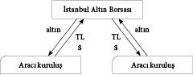
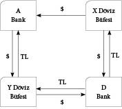

BORSA
GİRİŞ
Her kitabın bir amacı vardır. Kimi yazdığı için yazarı mutlu eder, kimi ise okurunu. Kimileri zaman geçirmek içindir, kimileri hediye edilmek için, kimileri rafları zengin göstermek için... Bazı kitaplar ise, kapılar çarpmasın diye aralarına ya da çocuklar masaya otururken boyları yetişsin de üstlerine bir şeyler dökmesin diye altlarına koymak içindir.
Elinizdeki kitapta ise bu özelliklerin hepsinden biraz var. Ben kendi adıma, yazdığım –yani bitirebildiğim– için mutluyum. Ayrıca kalınlığı da fena sayılmaz; hem yer kaplar, hem kapı tutar, hem de yeterli yükseklik sağlar. Geriye tek bir kritik nokta kalıyor: Umarım okuyan da mutlu olur.
Bu kitabı farklı biçimlerde okuyabilirsiniz. Sırasıyla tüm bölümleri okuyabilir ve kendi mantık silsileniz içinde temel finans bilgisine özet hâlinde ulaşabilirsiniz ya da yalnızca ilgilendiğiniz bölüm(leri) okuyarak bazı kısımlarını atlayabilirsiniz. Kitabın birbirinden tam bağımsız olarak hazırlanmış bölümlerden oluşmasındaki temel amaç da bu aslında. Bana göre, ilgilendiğiniz kısımlar, anlam bütünlüğü açısından bir problem yaratmaksızın okunabilir ve gerektiğinde sadece ilgili bölümler de gözden geçirilebilir.
Adından da anlaşılacağı üzere kitabın hedef kitlesi, finans konusundan bihaber olan ya da temel bilgiler konusunda eksikleri olduğunu düşünenlerdir. Öte yandan, yaklaşık on yılı aşan profesyonel eğitmenlik ve danışmanlık deneyimimden sonra, finans piyasasında çalışan arkadaşlarımızın da bunca deneyimlerine rağmen, ne yazık ki, kitabın içeriğindeki pek çok temel konudan uzak oldukları kanısındayım. Dolayısıyla, kesinlikle aramızda kalacak olan bu gizlilik çerçevesinde, sektör içinde olan ve bazı temel konularda eksiklikleri bulunduğunu düşünen arkadaşlarımın da bu kitaptan yararlanacaklarını düşünüyorum.
Kitabı oluşturan temel bölümler, finansın da temel kısımlarını oluşturduğunu düşündüğümüz ve temel düzeyde aktarılacak olan dört temel konuyu içermektedir. Bunlar:
• Temel Finansal Matematik
• Temel Muhasebe Bilgisi ve Temel Finansal Analiz
• Mali Piyasalar ve Enstrümanlar
• Teşkilatlanmış Piyasa ile Borsalar ve Birbirleriyle Etkileşimleri
İlk bölüm olan Temel Finansal Matematik, finansın temelini oluşturmaktadır. Paranın zaman değeri, tüm maliyet ve kazanç yaklaşımlarının temelinde olduğuna göre, bugünkü paranın gelecekteki değeri, ileride kazanılması ya da ödenilmesi düşünülen paranın bugünkü değeri bir finansal karar öncesinde çok önemlidir. Bu açıdan bakıldığında, paranın zaman değeri, faizlendirme, iskontolama, basit-bileşik faiz, anüite ve bu matematiğin finansal ürünlere uygulanmasını içeren ilk bölüm, finansa yeni başlayan ya da “Ben yıllardır bu işi yapıyorum” diyen herkes için kaçınılmaz önem taşımaktadır. (Biraz sıkıcı olsa da!)
Kitabın ikinci bölümünü oluşturan Temel Muhasebe Bilgisi ve Temel Finansal Analiz’de ise, finansal piyasalarda karar mekanizmasının ikinci adımı olan mali tabloların analizini içermektedir. Kredi verme, borç alma ya da ortak olma süreçlerinin tümünde de ilgili işletmenin mali tabloları incelenecektir. Borsada yatırım yapmak da bir işletmeye ortak olmak anlamına geldiğine göre, bu tarz bir yatırım süreci de yine mali tabloları tanımayı ve onları analiz etmeyi gerektirecektir. Bu temel yaklaşımdan yola çıkan bu bölümde muhasebe ilkelerinden, çalışma prensiplerinden ve muhasebe sisteminden bahsetmek yerine, okurun analize geçebilmesi için gerekli olduğunu düşündüğümüz mali tabloların tanıtımı ve onların basit analiz yöntemlerinden bahsedilmiştir. Buna karşılık, temel muhasebe bilgisinden tümüyle yoksun okurların bir temel muhasebe kitabından yararlanmaları da anlamlı olacaktır.
Kitabın üçüncü bölümünde ise Mali Piyasalar ve Enstrümanlar tartışılacaktır. Yatırım enstrümanları ve bunların işlem gördükleri piyasalar tanıtılacaktır. Bu bölümde okur; hisse senedi, yatırım fonu, hazine bonosu, repo gibi enstrümanları tanıyacak ve bunların ülkemizdeki işlem görme kurallarıyla tanışacaktır. Ayrıca para piyasası, sermaye piyasası, portföy oluşturma gibi konular da tartışılacak ve makroekonomik dengelerin piyasaları etkilemesi gözden geçirilecektir.
Kitabın dördüncü ve son bölümü olan Teşkilatlanmış Piyasa ile Borsalar ve Birbirleriyle Etkileşimleri’nde, bir önceki bölümde tartışılan piyasa ve enstrümanların ülkemizdeki uygulamaları ve aktif piyasalar incelenmiştir. Buna göre, gazete ve televizyonda sıkça duyduğumuz piyasa bilgi ve terimleri artık daha anlamlı gelecektir. Efektif, APİ, Interbank, Merkez Bankası Müdahalesi, Altın Borsası gibi terim ve kavramların daha anlaşılır hâle geleceğini umduğumuz bu bölümle birlikte kitabı tamamlamış olacağız.
Tek bir kitapta pek çok geniş konuyu tartışmayı amaçlayan bu yapıtta, doğal olarak, tüm konuların detayına girilemeyecektir. Bu bağlamda, ancak söz konusu ana konular temel hatlarıyla tanıtılacak ve okurun ilgilendiği konuya yönelimi öğütlenecektir. Ancak yine de çalışma gerektiren konularla ilgili olarak, tıpkı bir ders kitabı gibi, soru desteği düşünülmüştür. Bu durum, bir seyahat okumasının yanı sıra, ders çalışma benzeri bir okumayı da mümkün ve hatta bazı bölümler için (finans matematiği gibi) gerekli kılmaktadır.
Bu kitapta yer almayan, ancak finans teorisiyle ilgisi olan pek çok önemli konu olduğunu biliyorum elbette. Fakat tümünü böylesi bir kitaba sığdırmak mümkün olamazdı. Bunun yerine temel finans matematiği, temel muhasebe bilgisi ve mali tablo analizi, piyasalar ve enstrümanlar ile, söz konusu piyasaların ülkemizdeki işleyiş ve birbirleriyle etkileşimlerini inceledik. Hâl böyle olunca da kısa sürede çok iş yapmak isteyen bir girişimci ya da dar yerde iyi oynamak isteyen bir düğün davetlisi gibi, muhtemelen bazı figürleri atladık veya kısa kesmek zorunda kaldık. Ama zaten asıl amaç da yan masalara oynayabildiğimizi göstermek değil mi? Dolayısıyla, birkaç figür göstersek yeter. Yerimiz dar da olsa piyasa bilgisini ön plana çıkaran, ancak teorik alt yapıyı da elden bırakmamaya çalışan bir çizgiyi amaçladık.
Yıllardır hemen her ortamda ve her fırsatta çevremdekilerle paylaştığım bir iddiamı burada da yinelemek istiyorum: Dolayısıyla, şimdiye kadar finanstan korktuysanız, artık korkmayın. Bu kitap sizin için bir başlangıç olsun, bulaşın ve öğrenin. Çünkü karşınızda ne at var ne de deve. Ayrıca, olsa da kaç yazar?
Bunca girişten sonra, yeni başlayanlar ve/veya alaylı olmak istemeyenler için hazırlamış olduğumuz kitaba başlayabiliriz artık. Hepimize kolay gelsin.
“Gerçeği söylemek için çok fazla sözcüğe ihtiyacınız yoktur.”C. Joseph
BÖLÜM 1
TEMEL FİNANSAL MATEMATİK
“Matematiksel işleyiş yanlızca doğruyu vermekle kalmaz, aynı zamanda sıra dışı bir güzellik de taşır. Soğuk ve kesin bir güzellik... Tıpkı bir heykel gibi...”
Bernard Russel
FİNANSAL MATEMATİĞE GİRİŞ
Tüm pozitif bilimlerin temelinde karşımıza çıkan matematik, finansal piyasalarda işlem yapan yatırımcı ve profesyoneller için de karşımıza finansal matematik formunda çıkmaktadır. Modern bilişim sistemlerinin de varlığı ile pek çok işlemsel hamallığı üzerimizden alan teknolojiler, ne yazık ki hâlâ matematikten bihaber olmamızı engelleyecek düzeye gelemediler. Gelmiş olsalar dahi, müşteri ziyareti, yeni ürün tasarlanması ya da ihtiyaçlar doğrultusunda ürün modifikasyonu gibi durumlarda, karar vericinin matematik bilgisine ihtiyaç duyulacağı gerçeğinde radikal bir değişiklik yaratamamışlardır.
İşte bu yüzden finansal kurumlarda çalışan tüm profesyonellerin ya da “ne ola ki bu finansal matematik?” diyen yatırımcıların basit bir üssel fonksiyonlu hesap makinesi yardımı ile fiyatlamaya esas olan matematik denklemleri kuracak ve bunları çözecek temel finansal matematik bilgisine sahip olmaları gerekmektedir. Kitabın bu bölümü de bu amaçla tasarlanmış olup, bilgisayar ya da finansal hesap makinesine ihtiyaç duyulmaksızın, üssel fonksiyonlu basit bir hesap makinesi ile finansal hesapların yapılması konusundaki gerekli bilgi ve becerileri kazandırmayı hedeflemektedir.
Böylesi bir konunun bir kitap aracılığıyla öğrenilmesinin güçlüğünün farkında olan ve yaşamının yaklaşık on yılını bu konuyu çeşitli seminerlerde ve sınıf içi eğitimlerde anlatarak geçirmiş biri olarak, size kötü bir haberim var: Ne yazık ki yanlızca okuyarak kapamayacağınız bir konu ile karşı karşıyasınız! Yani elinize bir üssel fonksiyonlu hesap makinesi almak ve onu kullanarak sayfaları çevirmek zorundasınız (hayır sayfaları elinizle çevirebilirsiniz, makine soruları çözmek için lazım). Üssel fonksiyonlu bir hesap makinesi dediğimizde kastımız, örneğin 35’i hesaplayabilecek, xy ya da ab şeklinde tanımlı tuşları olan en basit hesap makinesidir. Bu anlamda, bilgisayar kullanıyorsanız, Windows işletim sisteminin içindeki hesap makinesi de işinizi görecektir. Ancak yine de bizim önerimiz elinizin altında böyle bir makine bulundurmanızdır. Böylesi en ucuz makinelerin kitabın fiyatının altında olduğunu biliyorum, zira seminerlerim için her hafta yarım düzine kadar satın almak zorunda kalıyorum (zamanla eksiliyor da).
Modül, öncelikle paranın zaman değeri gibi temel finansal bilgiler ile başlayarak, uç noktada finansal ürünlerin fiyatlandırılması, getirilerinin hesaplanması ve birbirleriyle kıyaslanması sürecini tanıtacak ve ağırlıklı olarak bol örnek içeren bir süreçle program tamamlanacaktır. Finansal matematik konusunu dört temel başlık altında inceleyeceğiz:
• Paranın Zaman Değeri ve Faiz Kavramları
• Faizlendirme ve İskontolama
• Anüite Hesapları
• Finansal Ürünler ve Matematik
PARANIN ZAMAN DEĞERİ VE FAİZ KAVRAMLARI
Şimdi, sırayla bu konuları incelmeye başlayalım. Öncelikle “Paranın zaman değeri ve faiz kavramları”ndan başlayacağız.
Paranın zaman değeri, kısaca paranın zaman karşısında, özellikle de enflasyon karşısındaki değerinin korunması gereğinin mantığı üzerine kurulmuştur. Buna göre yatırımcı cebindeki parasından belli bir süre uzak kalmak karşılığında belli bir getiri talep edecektir. Her ne kadar bazı sistemlerde farklı isimler altında anılsa da tanımı gereği, paranın zaman değerinin bünyesinde “faiz” kavramı vardır.
Bu nedenle“paranın zaman değeri” konusunu da çeşitli faiz kavramlarıyla birlikte işleyeceğiz:
1. Paranın Zaman Değeri
2. Basit Faiz
3. Bileşik Faiz
4. Sürekli Faiz
5. Nominal ve Efektif Faiz
1. Paranın Zaman Değeri
Zamanı bilinmeyen bir paranın değerini saptamak da problemli olacaktır. Para zamana göre değer ve anlam kazanır. Mevcut enflasyonist ortamda peşin 200 TL’nin 5 yıl sonraki 250 TL’den daha değerli olduğu tartışılmayacak bir gerçektir. Faiz hesabı yapabilen herkes, peşin 200 TL’yi 5 yıl sonraki 250 TL’ye tercih edecektir. Ancak süre kısaldığında ya da söz konusu para üzerinde ince hesaplara girildiğinde hesaplamalar zorlaşabilecektir.
Benzer biçimde, bugün 100 TL’ye mal olan bir yatırım, 2 yıl sonra 265 TL getiri sağlıyorsa, bu yatırım yapılmalı mıdır? Şüphesiz bu sorunun yanıtı, söz konusu 2 yıllık dönem içinde paranın değerinin aşınma oranına bağlıdır. İşte bu örneğimizde paranın aşınma oranı olarak ifade ettiğimiz kavram, paranın zaman değeri olarak belirttiğimiz kavramdır.
Paranın Zaman Değeri kavramını daha geniş olarak açıklayabilmek için konuya hem fon sağlayan (ödünç veren) hem de fon kullanan (ödünç alan) açısından bakalım. Fon kullanan açısından paranın zaman değeri, bugün ödünç alarak kullandığı paraya karşılık olarak gelecekteki herhangi bir zaman noktasında geri ödediği/ödeyeceği para arasındaki farktır. Benzer şekilde, fon sağlayan kişinin açısından da bugün ödünç verdiği paraya karşılık gelecekteki herhangi bir zaman noktasında almaya razı olduğu para arasındaki farktır. Her iki örnekte de söz konusu fark, paranın iki zaman noktası arasındaki değer kaybını gösteren ve paranın zaman değeri olarak tanımlanan kavramdır. Dolayısıyla, paranın zaman değerinin işlevi, değişik zaman noktalarında gerçekleşmeleri söz konusu olan nakit akımlarının her birinin/hepsinin değerlerini gösteren aynı zaman noktasına göre belirlemektir.
Paranın zaman değerini açıklamak için iki temel kavram tanıtılmalıdır:
• Gelecek Değer Kavramı
• Şimdiki Değer Kavramı
Gelecek Değer Kavramı
Gelecek değer, bir paranın belirli bir faiz oranı üzerinden belirli bir süre sonra ulaşacağı değeri ifade etmektedir. Bu kavramı matematiksel olarak gösterebilmek için şu notasyonları kullanalım:
|
FV = PV + PV x r FV = PV (1 + r) |
PV : Anapara
r : Dönemsel faiz oranı
PV x r : Dönem sonundaki faiz tutarı
FV : Dönem sonundaki anapara ve faiz tutarı
Buna göre, bugün PV miktarındaki para yıllık r faiz oranı üzerinden 1 yıl yatırıldığında para, 1 yıl sonunda FV değerine ulaşacak ve bu değer de
|
FV = PV + faiz kazancı = PV + PV x r = PV (1 + r) |
olacaktır.
Şimdiki Değer Kavramı
Şimdiki değer, herhangi bir nakit akımının bugünkü veya sıfır zaman noktasındaki değeridir. Paranın değerindeki aşınmanın/zaman değerinin pozitif olduğu bir ortamda, örneğin 2 yıl sonra gerçekleşecek olan 400 TL’nin şimdiki/bugünkü değerinin 400 TL’den daha az olacağı açıktır. Ancak, bu değerin tam olarak kaç TL olduğunun belirlenmesi amacıyla şimdiki değer saptanmalıdır.
2. Basit Faiz
Faiz oranının anapara tutarı ile çarpılmasıyla yapılan hesaplama yöntemi basit faiz kavramı olarak kabul edilebilir. Bu noktada ve çalışmanın ilerleyen bölümlerinde gelecek değer bölümündeki notasyon kullanılacaktır.
Faiz hesaplamalarını formül hâlinde şöyle belirleriz:
|
FV = PV + PV x r FV = PV (1 + r) |
PV : Anapara
r : Dönemsel faiz oranı (yüzde değer olarak)
PV x r : Dönem sonundaki faiz tutarı
FV : Dönem sonundaki anapara ve faiz tutarı
|
FV = PV (1 + r) |
* |
Basit faizdeki temel yaklaşım, her dönem sonunda işleyen dönemsel faizin anaparaya eklenmemesidir. Dönem sonunda işlemiş olan faiz üzerinden devam eden dönemlerde faiz kazanmak mümkün değildir.
Diğer bir deyişle, faize faiz işletilmez. Basit faiz mantığı ile PV’nin iki dönem sonraki değeri FV2’de aşağıdaki şekilde hesaplanacaktır:
|
FV2 = PV (1 + r) + PV x r FV2 = PV (1 + 2r) |
Aynı mantıkla n dönem sonunda PV tutarlı anaparanın ulaşacağı değer FVn,
|
FVn = PV (1 + n x r) |
olarak hesaplanır.
n dönem içinde kazanılan toplam faiz miktarı,
|
Faiz Miktarı = PV (1 + n x r) – PV |
’dir. |
n döneme ait basit faiz oranı,
|
rn = (PV(1 + n x r) – PV) / PV |
rn = n x r olarak hesaplanır.
n Döneme Ait Basit Faiz Oranı
|
rn = n x r |
rn : n Döneme Ait Basit Faiz Oranı
n : Dönem Sayısı
r : Dönemsel Faiz Oranı
|
ÖRNEK 1 Aylık net %5 ile değerlendirilen bir yatırımın 6 aylık basit faiz oranı kaçtır? |
rn = n x r
r6 = 6 x 0,05
r6 = 0,30 (%30)’dur.
|
ÖRNEK 2 Yıllık %64 faiz ile yatırdığınız 2.000 TL’nin basit faiz hesabına göre 3 yıl sonunda anapara ve faiz ödemeli olmak üzere, ulaşacağı değer ne kadar olacaktır? |
1 yıllık faiz tutarı = PV x r
3 yıllık faiz tutarı = PV x r x 3
= 2.000 x 0,64 x 3
= 3.840 TL
Anapara + Faiz = 2.000 + 3.840
= 5.840 TL
3. Bileşik Faiz
Bileşik faiz, dönemler itibarıyla anapara tutarına karşılık gelen faiz tutarının yine aynı faiz şartları üzerinden değerlendirilmesi varsayımıyla anaparanın kazandığı toplam faiz tutarının katlanarak büyümesi esasına dayanır. Buna göre para + faizi yeniden faizlendirilmektedir (yani daha çok paranız olur).
|
ÖRNEK 3 Bankaya 2.000 TL tutarındaki mevduatınızı %64 net faizle yılda bir kere faiz ödemeli olarak 3 yıl vadeli yatırdınız. • Yatırdığınız paranın 3 yıl sonundaki değeri ne olacaktır? • Bulduğunuz değeri basit faiz hesabına göre hesapladığınız değer ile karşılaştırınız. |
1. Yıl sonundaki değer:
|
Dönem |
Dönem Başı |
(1 + r) |
Dönem Sonu |
|
1 |
2.000 |
1,64 |
3.280 |
2. Yıl sonundaki değer:
|
Dönem |
Dönem Başı |
(1 + r) |
Dönem Sonu |
|
1 |
2.000 |
1,64 |
3.280 |
|
2 |
3.280 |
1,64 |
5.379 |
3. Yıl sonundaki değer:
|
Dönem |
Dönem Başı |
(1 + r) |
Dönem Sonu |
|
1 |
2.000 |
1,64 |
3.280 |
|
2 |
3.280 |
1,64 |
5.379 |
|
3 |
5.379 |
1,64 |
8.821 |
Basit faiz hesabı ile 3 yıl sonunda toplam anapara ve faiz tutarını önceki örnekte bulmuştuk. Bu değer: 5.840 TL
Bileşik faiz hesabı ile 3 yıl toplam anapara ve faiz tutarı ise 8.821 TL olmaktadır.
Görüldüğü üzere, bileşik faiz hesabına göre hesaplanan mevduat hesabının dönem sonu tutarı, basit faiz hesabına göre hesaplanan mevduat hesabı tutarından daha fazladır. Bunun nedeni, dönemler itibarıyla kazanılan faizin, aynı faiz oranı ile dönem sonuna kadar tekrar değerlendirilmesidir.
Bileşik faiz kavramı için akılda tutulması gereken önemli noktalardan birisi de hiç kuşkusuz faiz oranı’nın dönemler boyunca sabit kalacağı varsayımıdır. Bu varsayım, ülkemizdeki genel durum dikkate alındığında, çok da olanaklı görülmemekle birlikte, yine de anlamlıdır. Zira farklı vadeli yatırım alternatiflerini kıyaslamak gerektiğinde, onları aynı vadeye getirerek kıyaslayabilmek açısından, tümünün de aynı vadedeki (örneğin 1 yıllık) bileşik faizleri hesaplanacak ve en yüksek bileşik getirisi olan tercih edilecektir. Dolayısıyla, uzun vadede faiz oranlarının değişme riski yüksek olmakla birlikte, yine enstrümanların getirilerinin kıyaslanabilmesi açısından bileşik faizlerinin hesaplanması anlamlı olmaktadır.
Yukarıdaki bölümde yıl içinde sadece bir kere yıl sonunda olmak üzere faiz ödenmesi prensibini inceledik. Şimdi de yılda bir kereden daha fazla faiz hesaplanması durumunda sonuçların nasıl etkileneceğini inceleyelim:
|
ÖRNEK 4 1.000 TL tutarındaki paranızı yıllık %58 faizle, yılda bir kere faiz ödemeli olarak yatırdınız. Yılda 2 ve 4 kere faiz aldığınız mevduatın (yani 6 ve 3 er aylık mevduatlar) değerini basit faiz hesabına göre hesapladığınız değer ile karşılaştırınız. Bu durumda yıllık net faiz geliriniz toplam olarak ne kadar olacaktır? |
Yıllık olarak parayı yatırmamız durumunda yıl sonunda alacağımız anapara ve faiz tutarı:
|
Dönem |
Dönem Başı |
(1 + r) |
Dönem Sonu |
|
1 |
1.000 |
1,58 |
1.580 |
Bu örnekte, 6 ayda bir faiz ödemeli (yılda 2 kere) mevduata alacağımız faiz ve anapara tutarı tabloda gösterildiği gibi olacaktır:
|
Dönem |
Dönem Başı |
(1 + r / 2) |
Dönem Sonu |
|
1 |
1.000 |
1,29 |
1.290 |
|
2 |
1.290 |
1.29 |
1.664 |
Buna göre yıllık yerine 2 kez 6 aylık dönemde faizlenen paranın vade sonu değeri daha yüksek olmaktadır. Örneğimizde bu fark:
1.664 – 1.580 = 84’tür.
Aynı örnekte, 3 ayda bir faiz ödemeli (yılda 4 kere) mevduata alacağımız faiz ve anapara tutarı ise aşağıdaki gibidir:
|
Dönem |
Dönem Başı |
(1 + r / 4) |
Dönem Sonu |
|
1 |
1.000 |
1,145 |
1.145 |
|
2 |
1.145 |
1,145 |
1.311 |
|
3 |
1.311 |
1,145 |
1.501 |
|
4 |
1.501 |
1,145 |
1.718 |
Sonuç olarak:
Yılda 1 kere faiz ödemeli
toplam anapara ve faiz tutarı : 1.580 TL
Yılda 2 kere faiz ödemeli
toplam anapara ve faiz tutarı : 1.664 TL
Yılda 4 kere faiz ödemeli
toplam anapara ve faiz tutarı : 1.718 TL
olmaktadır.
Bu durumda, yılda 4 kere (her 3 ayda bir) faiz ödemeli bir mevduat hesabı, yılda 2 kere ve yılda 1 kere faiz ödemeli mevduat hesabından daha fazla getiri sağlar. Çünkü yılda birden fazla dönüşü olan mevduat sisteminde, faiz olarak alınan tutarın tekrar değerlendirilmesi mümkün olabilecektir.
|
ÖRNEK 5 Anapara = 100 TL Faiz Oranı = %64 Süre = 1 yıl |
a. Yılda 1 kere faiz ödemeli
FV = 100 x (1 + (0.64 / 1))1
= 100 x 1.64
= 164 TL
b. Yılda 2 kere (6 ayda bir) faiz ödemeli
FV = 100 x (1 + (0.64 / 2))2
= 100 x 1.7424
= 174.24 TL
c. Yılda 4 kere (3 ayda bir) faiz ödemeli
FV = 100 x (1 + (0.64 / 4))4
= 100 x 1.8106
= 181.06 TL
ç. Yılda 12 kere (aylık) faiz ödemeli
FV = 100 x (1 + (0.64 / 12))12
= 100 x 1.8654
= 186.55 TL
d. Yılda 365 kere (günlük) faiz ödemeli
FV = 100 x (1 + (0.64/365))365
= 100 x 1.8954
= 189.54 TL
Bu antrenmanları yanlızca gözle takip etmediğinizi umuyoruz. Söz konusu hesapları kendi makinenizin ekranında yapmamanız hâlinde, ilk pratik uygulamanızın başarısızlıkla sonuçlanma olasılığının oldukça yüksek olduğuna emin olabilirsiniz. Bu nedenle, lütfen şimdi, yukarıdaki hesapları bir kez de makineniz eşliğinde yapınız; burada kritik nokta parantezlerdir. Açtığınız parantez kadarını kapatmalısınız!
Döneme Ait Bileşik Faiz Oranının Hesaplanması
Bir önceki bölümde yapmış olduğumuz örneği hatırlayalım:
Anapara = 100 TL
Faiz oranı = %64
Süre = 1 yıl
Bu bilgiyle gecelik (over night) faizlendirilen paranın dönem sonu değeri: 189.54 TL idi.
Bu durumda dönemsel toplam getiri tutarı, dönem sonu değeri ile dönem başı değeri arasındaki fark kadar olacaktır. Buna göre toplam faiz tutarı:
189,54 – 100 = 89,54 TL’dir.
Söz konusu faiz, paranın her gün faizlendirilmesiyle bulunduğuna göre, aslında paranın bileşik faizlendirilmesi suretiyle elde edilmiştir. O hâlde dönemsel bileşik faiz oranı:
Bileşik faiz oranı = 89,54 / 100 = 0.8954 = %89,54’tür.
Bu rakam anlamlı olmakla birlikte, bileşik faiz sorulduğunda, önce paranın dönem sonu değerini bulup bu değerin ana para ile oranlanarak hesaplanmasından daha pratik bir yol olmalıdır.
Bu aşamada, dönemsel bileşik faiz oranını bulmak için pratik bir formülün türetilişini tartışacağız:
r dönemsel faiz oranı ile değerlendirilen PV tutarlı anaparanın 1 dönem sonundaki değeri FV1:
FV1 = PV (1 + r)
2 dönem sonundaki değeri FV2:
FV2 = PV (1 + r) + PV (1 + r) x r
FV2 = PV (1 + r)2
n dönem sonundaki değeri FVn;
FVn = PV (1 + r)n
olarak hesaplanmıştı. Buna göre n dönem içinde kazanılan toplam faiz miktarı ise,
Faiz miktarı = PV (1 + r)n – PV’dir.
Buna göre, n döneme ait bileşik faiz oranı ise;
rn = (PV (1 + r)n – PV) / PV
rn = (1 + r)n – 1 olarak hesaplanır.
n Döneme Ait Bileşik Faiz Oranı
|
rn = (1 + r)n – 1 |
rn : n Dönemlik Bileşik Faiz Oranı
r : Dönemsel Faiz Oranı
n : Dönem Sayısı
|
ÖRNEK 6 Anapara = 100 TL Faiz Oranı = %52 Süre = 1 yıl a. Yılda 1 kere faiz ödemeli b. Yılda 4 kere faiz ödemeli (3 ayda 1 kere faiz ödemeli) c. Ayda 1 kere faiz ödemeli ç. Yılda 365 kere faiz ödemeli olmak üzere yıllık bileşik faiz oranlarını hesaplayalım: |
a. r1 = (1 + 0,52)1 – 1
r1 = 0,52 => (%52.00)
b. r4 = (1 + 0,52 / 4)4 – 1
r4 = 0,6304 => (%63,04)
c. r12 = (1 + 0,52 / 12)12 – 1
r12 = 0.6637 => (%66.37)
ç. r365 = (1 + 0,52 / 365)365 – 1
r365 = 0.6814 => (%68.14)
4. Sürekli Faiz
Yıllık faiz oranı r, verildiğinde ve faiz hesaplamalarında dönem sayısı olan n, çok büyük olduğu takdirde, bu durum sürekli faiz kavramını gündeme getirmektedir.
Daha çok teorik bir durumu yansıtmakta olan sürekli faiz kavramında denklem aşağıdaki şekli alır:
|
FV = PV (1 + r/n)n |
n => sürekli
FV : Gelecekteki değeri
PV : Anapara değeri
r : Yıllık faiz oranı
n : Yılda kaç kere faiz ödendiği
|
FV = PVer |
e : 2.718
Bu durumda sürekli faiz oranı hesaplanmak istendiğinde aynı mantık ile
|
rs = er – 1 |
elde edilir.
rs : Yıllık sürekli faiz oranı
r : Yıllık basit faiz oranı
Sürekli faiz oranı bir bileşik faiz türü olmakla beraber finans ve bankacılıkta uygulaması yoktur. Sürekli faiz, verilmiş olan basit faizin ulaşılabileceği en yüksek bileşik faizi ifade etmektedir.
|
ÖRNEK 7 %74 yıllık basit faiz oranının yıllık sürekli faiz oranı kaçtır? |
rs = e0,74 – 1
rs = 1,0957 => (%109.57)
5. Nominal Faiz ve Efektif Faiz
Yılda birden fazla ödemeli faiz hesaplarında, yıl sonunda gerçekleşen faiz oranlarının hesaplanması nominal ve efektif faiz oranları kavramını gündeme getirmektedir. Nominal faiz oranı yıllık basit faiz oranını, efektif faiz oranı ise yıllık bileşik faiz oranını ifade etmektedir. Hem nominal faiz oranı hem de efektif faiz oranı bankacılık sisteminde kullanılmaktadır.
Kredi, mevduat, repo gibi çeşitli finansal ürünlerin faiz oranlarının karşı tarafa bildirilmesinde nominal faiz oranları kullanılır. Örneğin, banka müşteriye 3 ay vadeli kredi faizini bildirmek için yıllık basit (nominal) faiz oranını bildirir. Tüm bankalar vade ne olursa olsun mevduat faiz oranlarını açıklarken nominal faiz oranlarını ilan ederler.
Buna karşılık, efektif faiz oranı tarafların yıllık bazda gerçek maliyet ve kârlılıklarını hesaplamak için kullandıkları faiz oranıdır. Örneğin, aylık mevduatın bankaya olan gerçek getirisi gibi. Dolayısıyla, bu oranlar takip edilip işlemlerde kullanılmalarına rağmen konuşmalarda lanse edilmezler. Ancak, örneğin, hazine bonosu getirilerinde açıklanmaktadırlar.
Paranın zaman değerini dikkate alması nedeniyle finansal ürünlerin gerçek maliyet ve kârlılık hesaplamasında efektif faiz oranları kullanılmaktadır.
• Nominal Faiz Oranı
• Efektif Faiz Oranı
Nominal Faiz Oranı
Nominal faiz oranı, yıllık basit faiz oranı anlamına gelmektedir. Buna göre:
|
rnom = n x r |
rnom : Nominal faiz oranı
n : Yılda kaç faiz ödeme döneminin bulunduğu
r : Dönemsel faiz oranı
Efektif Faiz Oranı
Efektif faiz oranı, yıllık bileşik faiz oranı anlamına gelmektedir. Buna göre:
|
ref = (1 + r)n – 1 |
veya
|
ref = (1 + rnom / n)n – 1 |
ref = Efektif faiz oranı
|
ÖRNEK 8 a. Nominal faiz oranı %57 olsun; b. 3 ayda 1 kere faiz ödemeli, c. Yılda 12 kere faiz ödemeli olmak üzere efektif faiz oranlarını hesaplayalım: |
a. rnom = %57
n = 4
ref = (1 + 0,57 / 4)4 – 1
ref = %70,38
b. n = 12
ref = (1 + 0,57 / 12)12 – 1
ref = %74.5
|
PROBLEM Hazine bonosunun 104 günlük getirisi %13,5’tir. Nominal ve efektif getirilerini hesaplayınız. |
q = 365 / 104 = 3,5096
rnom = 3,5096 x 13,5
rnom = 47,37 %
ref = (1 + (0,4737 / 3,5096))3,5096 – 1
ref = %55,96
FAİZLENDİRME VE İSKONTOLAMA
Paranın zaman değeri kavramı ve temel faiz kavramları incelendikten sonraki adımda, finans sisteminde faizin iki temel kullanımı incelenmelidir. Buna göre muhtemel durumlar, bugünkü değeri bilinen paranın belli bir faiz oranı üzerinden ilerideki değerini hesaplamayı amaçlayan “faizlendirme” ve gelecekteki değeri belli olan bir tutarın bugünkü değerini bulmayı amaçlayan “iskontolama”dır.
Faizlendirme
Gelecekteki değer kavramını bir kez daha gözden geçirelim:
Bankaya 1.000 TL’lik mevduatı yıllık net %61 faiz oranı ile 1 yıl vadeli yatırdığınızda, 1 yıl sonundaki anapara ve faiz tutarları ne olacaktır?
Faiz hesabının formülünü tekrar edelim:
|
FV = PV (1 + r)n |
PV : Anapara
R : Faiz oranı
PV x r : Dönem sonundaki faiz tutarı
FV : n dönem sonunda, r faiz oranı ile toplam anapara ve faiz toplamı
ve n = 1 olduğunda,
|
FV = PV (1 + r) |
Örneğimizde dönem sonu anapara ve faiz tutarını hesaplamak istersek,
FV = 1.000 TL (1.0 + 0.61)
= 1.000 x 1.61
= 1.610 TL olacaktır.
Gelecekteki değer, birden çok dönem sonunda hesaplanır ise:
|
ÖRNEK 9 Önceki örnekte 1.000 TL’sini yıllık %62 faiz oranı ile her yıl sonunda ödemeli olmak üzere, 2 yıl vadeli olarak yatırırsak, dönem sonunda toplam ne kadar anapara ve faizi olacaktır? |
1. Yıl Sonu Değeri:
FV = 1.000 x (1.0 + 0.62)
= 1.620 TL
2. Yıl Sonu Değeri:
FV = 1.620 x (1.0 + 0.62)
= 2.624 TL
Yukarıda hesaplandığı gibi, değeri bilinen bir paranın gelecek zamandaki değerini hesaplamaya faizlendirme denir. Buna göre:
|
FV = PV (1 + r)n |
PV : Anapara
FV : Anaparanın n dönem sonundaki değeri
r : Dönemsel faiz oranı
n : Dönem sayısı
İskontolama
Şimdiki değer kavramını bir kez daha gözden geçirelim: Faizlendirme bölümünde paranın gelecekteki değerinin dönem ve faiz oranına bağlı olarak arttığını görmüş olduk. Aynı şekilde, gelecekteki bir paranın bugünkü değerinin öğrenilmesi, yatırımın veya projenin kârlılığı ve fizibilitesinin diğer yatırım araçları veya projelerin kendi aralarındaki seçimini etkileyen en önemli unsurdur.
Örneğin, bir yıl sonunda 100.000 TL değeri olacağını bildiğimiz bir yatırım aracının (örneğin tahvil) piyasada geçerli faiz oranlarından bugünkü değerinin ne olduğunu öğrenebiliriz. Gelecekteki belirli bir değeri bugünkü değere getirmek için iskontolama metodundan faydalanabiliriz.
Gelecekteki değeri belli olan bir paranın bugünkü değerini hesaplamaya iskontolama denir.
Yukarıda belirtilen faizlendirme formülünü
(FV = PV (1 + r)n)
kullanarak eşitliğin her iki tarafında (1 + r)n değerine bölerek iskontolama formülünü ortaya çıkarabiliriz. Buna göre:
İskontolama Formülü
|
FV PV = (1 + r)n |
PV : Anapara
r : Dönemsel faiz oranı
n : Dönem sayısı
FV : Paranın gelecek zamandaki değeri
|
ÖRNEK 10 Yılda bir kere faiz ödemeli olarak %57 faiz oranı ile yatıracağımız bir mevduat hesabımızda, 2 yıl sonunda 246.490 TL paramızın olması için bugün itibarıyla hesabımıza ne kadar para yatırmamız gerekir? |
FV = PV (1 + r)n
FV = 246.490 TL
PV = ?
r = %57
n = 2
|
FV PV = (1 + r)n |
PV = 246.490 / (1.0 + 0.57)2
= 100.000 TL
ANÜİTE HESAPLARI
Belli bir zaman diliminde eşit tutardaki ödemelerin devam ettiği durumları anüite olarak tanımlıyoruz. Temel olarak kredilerde, leasing geri ödemelerinde ve proje analizlerinde kullanılan anüite hesaplarının elle yapılması uzun zaman aldığından, genellikle bilgisayar ya da özel hesap makineleriyle hesaplanması uygun olacaktır. Ancak yine de burada hesaplamanın metodolojisi tartışılacaktır.
Temel olarak eşit taksitlerle geri ödemeyi ya da eşit taksitlerle yapılan bir ödemenin ilerideki değerini ifade eden anüite, aşağıdaki biçimde gösterilebilir:
Anüiteyi iki farklı zaman bakışıyla inceleyeceğiz:
• Anüitenin Bugünkü Değeri
• Anüitenin Gelecekteki Değeri
Anüitenin Bugünkü Değeri
İleride yapılacak eşit taksitli geri ödemelerin bugünkü değerini bulmak anlamlıdır. Bu yolla gelecekteki nakit akımlarının bugünkü değeri bulunabilir.
|
ÖRNEK 11 3 yıl boyunca, faiz oranlarının %50 olduğu bir dönemde, her yıl 1.000 TL ödediğimiz bir yatırımın bugünkü değeri nedir? |
PV (Toplam) = PV(1) + PV(2) + PV(3)
PV(1) = 1,000 / (1 + 0.50)
= 666,7
PV(2) = 1,000 / (1 + 0.50)2
= 444,4
PV(3) = 1,000 / (1 + 0.50)3
= 296,3
PV(Toplam) = 1,407 TL
Örnekte verilen eşit taksitli geri ödemede izlediğimiz yol, her taksitin bugünkü değerini bulmaktı.
PV (Toplam) = PV(1) + PV(2) + PV(3)
Bu çıkarımın formülü:
PV = A (1 / 1 + r) + A (1 / 1 + r)2 + A (1 / 1 + r)3 +
A (1 / 1 + r)4 + A (1 / 1 + r)5......
Buna göre anüitenin bugünkü değerinin hesaplanması:
|
|
PV : Paranın bugünkü değeri
A : Anüite (taksit tutarı)
r : Dönemsel faiz tutarı
n : Taksit sayısı
Daha önce yapmış olduğumuz örneği yeni elde etmiş olduğumuz anüite formülüyle çözmek istersek:
A = 1.000
r = 0,50
n = 3
Buna göre sonuç: PV = 1.407,4’tür.
Anüitenin Gelecekteki Değeri
Yapılan eşit taksitli ödemelerin ya da projenin üreteceği eşit miktarlı getirilerin gelecekteki değerini bulmak anlamlı ve gereklidir. Bu yolla, bir projenin olası getirilerinin ilerideki toplam değerini ya da emeklilik amacıyla her ay belli miktarda biriktirilen paranın hedeflenen dönem sonundaki değeri hesaplanabilir.
|
ÖRNEK 12 3 yıl boyunca, faiz oranlarının %70 olduğu bir dönemde, her yıl 1.000 TL ödediğimiz bir yatırımın 3 yıl sonundaki değeri nedir? |
FV (Toplam) = FV(1) + FV(2) + FV(3)
FV(1) = 1.000 x (1 + 0.70)2
= 1.000 x 2.89
= 2.890
FV(2) = 1.000 x (1 + 070)
= 1.700
FV(3) = 1.000
FV (Toplam) = 2.890 + 1.700 + 1.000
= 5.590 TL
Bu çıkarımı formül hâline döktüğümüzde, yine oldukça uzun, ezberlenmesi güç bir sonuçla karşılaşacağız. Temel yaklaşım olarak, anüitenin şimdiki değerini bulup bu değeri dönem sonuna taşımak da anlamlı olabilecektir.
Anüite Hesapları ile İlgili Sonsöz
Anüite hesaplarında sürenin uzaması hesabı oldukça güçleştireceğinden, hesapların özel makine, tablo ya da bilgisayar yardımıyla yapılması anlamlı olacaktır. Bu noktada, anüiteye yer vermememizin amacı, eşit taksit ödemesinin mantığının anlaşılmasından ibarettir.
Söz konusu formül ya da formüllerin ezberlenmesi de anlamlı olmayacaktır. Ayrıca formüller ezberlense dahi, örneğin şimdiki değeri ve gelecekteki değeri bilinen bir denklemden dönem sayısının ya da faiz oranının çekilerek hesaplanması oldukça güç ve külfetli bir çalışma olacaktır.
FİNANSAL ÜRÜNLER VE MATEMATİK
Bu bölümde, finansal matematiğin temel finansal ürünlerde kullanılmasını tartışacağız. Bu anlamda çalışmamızın temelini oluşturmamakla birlikte, genel kavramların aktarılmasını kolaylaştırması açısından, mevduatta matematiğin kullanımı ile başlanacak ve çeşitli menkul kıymetlerdeki kullanımı ile devam edilecektir. Buna göre, bu bölümün detayları şu şekildedir:
• Mevduat
• Krediler
• Hazine bonosu
Mevduat
Banka mevduatlarının faizlerinin hesabı en temel faiz hesabıdır. Vadeler belli ve genellikle sabittir.
Buna göre, kırık vadeli mevduat olmadığı sürece, para 1 ay, 3 ay, 6 ay ve 1 yıllık periyotlarla yatırılabilir. Böylesi bir durumda paranın vade sonundaki değerinin hesabı oldukça basittir. Daha önce incelemiş olduğumuz örneği hatırlayalım:
|
ÖRNEK 13 1.000 TL tutarındaki paranızı yıllık %58 faiz ile yılda bir kere faiz ödemeli olarak yatırdınız. Yılda 2 ve 4 kere faiz aldığınız mevduatın (yani 6 ve 3’er aylık mevduatlar) değerini basit faiz hesabına göre hesapladığınız değer ile karşılaştırınız. Bu durumda, yıllık net faiz geliriniz toplam olarak ne kadar olacaktır? |
Yıllık olarak parayı yatırmamız durumunda, yıl sonunda alacağımız anapara ve faiz tutarı:
|
Dönem |
Dönem Başı |
(1 + r) |
Dönem Sonu |
|
1 |
1.000 |
1,58 |
1.580 |
Bu örnekte, 6 ayda bir faiz ödemeli (yılda 2 kere) mevduata alacağımız faiz ve anapara tutarı:
|
Dönem |
Dönem Başı |
(1 + r / 2) |
Dönem Sonu |
|
1 |
1.000 |
1,29 |
1.290 |
|
2 |
1.290 |
1,29 |
1.664 |
olacaktır. Buna göre yıllık yerine 2 kez 6 aylık dönemde faizlenen paranın vade sonu değeri daha yüksek olmaktadır. Örneğimizde bu fark: 1.664 – 1.580 = 84’tür.
Aynı örnekte, 3 ayda bir faiz ödemeli (yılda 4 kere) mevduata alacağımız faiz ve anapara tutarı ise:
|
Dönem |
Dönem Başı |
(1 + r / 4) |
Dönem Sonu |
|
1 |
1.000 |
1,145 |
1.145 |
|
2 |
1.145 |
1,145 |
1.311 |
|
3 |
1.311 |
1,145 |
1.501 |
|
4 |
1.501 |
1,145 |
1.718 |
Sonuç olarak:
Yılda 1 kere faiz ödemeli
toplam anapara ve faiz tutarı : 1.580 TL
Yılda 2 kere faiz ödemeli
toplam anapara ve faiz tutarı : 1.664 TL
Yılda 4 kere faiz ödemeli
toplam anapara ve faiz tutarı : 1.718 TL olmaktadır.
Bu soruda yapmış olduğumuz hesapların 3 aylık, 6 aylık ve yıllık ile gecelik için aynı mantık üzerine kurulduğunu gördük. O hâlde, “mevduata özel” bir hesaplama yolu bulmak anlamlı olmayacaktır.
Faiz hesaplarında (anüiteler hariç) kullanabileceğimiz 2 temel formül vardır. Sorunun içeriğine göre hangisini kullanacağımıza karar vermek gerekir.
|
FV = PV (1 + r)n |
ref = (1 + r)n – 1 |
|
|
A |
B |
Eğer paranın zaman değeri tartışılıyor ise A formülü, basit faizden bileşik faize geçiş tartışılıyor ise B formülü, kullanılacaktır.
Tüm faiz hesapları için mantık aynı olmalıdır. Şimdi bu konuyla ilgili birkaç örnek daha yapalım:
|
ÖRNEK 14 Bankaya yatırmış olduğunuz bir aylık mevduat için aylık net %54 faiz verilmektedir. Buna göre, yatırmış olduğunuz 250.000 TL bir ay sonunda kaç TL olacaktır? |
Yanıtınız : _________________________________
|
ÇÖZÜM Soru, paranın dönem sonu değeri olduğuna göre, “paranın zaman değeri” uygulamasıdır ve FV = PV (1 + r)n formülü kullanılmalıdır. Buna göre gerekli bilgiler yerine koyulacaktır. |
FV : Bilinmeyen ve bulunması istenen değer
PV : Yatırılan para (örnekte 250.000 TL)
r : Dönemsel faiz oranı
(örnekte 0.54/12 = 0.045 = %4.5)
n : Dönem sayısı (örnekte 1’dir, çünkü para yatırılmakta ve 1 kez döndükten sonra –1 ay sonunda– çekilmektedir).
Şimdi bu değerleri formülde yerine koyalım:
FV = 250.000 x (1 + 0.045)1 = 261.250 TL
|
ÖRNEK 15 Bankaya para yatırmak için gittiğinizde, aylık mevduata uygulanmakta olan faiz oranının %54 olduğunu öğrendiniz. Buna göre, söz konusu mevduatın efektif getirisi nedir? |
Yanıtınız : _________________________________
|
ÇÖZÜM Soruda, efektif (yıllık bileşik) faiz sorulduğuna göre, “basit–bileşik faiz geçiş” uygulamasıdır. O hâlde, ref = (1 + r)n – 1 formülü kullanılmalıdır. Bu noktada hatırlanılması gereken nokta, finans piyasasında, müşteriye verilen oranların daima nominal (yıllık basit) olmasıdır. Buna göre, sorudaki %54 faiz oranı da yıllık olarak verilecek olan basit faizdir. |
Formülde kullanılacak değerleri gözden geçirelim:
ref : Efektif faiz (yıllık bileşik faiz), örnekte bizden istenen değer.
n : Paranın kendisini tekrar eden sayısı, örnekte aylık mevduatın yıllık bileşik değeri sorulduğuna göre, aylık mevduatın yıl içinde kaç kez döndüğü 12 / 1 = 12 kez hesaplanmalıdır.
r : Dönemsel faiz oranı. Örnekte aylık mevduat için nominal oran %54 olduğuna göre, 1 aylık döneme denk düşen oran = 0.54 / 12 = 0.045 = %4.5
Şimdi bu değerleri formülde yerine koyalım:
ref = (1+r)n – 1 = (1+ 0.045)12 – 1 = 0.6959 = %69,59’dur.
|
ÖRNEK 16 Bankaya yatırmış olduğunuz üç aylık mevduat için aylık net %58 faiz verilmektedir. Buna göre, yatırmış olduğunuz 500.000.000 TL’yi üç ay sonunda çekmez ve ikinci kez aynı faiz oranından üç aylık mevduata yatırmaya karar verirseniz altı ay sonunda kaç TL’niz olacaktır? Öte yandan, söz konusu mevduatın yıllık bileşik faiz oranı (efektif) nedir? |
Yanıtlarınız:
6 ay sonunda paranız : _________________________________
Yıllık bileşik faiz oranı : _________________________________
|
ÇÖZÜM Sorunun ilk kısmı, paranın dönem sonu değeri olduğuna göre, “paranın zaman değeri” uygulamasıdır ve FV = PV (1 + r)n formülü kullanılmalıdır. Buna göre gerekli bilgiler yerine koyulacaktır. |
FV : Bilinmeyen ve bulunması istenen değer
PV : Yatırılan para, örnekte 500.000 TL
r : Dönemsel faiz oranı, (örnekte 0.58/4 = 0.145 = %14.5 3 aylık olduğuna göre, 1 yılda 4 adet 3 aylık dönem olacak ve 3 aylık döneme denk gelen faiz oranı yıllık oranın 1/4’ü kadar olacaktır).
n : Dönem sayısı, örnekte 2’dir; çünkü para yatırılmakta ve 1 kez döndükten sonra (3 ay sonunda), bir kez daha 3 aylık yatırılmakta ve 2. dönüşü takiben, yani 6 ayın sonunda çekilmektedir.
Şimdi bu değerleri formülde yerine koyalım:
FV = 500.000 x (1 + 0.145)2 = 655.512 TL
Sorunun ikinci kısmı, paranın bileşik faizini sorguladığına göre, bu bir “basit faiz - bileşik faiz geçişi” uygulamasıdır ve
ref = (1 + r)n – 1
formülü kullanılmalıdır.
Formülde kullanılacak değerleri gözden geçirelim:
ref : Efektif faiz (yıllık bileşik faiz), örnekte bizden istenen değer.
n : Paranın kendisini tekrar eden sayısı (örnekte 3 aylık mevduatın yıllık bileşik değeri sorulduğuna göre, 3 aylık mevduatın yıl içinde kaç kez döndüğü, 12/3 = 4 kez) belirtilmelidir.
r : Dönemsel faiz oranı. (Örnekte 3 aylık mevduat için nominal oran %58 olduğuna göre, 3 aylık döneme denk düşen oran = 0.58/4 = 0.145 = %14.5)
Şimdi bu değerleri formülde yerine koyalım:
ref = (1 + r)n – 1 = (1 + 0.145)4 – 1 = 0.7188 = %71,88
Krediler
Kredi kavramı finans piyasasının vazgeçilmez kavramlarındandır. Fon ihtiyacı olan taraf, fon arz eden taraftan kredi kullanır. Buna göre borç veren ve borçlanan taraflar doğar. Söz konusu taraflar, transfer olan kaynak üzerinden “paranın zaman değeri”ni dikkate alarak bir faiz hesaplarlar. Faizsiz sistemlerde, ticaret ilişkisi yaratılarak doğan “kâr”, modern bankacılıkta doğrudan “faiz” kavramını getirmiştir.
Buna göre paranın vade sonundaki değeri hesaplanacak ve gerektiğinde para tutarı, gerektiğinde ise basit-bileşik faiz geçişi yapılabilecektir.
Kredi faiz hesaplarında işlemler radikal değişiklikler göstermezler. Klasik faiz hesabında kullanılan yaklaşım krediler için de aynıdır. Örneğin bir aracı kurumun açıkladığı kredi oranı üzerinden, vergi ve fonlar eklenmek suretiyle, söz konusu kredinin kuruma getirisi hesaplanabilir. Benzer biçimde, söz konusu kredinin vergi ve fon kesintileri, kredinin maliyetine eklenerek, müşteriye maliyeti de bulunabilecektir. Bu hesaplar, klasik faiz hesabı üzerinden yapılacağından, söz konusu kredinin basit ve bileşik getirisi ile paranın faizlendirilmesi ya da iskontolanması kavramlarında herhangi bir değişiklik olmayacaktır.
Ancak ülkemizdeki uygulamada, kredi hesaplarında yıl 360 gün olarak kabul edilmektedir. Böylece, yıllık %65’ten 15 günlük bir kredi kullanıldığında ödenecek dönemsel faiz oranı:
0.65 x 15/360 = 0,0271 = %2,71 olacaktır.
Oysa, aynı hesabı faiz kazanacağımız bir enstrüman için yapmış olsaydık (örneğin repo, bono, mevduat gibi), yıl 365 gün ve sonuç:
0.65 x 15/365 = 0,0267 = %2,67 olacaktı.
Görüldüğü üzere, genel hesaplamada radikal bir değişiklik olmamakla birlikte, krediler için temel fark, ülkemizde, yılın 365 gün yerine 360 gün olarak alınmasıdır. Böylesi bir farkı yabancı bir yatırımcı ya da okur anlamakta güçlük çekecektir. Zira gelişmiş pek çok piyasada yıl zaten her durum için 360 gün olarak alınmaktadır. Bu farkın, ülkemiz sisteminde, borç ödeyicinin cebinden daha çok faiz çıkması anlamına geldiği kolayca görülecektir.
Hazine Bonosu
Tahvil ve Bonoların Fiyatlaması
Devletin ya da özel şirketlerin borç para bulmak için ihraç ettikleri borçlanma senetlerine tahvil ve bono denmektedir. Devlet kâğıtları için 1 yıldan kısa vadeyle ihraç olunanlar hazine bonosu, 1 yıldan uzun vadeli olanlar ise devlet tahvili olarak tanımlanmaktadır.
Özel kesimin çıkardığı borçlanma senetleri ise mevzuat gereği 2 yıldan kısa vadeli olamaz ve finansman bonosu olarak adlandırılır. Ancak günümüzde uygulaması bulunmamaktadır.
Tahvillerde Değer Tanımlamaları
Tahvillerin üç türlü değeri vardır:
a. Nominal Değer
Tahvilin üzerinde yazılan değerdir. Bu değer sabittir, hiçbir zaman değişmez. Muhasebe kayıtlarına ve itfa planına esas teşkil eder. Vade sonunda tahvil hamilinin eline geçecek anaparadır.
b. İhraç Değeri
Primli olarak ihraç edilen ve/veya erken alanlara faiz oranı içinde indirim uygulanan tahvillerde ilk satış değeridir.
c. Piyasa Değeri
Tahvillerin piyasa değeri nominal değerden çok farklı olmasa da şartlara göre inip çıkabilir.
Tahvillerin piyasa değeri şu faktörlerden etkilenir:
• Paraya çevrilebilir olmasa bile, piyasada her an için her tahvilin bir değeri vardır. Bu değer anapara ve son faiz ödemesinden beri işlemiş günlük faiz toplamı civarındadır. Tahvilin net yıllık faizi 365’e bölünüp geçen gün sayısı ile çarpıldığında, işlemiş net faizi bulunur.
• Tahvilin nominal faiz oranı, cari faiz oranının altında ise, piyasada borsa değeri başabaş (nominal) değerinin altındadır. Bu durumda “İskontolu işlem görüyor” denilir. Normal olarak tahvillerin üzerinde bir miktar işlemiş faiz bulunduğu için işlemiş faizle birlikte, genellikle başabaşın üzerinde fiyat bulur.
• Tahvilin nominal faiz oranı cari piyasa faiz oranının üstünde ise, piyasa ya da borsa değeri (işlemiş faiz hariç) nominal değerin üzerinde oluşur. Bu durumda da tahvilin “Primli işlem gördüğü” söylenir.
• Normal ekonomik şartlar altında, büyük ve tanınmış şirketlerin tahvilleri ile büyük banka holdinglerin garantisine sahip tahviller, diğerlerine oranla ikincil piyasada daha yüksek değer bulurlar.
Tahvil ve Bono Piyasası Fiyatlamaları
Tahvil satışından ya da kupon ödemesinden elde edilecek nakit girişinin yeniden aynı faiz oranıyla yatırıma dönüştürüldüğü varsayımına dayanır. İkinci el piyasasının likit ve getiri oranlarının istikrarlı olduğu durumlarda tercih edilir.
1 Yıldan Kısa Vadeli Borçlanma Senetleri
|
ND PV = (1 + r x c / 365) |
PV : Tahvilin bugünkü değeri
ND : Nominal değer
r : Getiri oranı
c : Vadeye kalan gün sayısı
|
ÖRNEK 17 Bugün, 16.10.2001 tarihi itibarıyla tedavülde olan 230 gün vadeli, 100.000 TL nominal değerli hazine bonosunun yıllık %78 getiri sağlaması bekleniyorsa, satın alma günündeki değeri ne olmalıdır? |
ND = 100.000
r = %78
c = 230 gün
PV = ?
100.000
PV =
(1 + 0.78 x 230 / 365)
= 67.046 TL
1 Yıldan Uzun Vadeli Borçlanma Senetleri
PV : Bugünkü değeri
c : İlk faiz ödeme tarihine kalan gün sayısı
m : Bir faiz ödeme döneminin içerdiği gün sayısı
(yılda bir ödemeli tahvillerde 365, 6 ayda bir
ödemeli tahvillerde 182, 3 ayda bir ödemeli
tahvillerde 91 alınmaktadır).
r : Getiri oranı
n : Vadeye kadar yapılacak faiz ödeme sayısı
i : Faiz oranı
A : Anapara
F : A x i ilk ödenecek faiz tutarı
|
1 F A PV = x F + Sn + (1 + r)c/m (1 = r)n–1 (1 + r)k–1 k = 2 |
Değişken Faizli Tahviller
c : İlk faiz ödeme tarihine kalan gün sayısı
m : Bir faiz ödeme döneminin içerdiği gün sayısı
(yılda bir ödemeli tahvillerde 365, 6 ayda bir ödemeli tahvillerde 182, 3 ayda bir ödemeli tahvillerde 91 alınmaktadır).
r : Getiri oranı
F : Net faiz tutarı
ND : Nominal değer
PV : Tahvilin bugünkü piyasa değeri
|
F + ND PV = (1 + r)c/m |
|
ÖRNEK 18 Vade tarihi 20.02.2001 olan 100.000 TL nominal değerli, yılda bir faiz ödemeli, değişken faizli devlet tahvili, bugün net %80 getiri sağlaması beklenerek satılmak istenmektedir. İlk yıl için kupon faiz oranı %76’dır. Değişken faizli devlet tahvilinin bugünkü fiyatı ne olmalıdır? (VKG 315 gün.) |
r = %80
c = 315 gün
F = 76.000 TL
ND = 100.000 TL
PV = ?
76000 + 100000
PV =
(1 + 0.80)315/365
= 105.976 TL
Finansal Ürünlerin Fiyatlaması ile İlgili Detaylar
Finansal ürünlerden mevduat, kredi, tahvil ve bonoların fiyatlamasını incelediğimizde, ilk tespitimiz, kitabın başından beri kullandığımız formüller ve yaklaşımlarda bir değişiklik olmadığıdır. Biz zaten faizlendirme ve iskontolama uygulamalarını pek çok soruya uyguladık ve hemen hemen aynıları bu ürünler için de geçerli oldu.
O hâlde, “finansal ürünlerin fiyatlamasında” yeni olan nedir? Aslında yeni bir şey yok. Kredilerde yıldaki gün sayısını takvimden farklı olarak 360 gün aldık, kuponlu tahviller için ise yeni bazı formüller ekledik.
İşin doğrusu, bu ürünlerdeki temel farklılık vergilendirmeden kaynaklanacaktır. Zira, ülkemizde hem kredilerde hem de mevduat ve bono gibi faiz geliri yaratan enstrümanlarda vergi ve benzeri kesintiler olmaktadır. Buna göre matematik işlemlerde yapılması gereken, hesaplara bu kesinti ve eklemeleri katmaktır.
Hesaplama yapılırken formüldeki faiz oranı aynen alınmayacak, kredilerde KKDF, BSMV, komisyon ya da benzeri vergi ve fon maliyetleri, nominal faize eklenecektir. Mevduatta ise vergi ve benzeri oranlar, nominal mevduat faizinden düşülecektir. O hâlde, diğer tüm hesaplar aynıyken, eğer varsa, vergi fon ve benzeri kesinti ya da eklemeler nominal faize eklenmeli ya da çıkarılmalıdır. Bunun dışında bir hesaplama farkı yoktur.
BÖLÜM SONU DEĞERLENDİRME SORULARI
(Okurlar, hesap makinesi kullanımında, bazı değerleri yuvarlayarak alabilecekleri için yukarıdaki tam sonuçlara ulaşamayabilirler. Bu durumda en yakın cevabı işaretlemeleri gerekmektedir.)
1. Aylık faiz oranı %4.2 ise yıllık basit faiz oranı kaçtır?
a) %35 b) %42 c) %50.4 d) %48
2. 17 günlük dönemsel faiz oranı %2.1 ise yıllık basit faiz oranı kaçtır?
a) %12.35 b) %35.7 c) %45.09 d) %50.7
3. Yıllık basit faiz %46 ise 3 aylık dönemsel faiz oranı kaçtır?
a) %3.83 b) %5.1 c) %11.5 d) %12.0
4. Aylık dönemsel faiz oranı %4.2 ise 6 aylık bileşik faiz kaçtır?
a) %50.4 b) %27.9 c) %25.2 d) %29.2
5. 17 günlük dönemsel faiz %2.1 ise yıllık bileşik faiz kaçtır?
a) %25.2 b) %45.1 c) %56.2 d) %59.3
6. Aylık olarak değerlendirilen mevduatın yıllık bileşik faizi %60.10’dur. Aylık faiz oranı kaçtır?
a) %45 b) %48 c) %51 d) %54
7. 3 aylık dönemlerde değerlendirilen mevduatın 9 aylık bileşik faizi %34’tür. Yıllık basit faiz oranı kaçtır?
a) %41 b) %43 c) %45 d) %47
8. Aylık %4 getirili mevduatın nominal faiz oranı kaçtır?
a) %40.1 b) %44.2 c) %48.0 d) %60.1
9. 32 günlük getirisi %3.4 olan kırık vadeli mevduatın nominal faiz oranı kaçtır?
a) %34.00 b) %38.78 c) %41.53 d) %46.42
10. Nominal faizi %36 olan 17 gün vadeli mevduatın dönemsel getirisi kaçtır?
a) %0.9 b) %1.67 c) %2.10 d) %3.00
11. Aylık faizi %9 olan kredinin efektif faiz oranı kaçtır?
a) %108 b) %160 c) %181 d) %201
12. 3 aylık dönemlerde değerlendirilen mevduatın efektif getirisi %42’dir. Dönemsel faizi kaçtır?
a) %9.1 b) %10.5 c) %11.5 d) %14.0
13. Nominal faiz oranı %60 olan aylık faiz ödemeli kredinin efektif faiz oranı kaçtır?
a) %69.90 b) %79.58 c) %129.74 d) %179.58
14. Efektif faizi %80.96 olan 14 gün vadeli spot kredinin nominal faizi kaçtır?
a) %58.11 b) %59.16 c) %61.04 d) %63.17
15. Aşağıdaki brüt nominal oranların net efektif getirileri kaçtır? (Brütten nete geçiş katsayısını 0.824 olarak alınız.)
Vade Faiz (%) Yanıt
1 ay 56 ____________
3 ay 57 ____________
6 ay 58 ____________
1 yıl 60 ____________
YANITLAR
1. c
2. c
3. c
4. b
5. c
6. b
7. a
8. c
9. b
10. b
11. c
12. a
13. b
14. b
15. (%57,27 - %55,90 - %53,50 - %49,44)
BÖLÜM 2
TEMEL MUHASEBE BİLGİSİ VE
TEMEL FİNANSAL ANALİZ
MALİ ANALİZ
Mali tablolar ve onların analizleri çoğumuz için ürkütücüdür. Genellikle, çok karışık gelir ve içinden çıkılamaz gibi görünürler. Oysa, özetlendiğinde onlar da eni sonu bir tahlilden ibarettir. Böyle bakıldığında, savaşmaya hazır olmak ve “Ne kadar zor olabilir ki?” demek, yetiyor bize ilk aşamada. Korkacak çok şey yok, biraz mali tablo ve üzerine biraz da analiz... İşte şimdiden servise hazır.
Mali Analizin Tanımı
Mali Analiz, bir işletmenin mali durumunun, faaliyet sonuçlarının ve mali yönden gelişmesinin yeterli olup olmadığını saptamak ve o işletme ile ilgili geleceğe ait tahminlerde bulunabilmek amacıyla mali tablolarda yer alan kalemler arasındaki ilişkilerin kurulması, göstermiş olduğu eğilimlerin saptanması ve diğer işletmelerin benzer sonuçları ile karşılaştırılmasıdır.
Temel olarak tanımını yapmış olduğumuz mali analiz, işletmeye özel olarak ve ağırlıklı olarak da işletmenin mali tablolarının incelenmesi suretiyle yapılan bir çalışmadır. Sermaye piyasası çalışanları açısından bakıldığında ise incelemenin işletmeden daha yukarlarda bir yerlerde yapılması gereği açıktır. Buna göre, mali analizin başlangıç noktasının “Genel Ekonomi Analizi” olduğu açıktır.
O hâlde mali analiz, işletmenin mali tablolarının gözden geçirilmesi ile başlanması gereken bir süreç olmamakla birlikte, nihai kararını bu noktada vermesi beklenen bir analizdir.
Bu açıklamadan sonra, mali analize salt mali tablo analizi olarak bakmamak gerektiğini hatırda tutarak, ilk olarak söz konusu mali tablolar analizi öncesindeki süreci inceleyelim. Devamında ise, çalışmanın ağırlığını mali tablo analizi çerçevesine oturtacağız.
Mali Analiz: Yukarıdan Aşağıya Yaklaşımı
Çalışmamız boyunca inceleyeceğimiz yukarıdan aşağıya yaklaşımı, bir huni sistemi şeklinde düşünülebilir. Bir şirketin analizinden önce genel ekonomik yapı incelenmeli ve buna göre ekonomik konjonktür hakkında bir yoruma varılmalıdır. Bu yorum, genel yapının analizi ve tahminleri konusunda verdiği bilgi neticesinde, genelde mali piyasalar, özeldeyse sermaye piyasaları hakkında bizi aydınlatacaktır.
GENEL EKONOMİ
SEKTÖR
FİRMA
Genel ekonomik yapının devamında endüstri (sektör) analizi yapılmaktadır. Endüstri analizi, genel ekonominin ve piyasaların vermiş olduğu sinyalleri takiben ilgilendiğimiz firmanın dâhil olduğu endüstrinin (sektörün) durumunu ve genel durumdan ne şekilde etkilenebileceğini belirlemeye çalışır. Bu noktada genelden özele doğru bir kayış ve iyi ya da kötü durumdaki genel piyasanın ilgilendiğimiz sektörü ne yönde ve ne derece etkileyeceğini tespit etme çabası başlamıştır.
İkinci aşama olan sektör analizinden sonra, genel konjonktür ve ilgili sektör hakkında gerekli bilgi ve beklentilere sahip olan araştırmacı için son aşama, ilgilendiği firmanın analizi olmaktadır. Bu son aşamada analist, genel ekonomi ve ilgili sektörün söz konusu firmayı nasıl etkileyeceği konularındaki inceleme sonuçlarını göz önüne alarak firmaya özel bir çalışma başlatır. Bu çalışmada firmanın mali tabloları esastır, bu tablolar ve bunlardan üretilen rasyolar yardımıyla firmanın finansal analizi yapılır ve genel anlamda temel analiz tamamlanır.
Bu çalışmanın tüm aşamalarında kantitatif analizin yanı sıra kalitatif analiz tekniklerinin de kullanıldığı unutulmamalıdır. Dolayısıyla çalışmalar, bir noktaya kadar kişisel ve subjektif yorumları da içermektedir. Yaklaşım olarak yukarıdan aşağıya sisteminin seçilmesi, genel ekonomi ve devamında sektör durumunun şirketi etkilediği varsayımını temel almaktadır. Zira piyasa her şeyin üzerindedir.
Öte yandan, sektörü ve hatta ekonomiyi etkileyebilecek ölçüdeki bir firmanın ele alınması durumunda aşağıdan yukarıya yaklaşımı dikkate alınabilirdi. Buna örnek olarak, dünyaca ünlü Microsoft firmasını ele alabiliriz. Bu firmanın yeni bir yazılımı ya da bir sistem üretimi sektörü ve devamını, ülke ekonomisini, para akışını etkileyebiliyor. Bu durumda konvansiyonel yukarıdan aşağıya yaklaşımı yerine, söz konusu mega firma için aşağıdan yukarıya yaklaşımını düşünmek mümkün olabilirdi; zira, mükemmel ticari başarı yakalayan bir ürünüyle Microsoft, sektörden etkilenmek bir yana, sektörü etkileyecek güçtedir. Biz yine de bu uç örneği bir kenara bırakarak klasik yukarıdan aşağıya yaklaşımının aşamalarını detaylarıyla incleyelim.
Genel Ekonomi
Yukarıdan aşağıya yaklaşımı çerçevesinde ilk incelediğimiz kalem genel ekonomidir. Burada varsayım, tüm ekonomik ve siyasi alt sistemlerin genel ekonomiden etkileneceğidir. Zira, dünya ekonomisi ülke ekonomilerini, ülke ekonomileri alt sektörleri ve alt sektörler de firmaları etkileyecektir. O hâlde, ekonomiye yönelik genel saptamalarımız ve tahminlerimiz bir noktada firmamızın genel anlamda etkilenme düzeyini belirleyecektir.
Genel anlamda ekonomiyi tanımak, bir anlamda ekonomik dönemleri ve söz konusu dönemlerin neresinde olduğumuzu anlamamızı sağlayacaktır. Bu ise, durgun bir döneme girişimizi, canlılığın başlangıcını ya da resesyonun sürmekte olduğunu bize iletebilen, devamında bu beklentilere göre pozisyonumuzu belirlememize olanak tanıyan bir bilgi olacaktır.
Şekil 1
Şekil 1’de, basit olarak iş dönemleri (business cycles) gösterilmiştir. Bu gösterimden de anlaşılacağı üzere, iş dönemleri ekonomideki genel duruma parelel olarak iyi ya da kötü (genişleyen ya da daralan) periyotlara sahiptirler. Bu dönemler finansal mantığa uygun olarak birbirlerini takip ederler, yani finansal açıdan genişlemeyi bir resesyon ya da daralma takip edecektir. Benzer biçimde, böyle bir resesyonu piyasaların ve iş hacminin genişlemesi izleyecektir. Bu tip dönüşler, bir bakıma daralmanın devamında iş potansiyelinin patlaması ya da aşırı gelişmiş bir piyasada artan rekabet neticesinde firmaların sınırlarını çizme ya da küçülme yoluna gitmesiyle bir duraklama ya da gerileme dönemi olarak algılanabilmektedir.
Sonuçta iş dünyası, genel ekonomi ve onun dönemselliklerinden çok etkilenmektedir. Bu etkilenme şirketin tüm mali durumunu derinden etkileyebileceği gibi, şirketin varlığını sürdürebilmesi için en hayati olguları dahi yakından ilgilendirebilecektir. Dolayısıyla, bu periyotları anlamak ve tahmin etmek geleceğe yönelik pozisyon almak (nakit, menkul, lisans, kanuni yükümlülükler, yeni proje ve yatırımlar, insan kaynakları yönetimi, kredi, v.s.) ve global beklentilerde bulunabilmek açısından hayatidir.
Yukarıda da belirtildiği gibi, söz konusu periyotları anlamak, yanlızca pozisyonumuzu ayarlamak ve devamında statümüzü mümkün olan en az zarara uğrayarak korumaktan ibaret değildir. Bu tür dönemler şirketler için fırsatlar ve yıkımlar dönemleridir. Yıkımlardan korunmak için tahminlerde bulunur, pozisyonumuzu ayarlar, dönemi geçiririz. Buna karşın fırsatlar bizi beklemektedir, dönüş dönemlerinin avantajları, fırsatlara olanak tanımalarıdır (kullanabilenlere!). Büyük iş adamları ve meşhur liderler dönüş dönemlerini iyi sezen ve değerlendiren kişilerdir. Bunun finansçası “chrisis means money” (kriz para demektir) deyişinde özetlenmiştir. Bazı gözüpek spekülatörler, Amerikan Borsası’nın kara günlerinin ardından, basıldığı kâğıdın fiziki değerinin altına inen hisse senetlerini alıma geçerek piyasanın normale dönmesiyle normal şartlarda hayal dahi edemeyecekleri meblağların sahibi olmuşlardır. Bu durum bir tür kriz değerlendirmesidir.
Krizden faydalanma, dönemselliğin okunmasıyla mümkün olabilir. Bahsi geçen spekülatörler piyasadaki krizi fark edip nakit pozisyona geçmişler, kriz esnasında kriz sonunu tahmin ederek yatırım yapmışlardır. Düşük fiyatla aldıkları senetleri, piyasanın yükselişini tamamladığını hesapladıkları yerde yüksek fiyatlarla satarak kâr etmişlerdir. Görüldüğü gibi ortada bir kumar yoktur; aksine, sistematik bir çalışma vardır. Hesaplar, tahminler, kararlar ve aksiyon! Piyasalarda başarının sırrı, piyasanın neresinde olduğunuzu bilmekten geçer. Devamında, piyasanın neresinde olduğunuzun hesabı, nereye ulaşabileceğinize giden yol olacaktır.
Şekil 2
Şekil 2’de hayalî piyasa T tepesine dek genişleyen, yükselen canlı bir piyasa olmuştur. Bu noktaya dek işler yolunda gitmiş, yeni atılımlar, genişleyen pazarlar, yatırımlar ve kârlar söz konusu olmuştur. Fakat T tepesinin devamında piyasa yön değiştirmiş ve düşmeye başlamıştır. Bu, işlerin daralacağı, satışların düşeceği, kârların ve yeni yatırımların olumsuz etkileneceği bir dönem olacaktır. Bu düşüş ve yükseliş evrelerinin neresinde olduğumuzu algılayabilmek önemli ve bir o kadar da zor bir tespittir.
Genellikle “Mega-Trend”ler geçtikten sonra farkına varılırlar, tıpkı çağlar gibi. Yeni Çağ’ın bittiği Yakın Çağ’ın başladığı kararına her iki çağ da sona erdikten yıllar sonra karar verilmiştir. Dolayısıyla, bizim ilgilendiğimiz ve “Mega-Trend”ler göz önüne alındığında mikro bir çalışma olabilecek ekonomik trendler ve dönemler de tespiti kolay olmayan dalgalardır. Tespitin zor olduğu gerçeği kadar, düşen bir piyasanın bittiği yükselişin ne kadar başında anlaşılırsa bunu kullanmadaki verimin de o denli yüksek olacağı gerçeği de göz önünde bulundurulmalıdır. Bu tespit, firmamızı ilgilendiren yeni yatırım, yeni ürün tasarımı, işçi çıkarma, nakit yönetimi tarzı hayati karar ve uygulamaları etkileyecektir. Piyasanın yönünü ne kadar erken fark edersek kararlarımızı uygulamaya o kadar erken başlayabiliriz. Bu da herkesten daha önce yatırım yapmak, daha önce üretim yapmak, daha önce piyasaya çıkmak ve piyasada lider olmak anlamına gelmektedir.
Peki piyasanın trendinin (yükseliş ya da düşüş) bittiğini ve bir diğerinin başladığını nasıl anlayacağız? Şekil 2’ye baktığımızda bu dönüşün 3 ayrı noktada anlaşılabileceğini görürüz. T tepesinden düşüşte 1 noktası dönüşten önceki noktadır ve burada bize sinyal veren birtakım göstergeler vardır. Bu göstergelere biz ön göstergeler diyoruz. Ne olabilir bu ön göstergeler?
• Yeni iş yeri ruhsatları
• İşten çıkarma oranları
• Tüketim mallarına olan talep
• Yatırım mal ve ekipmanına olan talep
• Duyarlı fiyatlarda değişim
• Satıcıların performansı
• Borsa endeksi
Yukarıda örnekleme yaparak sunduğumuz ve sayıca artırmamız mümkün olan bu göstergelerin ortak özelliği, tümünün 1 noktasında bulunmasıdır. Yani, tüm bu göstergeler, hâlen sürmekte olan ve içinde yaşanan trend kesin bir dönüşe başlamadan önce ortaya çıkar. Sözgeli-mi, işten çıkarma oranındaki artma eğilimi işlerin yolunda giderkenki bir dönemin sonlarına doğru bize piyasada daralma olabileceği sinyali verecektir ya da yeni iş yerleri açılmasındaki artan ivme daralan piyasanın sona ererek hacimli bir piyasanın yaşanacağının habercisi olabilir.
Buna karşın, salt ön göstergelere bakarak hayati kararlar almak zor ve riskli olabilir. Bu durumda yatırımcılar, biraz daha beklemeyi ve dönüşü hissettikten sonra harekete geçmeyi isteyebilirler. Bu davranış, aksiyon için zaman kaybettirecek, ancak dönüş tahmini konusunda daha somut bulgulara sahip olmamızı sağlayacaktır. Bize söz konusu bulguları verebilecek göstergeler ise 2 noktasında yer alan destekleyici göstergelerdir. Destekleyici göstergeler de çok çeşitlidir. Ortak noktaları, tam dönüş esnasında sinyal vermeleridir. Yatırımcı dönüşü yaşarken söz konusu göstergeler aracılığıyla dönüşün yaşandığına dair teyit alır. Destekleyici göstergelere örnek vermek gerekirse:
• Tarım dışı sektör istihdamı
• Sanayi üretim endeksi
• Sanayi ve ticaretteki satışlar
Yukarıda da belirtildiği üzere, çeşitlendirilmesi mümkün olan bu göstergeler yatırımcıya ön göstergelerde uyarılan muhtemel dönüşün başladığını hatırlatmaktadır. Örneğin tarım dışı sektör istihdamındaki artış, dönüş yaşandığının ve tarımsal üretimden mal ve hizmet üretimine insan kaynağının kaydığı sinyalini vererek, bir bakıma, ekonomideki canlılığın habercisi olmaktadır.
Ön göstergeler ve destekleyici göstergelerden sonra dönüşün tamamlanmasıyla kesin sinyali veren ve şekil 2’de, 3 noktasında bulunan gecikmeli göstergeler devreye girer. Bu göstergeler adından da anlaşılacağı gibi, dönüşün tamamlanmasıyla, biraz da gecikmeyle yatırımcılara teyit verirler. Bu gecikmeye karşın, diğer iki gösterge grubuna oranla çok daha net ve kesin sinyaller oluşturmaktadır. Bu göstergelere örnek vermek gerekirse:
• Sanayi ve ticaretteki stoklar
• Ticaret ve sanayi borçlarındaki değişimler
• Tüketici borç/gelir oranı
• Banka faiz oranları
Bu göstergeler de diğer iki grup gibi geliştirilmeye açıktır. Ancak ortak noktaları piyasadaki bir trendin bitip diğerinin başladığının net sinyalini veriyor olmalarıdır. Örneğin, destekleyici göstergelerde, sanayi ve ticaretteki satışları gözlemleyerek piyasayı incelerken, gecikmeli göstergelerde, satışların net sonucu olan stokları inceliyoruz. Bir noktada net sonuçlarla ilgileniyoruz.
Yukarıda çeşitli göstergeler aracılığıyla incelediğimiz genel ekonomi ve/veya piyasa, bize gelecek hakkında genel bilgi vermekte ve yatırım kararlarımızı en üst düzeyde etkilemektedir. Piyasa hakkında genel bir fikrimiz olduktan sonra, temel analiz çalışmamızın ikinci aşaması olan firma analizi ya da sektör analizi devreye girmektedir.
Endüstri (Sektör) Analizi
Temel analiz çalışmasında ilk aşama olarak incelediğimiz ekonomi analizinde genel ekonominin yönü konusunda bilgi edinmeye çalışıyor ve detay çalışmaları öncesinde piyasayı ve muhtemel davranışını ölçüyoruz. Bu ölçüm bize “genel gidişat iyi” sinyali verse dahi, ikinci aşamada ilgilendiğimiz sektörü incelemek gerekiyor. Zira, genel piyasa durumunun her sektörü aynı biçimde etkilemesi mümkün değildir.
Örneğin, devalüasyon beklentisi olan Güney Afrika’da tüm sanayi şirketlerinin bundan olumsuz etkilenmesi beklenerek bu gruba bağlı firmaların hisse senetleri elden çıkarılırken, Gold Fields of S.Africa altın firmasına ait senetlerin değer kazanması şeklindeki olaylar muhtemeldir. Dolayısıyla, endüstri analizi en az genel ekonomi analizi kadar hayatidir; zira, tüm firmaların genel ekonomiyle olan ilişkileri aynı değildir. Bazıları oldukça paralel hareket ederken bir kısmı daha yavaş, bir kısmı daha hızlı, bir kısmıysa verilen örnekteki gibi ters yönde hareket edecektir. Bu durum, finansal varlıkları değerleme modeli (CAPM) içinde detaylı olarak tanımlanmıştır. Pratik olarak bir menkul kıymetin pazara göre hareketini ölçmeyi amaçlayan bir parametre olan “beta” bu durumu açıklamaktadır. Ancak söz konusu parametre ve içeriği, çalışmamızın sınırlarını aştığı için detaylarından bahsetmeyeceğiz.
Endüstri analizinde genel piyasa ilişiğini incelendikten sonra (bu çalışmayı burada incelemeyeceğiz) piyasadaki muhtemel dönemsellikler incelenir (cycles). Bu aşamada hangi dönemlerde sektör canlanır, hangi dönemler bilançolara nasıl yansır, hareketler hangi parelel sektörlerden etkilenir ya da onları etkiler gibi çalışmalar dönemselliğin anlaşılmasına yardımcı olacaktır.
Analizde bir diğer nokta performanstaki istikrardır. “Sektöre ait grupların performansı istikrar göstermekte mi?” sorusu önem arz etmektedir. Zira aynı şartlar altında aynı davranışı göstermeyen bir yapıyı incelemek ve onunla ilgili ileriye yönelik tahminde bulunmak hiçbir tahmin sistemi için uygun değildir. Tahmin sistemleri, geçmiş dataları inceleyerek ve çeşitli istatistik araçlarından faydalanarak geleceğe yönelik varsayımlarda bulunurlar; dolayısıyla, geçmişte oluşan şartlar aynen mevcut ise yapının aynı davranışı göstermesi, performansını yinelemesini beklerler. Oysa istikrarsız bir yapı, tahmini zor ve istatistik yaklaşımı sürekli stokastik eklemelere maruz bırakan bir ortam yaratacaktır.
Sektör analizindeki önemli bir nokta da, sektörün gerçek bir sektör olup olmadığının net olarak incelenmesidir. Zira, aynı sektöre dâhil ettiğimiz firmalar, aynı şartlar altında, aşağı yukarı aynı davranışı göstermiyorlar ve hatta ters davranma gösteriyorlar ise bizim firmaları gruplandırmamızda bir hata olduğunu düşünmemiz gerekecektir. Bu duruma ülkemizde de rastlanmıştır; bazı dergilerde, özellikle de yeni çıktıkları dönemlerde, yatırım ortaklıkları ile gayrimenkul yatırım ortaklıkları aynı sektör altında toplanmış ve yatırım ortaklıkları denmiştir. Oysa, söz konusu gruplardan ilki, bünyesinde borsada işlem gören firmaların senetlerini bulundurmak suretiyle, bir noktada borsaya parelel hareket etmeye adayken, diğeri gayrimenkullere yatırım yapmış olup (arazi, mülk) borsadan bağımsız hareket edebilecektir.
Yukarıda verilen örneklerin de çoğaltılması mümkündür; ancak konunun açıklandığını düşünerek ve detaya girmemeye özen göstererek temel analiz çalışmasının üçüncü ve son aşaması olan firma analizine geçeceğiz.
MALİ ANALİZİN AMAÇLARI VE YATIRIMCI
Mali tablolar, incelenecek firma hakkında önemli mali bilgi kaynaklarıdır. Bu nedenle, söz konusu mali bilgilerin derlenmesi, analizi ve yorumlanması, diğer bir deyişle mali analiz, sağlıklı yatırım yapabilmenin ön koşullarından birisidir.
Mali analizi yapan tarafa göre mali analizin amacı farklılık gösterecektir. Aşağıda tarafların mali analizi kullanma amaçları belirtilmiştir:
Tablo 1
|
ANALİZ YAPAN |
ANALİZ AMACI |
|
Borç Veren - Banka |
Kredinin Güvenli Geri Dönüşü |
|
Yatırımcı - Hissedar |
Yatırımın Verimi |
|
Yönetim |
Faaliyetin Verimliliği |
|
Hükûmet |
Vergi Kontrolü |
Tarafların amaçları dikkate alındığında, yatırımcı ya da yatırımcıyı yönlendiren analistin bakış açısı bizim için ön plana çıkmaktadır.
Yatırımcı ya da analist açısından yatırımın verimi esastır. Buna göre yatırımcı açısından kritik analizler:
• Kârlılık
• Fiyat
• Getiri
olacaktır. Zira yatırımcı, yapmış olduğu yatırım üzerinden elde edeceği getiriyi, yapmış olduğu yatırımın verimliliğini, kârlılığını ve yapmış olduğu yatırımın fiyat performansını (ucuzdan alıp pahalıya satma) dikkate alacaktır. Böyle bakıldığında, yatırımcının, yatırımının performansını ölçerken ya da bir firmaya yeni yatırım yaparken dikkate alacağı parametreler kredi veren bir bankacınınkinden daha farklı olacaktır.
Örneğin, bankacı rasyo analizinde, işletmenin likiditesini inceleyen rasyoları dikkate alırken, yatırımcı, ortak sıfatıyla
• Hisse başına kazanç
• Fiyat-kazanç oranı
• Faaliyet kâr marjı
• Varlıkların kârlılığı
• Öz kaynak kârlılığı
ve benzeri rasyoları dikkate alacaktır, zira yaklaşımı “ortak” yaklaşımıdır.
MALİ ANALİZDE KULLANILAN MALİ TABLOLARIN
İNCELENMESİ
Mali analizde kullanılan mali tablolar, temel ve ek mali tablolar olarak ikiye ayrılmaktadırlar.
Çeşitli kaynaklarda farklı eklemeler yapılmış bir işi olmakla beraber, temel mali tablolar bilanço ve gelir tablosu olarak kabul edilmektedir. Ek mali tablolar sayıca daha çok olmakla birlikte, en çok kullanılanları:
• Fon akım tablosu,
• Nakit akım tablosu,
• İşletme sermayesi değişim tablosu,
• Öz kaynaklar değişim tablosu,
• Kâr dağıtım tablosudur.
Mali analiz çalışmalarında söz konusu tablolar, geleceğe yönelik olarak hazırlanabilir. Geleceğe yönelik olarak hazırlanan tablolara proforma tablolar denir.
Şimdi bazı mali tabloları inceleyelim.
Bilanço
Bilanço, bir işletmenin belirli bir tarihte sahip olduğu varlıklar ile bu varlıkların finanse edildiği kaynakları gösteren bir mali tablodur. Bir diğer anlatımla işletmenin “mal beyanı” ve “nereden buldun”udur.
Bilançonun, işletmenin varlıklarını gösteren bölümüne aktifler, kaynaklarını gösteren bölümüne ise pasifler denir. Muhasebenin en önemli ilkelerinden biri bilançonun aktif ve pasif taraflarının eşitliğidir.
|
AKTİF TOPLAMI = PASİF TOPLAMI (VARLIKLAR) (KAYNAKLAR) |
Söz konusu eşitlik bir kural olmaktan çok, ticaretin doğal bir sonucudur. Buna göre, bir işletme kullandığı kaynakları birtakım varlıklara çevirecek, dolayısıyla sahip olduğu kaynaklara eş miktarda varlıklara sahip olacaktır. Aksi takdirde kendisine ait olmayan bir varlığı elde bulunduruyor ya da kendisine ait olan bir varlığı envanterde göstermiyor demektir.
Bilançonun aktifinde yer alan varlıklar, paraya dönüşme hızlarına göre (likidite), en çok likitten en az likit değere doğru, pasifinde yer alan kaynaklar ise en kısa vadeli kaynaktan en uzun vadeli kaynağa doğru sıralanır.
Aktif (Varlıklar)
Bir işletmenin tüm varlıkları aktiflerinde sıralanır. Bir bakıma işletmenin mal varlığı olarak da tanımlayabileceğimiz aktifler, iğneden ipliğe, işletmenin sahip olduğu tüm varlıkları ifade etmektedir. Bunların içinde işletmede kullanılan kâğıt ve kalem gibi kısa sürede tükenen varlıklar olabileceği gibi, bina ve teçhizat gibi büyük yatırımlar gerektiren varlıklar da mevcuttur.
Bilançonun aktif yapısı, kendi içinde dönen varlıklar ve duran varlıklar olarak ikiye ayrılır. Dönen varlıklar, nakit ya da bir yıl içinde nakde dönüşecek değerleri, duran varlıklar ise paraya çevrilme süresi 1 yılın üzerinde olan varlıkları gösterir. Buna göre açıkça görüleceği üzere, bilançodaki varlıklar, nakde dönüşüm sürelerine bağlı olarak sınıflandırılmaktadırlar.
Bu tanımlamayı biraz daha genişletirsek, duran varlıklar paraya çevrilmesi planlanmayan (makine-teçhizat vb.) ya da en erken 1 yıl sonra nakde dönüşmesi planlanan/beklenen varlıklardır. Öte yandan, işletmenin kasasındaki ya da banka hesaplarındaki kaynakları ve satmak üzere üretmiş olduğu mamüller ise kısa sürede nakde çevrilmeyi beklediklerinden, dönen varlıklar olarak karşımıza çıkmaktadırlar.
Dönen ve duran varlıkların bilançodaki alt bölümleri aşağıda sıralanmıştır.
|
A- Dönen Varlıklar |
B- Duran Varlıklar |
|
1. Hazır değerler 2. Menkul kıymetler 3. Ticari alacaklar 4. Diğer alacaklar 5. Stoklar 6. Yıllara yaygın inşaat ve onarım maliyetleri 7. Gelecek aylara ait giderler ve gelir tahakkukları 8. Diğer dönen varlıklar |
1. Ticari alacaklar 2. Diğer alacaklar 3. Mali duran varlıklar 4. Maddi duran varlıklar 5. Maddi olmayan, duran varlıklar 6. Özel tükenmeye tabi varlıklar 7. Gelecek yıllara ait giderler ve gelir tahakkukları 8. Diğer duran varlıklar |
Pasif (Kaynaklar)
Bilançonun pasif kısmında, aktifler altında sıralanan varlıkların nasıl finanse edildiği açıklanmaktadır. Buna göre, işletmenin ihtiyaç duyduğu varlıkları almasının temel yolları, söz konusu varlıkları kendi kaynakları ile ya da yabancı kaynaklar yoluyla finans etmesi olacaktır.
Bir işletme, kaynaklarını iki farklı şekilde sağlayabilir:
• Kendi kaynakları, diğer bir deyişle öz kaynaklar,
• Dışarıdan sağlanan kaynaklar veya yabancı kaynaklar,
Yabancı kaynaklar ise vadelerine göre kısa vadeli ve uzun vadeli olmak üzere iki farklı bölümde incelenir. Pasiflerin bölümleri aşağıda belirtilmiştir.
|
A- Kısa Vadeli Yabancı Kaynaklar |
B- Uzun Vadeli Yabancı Kaynaklar |
C- Öz Kaynaklar |
|
1. Mali borçlar 2. Ticari borçlar 3. Diğer borçlar 4. Alınan avanslar 5. Yıllara yaygın inşaat ve onarım hakedişleri 6. Ödenecek vergi ve diğer yükümlülükler 7. Borç ve gider karşılıkları 8. Gelecek aylara ait gelirler ve gider tahakkukları 9. Diğer kısa vadeli yabancı kaynaklar |
1. Mali borçlar 2. Ticari borçlar 3. Diğer borçlar 4. Alınan avanslar 5. Borç ve gider karşılıkları 6. Gelecek yıllara ait gelirler ve gider tahakkukları 7. Diğer uzun vadeli yabancı kaynaklar |
1. Ödenmiş sermaye 2. Sermaye yedekleri 3. Kâr yedekleri 4. Emisyon primi 4. Geçmiş yıllar kârları 5. Geçmiş yıllar zararları (–) 6. Net dönem kârı (zararı) |
Bilanço, işlevi gereği farklı biçimlerde de olsa aynı durumu ifade etmektedir. Ancak genel alışkanlıklar neticesinde iki farklı formatta hazırlanmaktadır. Elbette, söz konusu gösterimler, geçmişten gelen ve genel kabul görmüş yaklaşımlar olarak standartlaşmışlardır.
Hesap tipi bilançolarda aktif sol tarafta, pasif sağ tarafta yer alır. Rapor tipi bilançolarda ise aktif üstte, pasif alttadır.
Gelir Tablosu (Gelir-Gider Tablosu, Kâr-Zarar Cetveli)
Gelir tablosu, işletmenin belli bir dönemde elde ettiği tüm gelirler ile aynı dönemde katlandığı bütün maliyet ve giderleri ve bunların sonucunda işletmenin elde ettiği dönem net kârını veya uğradığı dönem net zararını topluca gösteren bir mali rapordur.
İşletmenin belli bir andaki durumunu belirten tablo olarak tanımladığımız iki bilanço anı arasındaki dönemde işletmenin faaliyet dönemindeki gelir ve giderlerini gösterir tablo olarak da düşünebileceğimiz gelir tablosu, nakit akımlarını takip etmez. Bunun yerine, nakit olarak akış olsun ya da olmasın, gerçekleşmiş olan gelir ve giderleri gösterir.
Gelir tablosu, işletmenin periyodik gelişmeleri ile içinde bulunduğu dönemdeki kazanç gücünü tam ve gerçek olarak yansıttığı gibi, işletmenin bir dönem faaliyeti ile ilgili bilgileri de ortaya koymaktadır.
Tam ve açık bir gelir tablosu aşağıdaki bilgileri içermelidir:
• İşletmenin ve tablonun adı, içerdiği dönem,
• İşletmenin esas faaliyetlerinin oluşturduğu gelir kaynakları, bunların maliyet ve giderleri,
• Dönemin faaliyet kârı veya zararı (esas faaliyetlerden sağlanan),
• Döneme ait diğer olağan gelir ve giderler,
• Dönemin olağan kârı ve zararı,
• Dönemin olağan dışı gelirleri ve giderleri,
• Vergiden önceki dönem kârı (zararı),
• Vergi karşılıkları,
• Dönem net kârı (zararı).
Örnek bir gelir tablosu formatı aşağıdaki gibi olacaktır. Buna göre işletmenin belli bir dönemdeki gelir ve giderleriniaynı formda gösteren gelir tabloları, örnekte de görüleceği üzere, en az iki dönemin birlikte gösterildiği biçimiyle yaygındır. Bu durum da mali tabloların analizinde anlamlıdır.
Fon Kaynakları ve Kullanımları Tablosu
Bilindiği gibi bilanço, belirli bir anda, işletmenin fonlarını hangi kaynaklardan sağlamış olduğunu ve bunları nerelerde kullandığını göstermektedir. Ancak bu statik bir durumdur. Bu nedenle bilançoya bakarak işletmenin mali durumu hakkında tam bir bilgi sahibi olmak imkânsızdır.
İşletmenin durumunun daha iyi anlaşılması amacıyla destek olarak kullanılabilecek bir tablo olan fon kaynakları ve kullanımları tablosu, bir işletmenin mali faaliyetlerini fonların elde edildikleri kaynaklar ve kullanıldıkları yerler bakımından gösteren bir tablodur. Fon akım tablosunun düzenleniş amacı, bir işletmenin finanslama ve yatırım faaliyetlerinin, dönem içi mali durumundaki değişiklikleri kapsayan bilgilerinin mali tablo kullanıcılarına sunulmasıdır.
Tablo 2
|
Önceki |
Cari |
|
|
A- Brüt Satışlar |
||
|
B- Satış İndirimleri (–) |
||
|
C- Net Satışlar |
||
|
Ç- Satışların Maliyeti (–) |
||
|
Brüt Satış Kârı veya Zararı |
||
|
D- Faaliyet Giderleri |
||
|
Faaliyet Kârı veya Zararı |
||
|
E- Diğer Faliyetlerden Olağan Gelir ve Kârlar |
||
|
F- Diğer Faliyetlerden Olağan Gider ve Zararlar |
||
|
G- Finansman Giderleri |
||
|
Olağan Kâr veya Zarar |
||
|
H- Olağan Dışı Gelir ve Kârlar |
||
|
I- Olağan Dışı Gider ve Zararlar (–) |
||
|
Dönem Kârı veya Zararı |
||
|
İ- Vergi ve Diğer Yasal Yükümlülükleri |
||
|
Dönem Net Kârı veya Zararı |
Aşağıda fon kaynakları ve kullanımları tablosu kalemleri aktarılmıştır:
|
A- Fon Kaynakları |
B- Fon Kullanımları |
|
1- Faaliyetlerden Sağlanan Kaynaklar (i) a) Net Dönem Kârı (Zararı) b) Amortismanlar (ii) 2- Dönen Varlıklar Tutarındaki Azalışlar 3- Duran Varlıklar Tutarındaki Azalışlar (iii) 4- Kısa Vadeli Yabancı Kaynaklardaki Artışlar 5- Uzun Vadeli Yabancı Kaynaklardaki Artışlar 6- Öz kaynaklar Tutarındaki Artışlar (iv) |
1- Faaliyetlerde Kullanımlar a) Net Dönem Zararı b) Amortismanlar 2- Ödenen Vergi ve Benzerleri 3- Ödenen Temettüler 4- Dönen Varlıkların Tutarındaki Artışlar 5- Duran Varlıkların Tutarındaki Artışlar 6- Kısa Vadeli Yabancı Kaynaklardaki Azalışlar 7- Uzun Vadeli Yabancı Kaynaklardaki Azalışlar 8- Öz kaynaklar Tutarındaki Azalışlar |
Net İşletme Sermayesi Değişim Tablosu
Mali durumdaki değişmeleri yansıtmada kullanılan bir diğer önemli tablo da net işletme sermayesi değişim tablosudur. Rasyo analizleri açıklandığında daha detaylı biçimde tanımlanacak olan net işletme sermayesi, işletmenin dönen varlıkları ile kısa vadeli borçları arasındaki farktan oluşmaktadır. Buna göre işletme, yakın gelecekte nakde çevireceği varlıkları ile kısa vadeli yükümlülüklerini karşıladıktan sonra, kalan değeri ifade etmektedir.
Söz konusu tablo, bir faaliyet dönemi içinde net işletme sermayesinde ortaya çıkan artış veya azalışları, net çalışma sermayesinin kaynaklarını ve kullanım yerlerini göstermektedir.
Net işletme sermayesindeki değişim tablosu ile işletmede bir faaliyet dönemi içinde işletme sermayesinde ortaya çıkan değişiklikler analiz edilmekte ve çalışma sermayesini arttıran veya azaltan nedenler belirli bir düzen içinde işletme ilgililerine sunulmaktadır.
Net işletme sermayesi, işletmenin borç ödeme gücünün saptanmasında önemli bir gösterge olduğundan kredi veren kurumlarca her zaman üzerinde durulan bir konu olmaktadır. İşletme yönetimi, normal faaliyetlerini dönen varlıkları ile yürütmeye çalışmaktadır. Bu varlıkların finansmanında ise çeşitli kaynaklardan yararlanılmaktadır. Net işletme sermayesi değişim tablosu bu konuyu analiz etmek amacıyla kullanılan bir mali tablodur.
Net işletme sermayesi değişim tablosunu oluşturan kalemler aşağıda belirtilmiştir.
Net İşletme Sermayesindeki Değişiklikler
1. Net Likit Değerlerdeki Artış (azalış)
a. Hazır Değerlerdeki Artış (azalış)
b. Menkul Kıymetlerdeki Artış (azalış)
2. Diğer Çalışma Sermayesi Hesaplarındaki Artış
(azalış)
a. Ticari Alacaklardaki Artış (azalış)
b. Diğer Alacaklardaki Artış (azalış)
c. Stoklardaki Artış (azalış)
ç. Gelecek Aylara Ait Gider Hesaplarındaki Artış
(azalış)
d. Diğer Dönen Varlıklardaki Artış (azalış)
e. (–) Kısa Vadeli Yabancı Kaynaklardaki Azalış
(artış)
3. Net Çalışma Sermayesindeki Artış (I + II)
MALİ TABLOLARIN ANALİZE HAZIR HÂLE GETİRİLMESİ
Bilançoda Aktarma Arındırma İşlemleri
İşletmelerin mali tabloları, isteyerek ya da istemeyerek mali analizden uzak biçimde sunulmaktadır. İşletmelerden alınan bilanço, çeşitli nedenlerle açık ve doğru olarak düzenlenmemektedir. Bu nedenle yapılan inceleme sonucunda birtakım rakamların bilanço kalemleri arasında aktarılması, eklenmesi veya düşülmesi gerekmektedir.
İşletmeler bazı nedenlerle bilerek veya bilmeyerek mali tablolarını hatalı olarak düzenlemektedir. Mali analize geçilmeden önce yapılması gereken, söz konusu mali tabloların bu hatalardan arındırılmasıdır.
Genel olarak özetlemek gerekirse, yatırım amaçlı yapılan mali analizde incelenen firmayı olduğundan daha güçlü gösteren ve analisti yanlış yönlendiren hatalar aşağıda sıralanmıştır:
• Aktiflerin yüksek gösterilmesi,
• Borçların düşük gösterilmesi,
• Duran varlıkların cari varlıklar olarak gösterilmesi,
• Sermayenin yüksek gösterilmesi,
• Borçların olduğundan uzun vadeli gösterilmesi,
• Satışların yüksek gösterilmesi,
• Kârlılığın yüksek gösterilmesi,
Bu hatalara neden olan ve analistin dikkat etmesi gereken konular bilanço kalemleri üzerinden incelenecektir.
Aktif
a. Kasa ve Bankalar
• Vadeli çeklerin söz konusu hesapta yer alması durumunda, arındırılarak alacaklar kalemine aktarılmalıdır.
• Nakit karşılıklı kredi kullanarak mevduat yaratılıyorsa, borçlar ve kasa hesabından arındırılmalıdır.
• Bankalara teminat olarak aktarılan mevduat blokeleri bağlı değerlere aktarılmalıdır.
• Döviz kasasının uygun olan kuruyla değerlendirilmelidir.
• Muhasebeleştirilemeyen işlemler nedeniyle kasanın olduğundan fazla gözükmesi durumunda bu tutar arındırılmalıdır.
b. Menkul Değerler
Kanuni bir yükümlülüğü yerine getirmek, iştirak veya uzun vadeli yatırım amacıyla alınmış tahviller, bağlı değerler bölümüne aktarılmalıdır.
c. Alacaklar
• Alacakların, ticari faaliyetlerden veya diğer konulardan kaynak-landığının (ortaklardan, çalışanlardan vs.) ayırımı yapılmalıdır.
• Vadesi 1 yıldan uzun olan alacaklar dönen varlıklardan arındırılmalıdır.
• Finansman senetleri (hatır bonoları) alacak senetleri tutarından indirilmelidir.
• Tahsil etme kabiliyeti kalmamış alacakların alacaklardan arındırılması gereklidir.
• Aynı firmaya/şahsa hem alacak hem de borç olması durumunda, söz konusu iki tutar netleştirilmelidir.
ç. Stoklar
• Faturası düzenlenmiş fakat henüz sevk edilmemiş malların,
• Konsinye olarak gönderilmiş firmada bulunan malların,
• Satıcılara verilen avansların,
• Firmanın kullanımı için alınmış kırtasiye, büro malzemesi gibi malların,
• Sürüm kabiliyetini yitirmiş malların stoklardan arındırılması gerekir.
• Değeri veya fiyatı düşen stoklar için karşılık ayrılmalıdır.
• Stokların, firmanın yükümlülükleri için teminat olarak gösterilip gösterilmediği saptanmalıdır.
d. Akreditifler, Satıcılara Verilen Avanslar, Peşin Ödenmiş
Giderler
• Söz konusu yatırım konuları maddi duran varlıkları kapsıyor ise duran varlıklar bölümüne aktarılmalıdır.
e. İştirakler
(İştiraklerin likiditesini analiz amaçlı.)
• Portföydeki hisse senetlerinin kredi teminatı olarak kullanıp kullanılmadığı,
• Bilançoda yer alan iştiraklerin hangi değerle gösterildiği ve bu değerlerde oluşmuş olan potansiyel zarar dikkate alınmalıdır.
f. Diğer Aktifler
• Dönem zararını az veya kârını fazla göstermek için diğer aktiflere aktarılan giderlerin bu kalemden arındırılması gerekmektedir.
• Yıllar itibarıyla birikmiş zararın bağlı değerlerden arındırılması gerekmektedir.
• Tahsil kabiliyetini yitirmiş uzun vadeli alacaklar bilançodan çıkartılmalıdır.
g. Maddi Duran Varlıklar
• Mülkiyeti firmaya ait olmayan maddi varlıklar,
• Kiralanan maddi duran varlıklar,
• İşletme dönemine ait finansman giderleri,
• İşletme dönemine ait kur farkları, maddi duran varlıklar içinden arındırılmalıdır.
h. Maddi Olmayan, Duran Varlıklar
• Her ne kadar yıllar itibarıyla birikmiş zarar Bankalar Birliği’nce hazırlanan bilanço formatında duran varlıklar içinde yer alsâ da bu doğru bir yaklaşım değildir.
Pasif
a. Borçlar
• Firmanın tüm borçlarının bilançoya dâhil edilip edilmediği, borçların doğru tutarlarının belirlenip belirlenmediği analiz edilmelidir.
• Firmanın mali kiralama ile temin ettiği mallar, bilançoda yer almamasına karşılık firmanın yükümlülüğünü arttırdığı için bir analizde borç kalemi olarak dikkate alınmalıdır.
• Uzun veya orta vadeli borçların 1 yıl içinde ödenecek bölümleri kısa vadeli kredi olarak nitelendirilmelidir.
b. Kâr
• Firmanın dönem kârından ödeyeceği vergi tutarı kârdan arındırılıp kısa vadeli diğer borçlara aktarılmalıdır.
• Dönem kârının ortaklara dağıtılacak kısmı borçlar kalemine aktarılmalıdır.
Konsolide Tabloların Oluşturulması
Ülkemizde yaygın bir biçimde kullanılan kompleks işletme yapıları, çeşitli nedenlerle ortaya çıkmıştır. Özellikle hızlı büyüme dönemlerinde yatay ya da dikey entegrasyon ve sektör çeşitlendirme amacıyla ortaya çıkan grup şirketleri ve yatırım holdingleri finansal analiz açısından oldukça karışık durumlar ortaya çıkarmışlardır. Bu durumlarda, işletmelerin gerçek mali yapılarını anlamak daha güç hâle gelmiştir.
İşletmelerin büyüme gereksinimleri sonucunda çeşitli ortaklık yapıları ortaya çıkmaktadır. Kurulan bu ortaklıklar içinde yer alan bir firmanın analizi yapılırken söz konusu firmaya bağlı ortaklıkların, diğer bir deyişle grup firmaları ve iştiraklerin de etkileri göz önüne alınmalıdır.
Firmayı grup firmalarından ve iştiraklerinden bağımsız olarak analiz etmek yanlış yorumlamalara neden olabilir. Bunun nedeni iki önemli faktörle açıklanabilir:
a. Grup firmaları arasındaki borç ve alacak ilişkileri, analiz edilecek firmayı olduğundan daha büyük ve mali yapısını daha olumlu gösterebilir.
b. Firma sermayedarları grup firmalarının yardımıyla mali analizi yapılacak olan firmayı, olumsuz noktaları diğer firmaların üzerine aktararak daha güçlü gösterebilir.
Grup firmaları arasındaki borç-alacak ilişkileri nedeniyle grup firmalarının toplam büyüklüğü, her firmanın büyüklüğünün aritmetik toplamından daha düşük olacaktır. Bu durumda yapılması gereken grup firmalarını beraber analiz etmek, diğer bir deyişle konsolide etmektir. Aksi durumda, olduğundan daha kıymetli olarak değerlendirilecek bir işletme ya da işletmeler bütününe yapılacak yatırım sağlıklı olmayacaktır.
Firmaların mali tablolarının konsolide edilmesi sonucunda grup firmaları tek bir firmaymış gibi düşünülmekte, firmalar arasındaki ticari faaliyetler ve borç-alacak ilişkileri netleştirilmektedir.
Söz konusu netleştirme yoluyla işletmelerin ve toplamda grubun gerçek durumu belirlenebilecektir. Bu yolla gerçek kâr ve kârın toplandığı ana şirket ya da göreceli olarak değersiz ve hatta “boş” şirketler saptanabilecektir.
MALİ ANALİZ YÖNTEMLERİ
Oran Analizi (Rasyo Analizi)
Oran, iki kalem arasındaki ilişkinin basit matematiksel ifadesidir. Mali analizin en çok kullanılan yöntemi olan Oran Analizi hesap veya hesap grupları arasında matematiksel ilişkiler kurularak, işletmenin ekonomik ve mali yapısı ile kârlılık ve faaliyetleri hakkında bir yargıya ulaşılmaya çalışılmaktadır.
Oldukça pratik olması nedeniyle sıkça kullanılan ve piyasada da popüler olan oran (rasyo) analizi, işletmenin kendi içinde ve dönemler arasındaki gelişimi üzerine kurulabileceği gibi, aynı sektördeki benzer işletmelerin rasyolarıyla kıyaslanması biçiminde de kullanılabilir.
Bir firmanın analizi kapsamında yapılan mali analizde, mali tablolarda yer alan rakamlardan çok çeşitli kalemler arasındaki ilişkilerin incelenmesi firmanın likidite durumunu, mali yapısını, kârlılığını ve faaliyetlerdeki durumunu daha iyi ortaya koyabilmektedir.
Söz konusu analiz yönteminde, oranların hesaplanması tek başına bir amaç değildir. Önemli olan, bir mali araç niteliğinde olan oranların işletmenin amaçları ile bütünleştirilerek değerlendirilmesi ve yorumlanmasıdır. Oran analizinden beklenen yararın sağlanması ancak hesaplanan oranların iyi yorumlanması ve nedenlerinin araştırılması ile olanaklıdır.
Oranların yorumlanmasında bazı kıstaslardan yararlanılması zorunludur. Bu kıstaslar, işletmenin geçmiş dönemlerindeki oranlar olabileceği gibi, firmanın faaliyet gösterdiği sektör için geliştirilen oranlar da olabilmektedir. Ayrıca, elde edilebilmesi durumunda, işletmenin proforma mali tabloları (örneğin önceden açıklanmış bütçeler) ile mevcut durumun kıyaslanması da anlamlı olacaktır.
Oranları, işletmenin değişik açılardan değerlendirilmesindeki kullanılış biçimlerine göre, dört ana grupta toplayabiliriz. Üstelik böylesi bir gruplandırma analizi de kolaylaştıracak ve boş yere aynı anlama gelen ya da aynı durumu ölçmeye yarayan rasyoları inceleyerek zaman kaynağını israf etmemizi de önlemiş olacaktır. Söz konusu gruplar aşağıdaki gibidir:
• Likidite oranları
• Mali yapı oranları
• Faaliyet oranları
• Kârlılık oranları
Şimdi de yukarıda verilen rasyo gruplarını kendi aralarında inceleyelim.
Likidite Durumunun Analizinde Kullanılan Oranlar (Likidite Oranları)
Likidite oranları, firmanın kısa süreli borçlarını ve ödeme gücünü ölçmek, işletme sermayesinin yeterli olup olmadığını saptayabilmek için kullanılmaktadır.
Bir firmanın kısa süreli yükümlülüklerini yerine getirmede kullanabileceği değerler, firmanın dönen varlıklarıdır. Likidite oranları, firmanın dönen varlıklarının kısa vadeli yükümlülüklerini karşılama kapasitesini ölçmektedir.
Cari Oran
|
Dönen Varlıklar Cari Oran = Kısa Vadeli Boçlar |
Cari oranın hesaplanmasında amaç, yukarıda belirtildiği gibi, firmanın kısa süreli borçlarını ödeme gücünü ölçmektir. Söz konusu oranın yorumlanmasında yabancı birtakım kaynaklar, cari oranın 2 civarında olmasının uygun olacağı yönünde görüş bildirmektedirler. Bunun nedeni kısa vadeli borçların ödenebilmesi için gerekli olan dönen varlıkların tümünün nakit olmadığı, dolayısıyla yarısının dahi likit olmaması durumunda bile yükümlülüklerin yerine getirilebileceğinin garanti altına alınması çabasıdır. Bu anlamda, söz konusu rasyonun en az 2 olmasını olumlu olarak değerlendiren yabancı çalışmalara rağmen, ülkemizde özellikle de üretici işletmeler için bu değerin 1.8’ler seviyesinde olması dahi yeterli olarak görülmektedir.
Bir firmanın likiditesinin yüksek olması, kısa vadede borçlarını kapatabilme kapasitesinin yüksek olmasını ifade etmesi nedeniyle, firmanın kredibilitesini arttıran bir faktördür. Aynı nedenle cari oranın düşmesi firmanın kredibilitesi açısından olumsuz bir gelişmedir.
Söz konusu oranların aşırı yüksek olması da, bu kez, firmanın aşırı likit olduğu ve belki de daha yoğun miktarda yatırım yapabilecekken, örneğin finansal enstrümanlara yönelmek suretiyle, esas faaliyetlerinden uzaklaştığı anlamına gelebilecektir. Böylesi bir durum, firmanın içinde bulunduğu sektör de dikkate alınarak, olumsuz olarak da düşünülebilir.
Böylesi yorumları yapabilmek için işletmeyi ve işletmenin içinde bulunduğu sektörü tanımanın yanı sıra, söz konusu analizi “kıyaslama” kavramı üzerine kurmak ve rasyoları dönemler ya da şirketler bazında kıyaslamak anlamlı olacaktır. Aşağıda, cari oranı etkileyen parametreler incelenmiştir:
Cari Oranı Arttıran Nedenler
• Firmanın normal faaliyeti sonucu yarattığı kaynaklar
• Bağlı ve sabit değerlerin satışı
• Uzun vadeli borçlanma
• Sermaye artışı
• Kısa süreli borçların ödenmesi
Cari Oranı Düşüren Nedenler
• Firmanın zarar etmesi
• Firmanın kâr dağıtması
• Uzun vadeli borçların ödenmesi
• Duran varlık satın alınması
• Sermaye iştirakinde bulunmak
• Kısa vadeli borçla stoğa yatırım yapılması
Cari oran için genellikle ideal olarak kabul edilen değer 2’dir. Bu oranın altında olması durumunda firmanın likidite problemi olabileceği düşünülmektedir. Ancak bu genel yaklaşım, ülkemiz için 1.5’e kadar çekilmiş durumdadır. Zira ülkemiz şartları dikkate alındığında, pek çok sektörde böylesi likit firmaların olmadığı görülmektedir.
Cari oranla ilgili analizlerde, genel bir rasyo analizi kuralı olarak, dönemsellik de incelenmeli ve nihai karar bu doğrultuda verilmelidir.
Likidite Oranı (Asit-Test Oranı)
Dönen varlıkları, para mevcudu ve kolaylıkla paraya çevrilebilen değerler ve likiditesi nispeten düşük değerler olarak ikiye ayırdığımızda yeni bir oran gündeme gelmektedir. Likidite oranı, süratle paraya çevrilebilen değerlerin kısa vadeli borçları karşılama oranıdır.
Buna göre, cari orana benzeyen, ancak daha likit değerleri dikkate alan bir rasyo olarak da tanımlayabileceğimiz likidite oranı ya da asit-test oranı aşağıdaki gibi hesaplanır:
|
Likit Değerler Likidite Oranı (Asit–Test Oranı) = Kısa Vadeli Borçlar |
Burada Likit değerler:
|
Likit Değerler = (Dönen Varlıklar) – (Stoklar + Verilen |
Likidite oranı için istenen en düşük değer 1’dir. Bunun altındaki değerlerde işletmenin likidite problemi olacağı ve kısa vadeli yükümlülüklerini yerine getirmekte sorun yaşayacağı varsayılmaktadır. Ancak yine ülkemiz şartları dikkate alındığında 0.8 gibi bir değerin de likidite rasyosu için makul kabul edildiği görülecektir.
Bir firmada cari oran ile likidite oranı her zaman aynı yönde hareket etmeyebilir. Örneğin satışların olması sonucunda stoklar satış koşuluna bağlı olarak alacak veya kasa hesabına dönüşecek, firmanın cari oranı sabit kalırken likidite oranı artacaktır.
Nakit Oranı
Cari oran ve likidite oranlarının bir diğer türevi de nakit oranıdır. Bu oranda, adından da anlaşılacağı üzere, doğrudan nakit ve nakit muadili değerlerin kısa vadeli borçları karşılama düzeyleri ölçülmektedir. Buna göre hazır değerler, kısa vadeli borçlar ile kıyaslanmaktadır. Bu oranın 1’in altında kalması şaşırtıcı olmayacak, ancak aşırı düşük olması ise kısa vadede borç ödeme problemi yaratacaktır.
|
Hazır Değerler Nakit Oranı = Kısa Vadeli Borçlar |
Net İşletme Sermayesi
Net işletme sermayesi, firmanın dönen varlıklarının kısa vadeli borçlarla finanse edilmeyen kısmını ifade eder.
|
Net İşletme Sermayesi = Dönen Varlıklar – Kısa Vadeli Borçlar |
Net işletme sermayesinin eksi bir değer olması kısa vadeli borçların dönen varlıklardan daha yüksek olduğunu ifade eder ki; bu, duran varlıkların kısa vadeli borçlarla finanse edildiğini göstermektedir. Dolayısıyla net işletme sermayesini eksi olması, firmanın likidite problemini gündeme getirmektedir.
Mali Yapı Rasyoları (Oranları)
Mali yapı rasyoları, firmanın varlıklarının ölçülü ve sağlıklı bir şekilde finanse edildiğini analiz etmeye yarayan rasyoları içerir. Başka bir deyişle mali yapı oranları firmanın yabancı kaynakları ile öz kaynakları arasındaki ilişkiyi gösterir.
Bir yatırımcı için öz kaynak, yatırım yapacağı firmanın mali gücü ile ilgili önemli bilgiler verdiği için mühimdir. Ayrıca, öz kaynak, firma sermayedarlarının kendi firmalarına olan güvenini göstermesi nedeniyle bir moralite ölçüsüdür. Bu nedenle mali yapı rasyolarının mali analizde önemli yeri vardır.
Mali yapı rasyoları, genellikle öz kaynak ve yabancı kaynak ilişkisini ortaya koyan ve işletmeyi bu gözle sınayan rasyolardır. Buna göre temel olarak öz kaynak ve borçların birbirleriyle ilişkilerini incelemektedirler. Ayrıca işletmelerin yabancı kaynaklarının iç dinamiklerini de incelemektedirler. Örneğin, bir işletmenin kısa vadeli borçları ile uzun vadeli borçlarının ya da varlıkları ile kaynaklarının vade uyumunu araştırmaktadır. Mali yapı oranları arasında sıkça kullanılanları ve açıklamaları aşağıda belirtilmiştir:
Tablo 2
|
RASYO |
AÇIKLAMASI |
|
Borçlar / Öz Sermaye |
Öz sermayenin toplam borçları karşılama oranını ifade eder. Bu oranın düşük olması tercih edilecektir. |
|
Borçlar / Pasif Toplamı |
Kaldıraç Oranı olarak da adlandırılır. Firmanın faaliyetlerinin ne kadarını yabancı kaynakla finanse ettiğini ifade eder. Bu oranın artması firmanın üstlendiği riskleri artıracağı için düşük olması tercih nedenidir. |
|
Kısa Vadeli Borçlar / Pasif Toplamı |
Yukarıdaki orana benzer mantıkla firmanın kaynaklarının ne kadarını kısa vadeli borçlarla finanse ettiğini göstermektedir. Düşük olması istenir |
|
Kısa Vadeli Banka Borçları / Pasif Toplamı |
Firmanın banka borçlarının toplam kaynakları içindeki payını göstermektedir. Bu rasyo arttıkça, firmanın banka borçları artacak ve firmayı, hem riskin artması hem de firmaya gelecek finansman yükü sonucunda kârlılığının düşmesi nedeniyle iki açıdan olumsuz etkileyecektir. |
|
Duran Varlıklar / (Öz sermaye + Uzun Vadeli Borçlar) |
Firmanın duran varlıklarının, sabit sermaye olarak adlandırılan öz sermaye ve uzun vadeli borçlar ile finanse edilip edilmediğini ölçer. Rasyonun 1’den düşük olması istenmektedir. |
Faaliyet Oranları (Faaliyet Rasyoları)
Faaliyet oranları, firmanın faaliyetlerinden kaynaklanan mali riskleri ve firmanın faaliyetlerindeki performansını analiz etmek amacıyla kullanılan rasyolardır. Faaliyet oranları sayesinde, işletme faaliyetlerinde kullanılan varlıkların etkili bir biçimde kullanılıp kullanılmadığı ölçülmektedir.
Böyle bakıldığında işletmenin ortakları ve yönetimi açısından oldukça anlamlı bir rasyo grubudur. Bu gruptaki rasyolar yardımıyla firmanın işletilmesinin ne derece verimli ya da sağlıklı yürütüldüğü saptanmakta ve problemli süreçler yakalanabilmektedir.
Faaliyet oranları yardımıyla firmanın ticari alacaklarını, stoklarını, ticari borçlarını, toplam aktif varlıklarını, vs. faaliyetlerinde ne derece etkili kullandığını analiz etmek mümkün olacaktır.
Bu grup altında toplanabilecek rasyoların önemlileri aşağıdaki gibidir:
• Alacak devir hızı
• Alacakların ortalama tahsil süresi
• Stok devir hızı
• Stok tutma süresi
• Borç devir hızı
• Ticari borç ortalama ödeme süresi
• Aktif devir hızı
• İşletme sermayesi devir hızı
• Öz sermaye devir hızı
• Nakit döngüsü
Aşağıda, firmanın ticari alacaklarını, stoklarını ve ticari borçlarını yönetmesini ölçmek için kullanılan rasyolar açıklanacaktır. Zira bu üçlünün analizi, işletmenin nakit döngüsünün bulunmasına yardımcı olacaktır. Ayrıca işletmenin temel faaliyetleri de zaten bu üçlü süreçle kolayca açıklanmaktadır.
Alacak Devir Hızı
Firmanın satışlarını ne kadar hızlı bir şekilde nakde çevirdiğini ifade etmektedir. Ticari alacakların kalitesi ve likiditesi hakkında bir yargıya ulaşmak istenildiğinde başvurulan bir orandır.
Alacak devir hızı, incelenen dönemde firmanın ticari alacaklarını kaç kere nakde çevirdiğini gösteren bir rasyodur.
|
Net Satışlar Tutarı Alacakların Devir Hızı = Ortalama Ticari Alacaklar |
Alacakların devir hızının artışı, işletmenin lehine yorumlanan bir durumdur. Alacak devir hızının artması durumunda alacaklarını daha hızlı nakde çevirdiğini ifade etmekte, dolayısıyla müşteriye (alacaklarına) daha az işletme sermayesi bağlandığını göstermektedir.
Mevsimsel etkileri ve enflasyonun etkisini dikkate alabilmek için ve firmanın mali tablolarından ortalama değerleri bulabilmenin başkaca bir yolu olmadığından, ticari alacaklarda dönem başı ve dönem sonu değerlerinin ortalama değeri dikkate alınır.
Alacakların Ortalama Tahsilat Süresi
İşletmelerin müşterilerinden olan alacaklarının tahsil olanaklarını gösteren bu analiz, firmanın ticari işlemlerinden doğan alacaklarını kaç günde tahsil edebildiğini göstermektedir.
|
360 Alacakların Ortalama Tahsilat Süresi = Alacakların Devir Hızı |
Bu sürenin düşük olması firmanın lehine olan bir durumdur, çünkü firma alacaklarını ne kadar kısa sürede tahsil ederse, bağlaması gereken işletme sermayesi de o derecede düşecektir. Tam tersine, bu sürenin uzaması, firmanın müşteriye daha uzun süreli işletme sermayesi bağladığını göstermektedir.
Stok Devir Hızı
Stok devir hızı oranları, ortalama bir hesapla, stok kalemlerinin ne kadar bir süre içerisinde üretim faaliyetinde tükendiğini veya satış hasılatı unsuru hâline dönüştüğünü ölçmeye yarayan oranlardır. Stok devir hızı oranları, stokların belirli bir dönemde kaç defa yenilendiğini gösterir.
|
Satılan Malın Maliyeti Stok Devir Hızı = Ortalama Stok |
İşletmelerin stoklarına giren mallar, temel olarak satın alındıkları değerden kaydedildikleri ve çıkarken de benzer bir uygulamaya tabi oldukları için satılan bir mal, stok değeri üzerinden ve satılan malın maliyeti olarak gelir tablosuna yansımaktadır. Buna göre, satılan malların adet olarak değil de fiyat olarak hesaplanması mümkün olmakta ve bu hesap için gelir tablosundaki, satılan malın maliyet kalemi baz alınmaktadır.
Bu hesaplamada da ortalama stok, tıpkı ortalama ticari alacakların hesabı gibi, dönem başı ve dönem sonu değerlerin bir ortalaması olarak alınır. Buna göre, bir önceki bilançodaki değeri ile cari bilanço değerinin ortalaması alınmalıdır.
Stok devir hızının yüksek olması, incelenen dönemde (genelde 1 yıl) firmanın stoklarını daha hızlı erittiğini (satışa çevirdiğini) gösterir. Şimdi de söz konusu hızı etkilemesi muhtemel durumları inceleyelim:
Stok Devir Hızının Yavaş Olmasının Olası Nedenleri
• Mal alışları ve üretiminin, satış olanaklarına göre iyi ayarlanamaması,
• Stoklara aşırı yatırım yapılması,
• Yüksek tutarda emniyet stoku ile çalışma gereği duyulması,
• Satılan malların stoklar arasına dâhil edilmesi,
• Yıl sonu stokunun değerinin yüksek gösterilme isteği,
• Çeşitli stoklar arasında dengenin sağlanamaması
olarak belirtilebilir.
Stok Devir Hızının Yüksek Olmasının Olası Nedenleri
• Firmanın iyi bir stok kontrol politikası olması,
• Stok kalitesinin yüksek olması,
• Yıl sonu stokunun düşük bedelle değerlendirilmesi,
• Stokların yenilenememesi,
• Stokların yetersiz olması,
• Firmanın sipariş üzerine satış yapması,
• Stokların diğer aktif kalemleri arasında değerlendirilmesi stok devir hızını arttıran nedenlerdir.
Stok Tutma Süresi
İşletmenin stoklarını ortalama ne kadar sürede erittiğini gösteren süredir. Söz konusu sürenin hesaplanması için yılı ifade eden 360 gün, stok devir hızına bölünerek, stok tutma süresi hesaplanır. Düşük olması tercih edilir. Çünkü stoğa bağladığı işletme sermayesi o kadar düşük olacaktır.
|
360 Stok Tutma Süresi = Stok Devir Hızı |
Ticari Borç Devir Hızı
Firmanın incelenen dönem içinde ticari borçlarını kaç kere çevirdiğini, diğer bir deyişle kaç kere kapatıp tekrar borçlandığını gösteren bir orandır. Diğer iki rasyodan farklı olarak borçların daha yavaş ödenmesi istenecektir. Zira böylece, paranın zaman değerinden yararlanılmış olacaktır.
|
Net Satışlar Ticari Borç Devir Hızı = Ortalama Ticari Borçlar |
Rasyonun hesaplanmasında kullanılan ticari borçlar hem kısa hem de uzun vadeli ticari borçları kapsar. Söz konusu borçların ortalaması, yine, dönem başı ve sonu değerlerin ortalaması olarak hesaplanacaktır.
Ticari Borç Ortalama Ödeme Süresi
Firmanın ticari borçlarını ortalama hangi vadede kapattığını gösteren bir süredir. Bu sürenin uzaması işletme sermayesi ihtiyacını daha fazla oranda ticari borçla finanse ettiği anlamına geldiği için firmanın lehine bir durumdur.
|
360 Ticari Borç Ortalama Ödeme Süresi = Borç Devir Hızı |
Nakit Döngüsü
İlgili rasyoların hesaplanmasında aktarıldığı gibi alacakların ortalama tahsil süresi, stok tutma süresi ve ticari borç ortalama ödeme süresi bir firmanın işletme sermayesi ihtiyacını belirleyici sürelerdir.
İşletme Sermayesinin İhtiyacının Artmasının Nedenleri:
• Alacakların ortalama tahsil süresinin artması,
• Stok tutma süresinin uzaması,
• Ticari borç ortalama ödeme süresinin kısalması.
İşletme Sermayesinin İhtiyacının Düşmesinin Nedenleri:
• Alacakların ortalama tahsil süresinin düşmesi,
• Stok tutma süresinin kısalması,
• Ticari borç ortalama ödeme süresinin uzaması.
Bu üç süreyi bir arada inceleyerek işletme sermayesine net etkisini analiz edebiliriz. Kurulan bu ilişkiye nakit döngüsü denir. Nakit döngüsü bir işletmenin faaliyetlerinden ne kadar sürede nakit yarattığını gösterir.
|
Nakit Döngüsü = Alacakların Ortalama Tahsil Süresi + Stok Tutma Süresi – Ticari Borç Ortalama Ödeme Süresi |
Nakit döngüsü uzadıkça, nakit yaratana kadar geçecek süre uzayacak dolayısıyla gerekli olan işletme sermayesi de artacaktır. Nakit döngüsünün düşmesi durumunda firmanın işletme sermayesinin ticari borçlar ile finanse edildiği anlaşılır ki bu, firma için işletme sermayesi finansman ihtiyacının düşmesi nedeniyle olumlu bir gelişmedir. Ayrıca bu sürenin düşmesi, genelde firmanın ticari itibarının artması ve iyi mali yönetime sahip olması yönünde de yorumlanabilir.
Ender de olsa negatif nakit döngüsü durumu yaratılabilmektedir. Böylesi bir durum işletmenin işletme sermayesine ihtiyaç duymadığı, tam tersine tedarikçileri tarafından finanse edildiği anlamına gelecektir. Genellikle ülkemizde, hızlı tüketim malları sektöründe çalışan büyük market zincirlerinde görülen bu durum, yüklü miktarda ve vadeli mal alan işletmelerin düşük stok tutma süresi ve nakit ağırlıklı satış süreçleri neticesinde oluşmaktadır.
Kârlılık Oranları
İşletmelerin gerek bir bütün olarak tüm faaliyetlerinde kârlı çalışıp çalışmadığının belirlenmesinde, gerekse her bir temel faaliyetinin verimliliğinin ölçülüp değerlendirilmesinde bu oranlardan yararlanılır. Bu grup altında toplanan rasyoları ve açıklamalarını aşağıdaki şekilde belirtebiliriz:
|
Brüt Satış Kârı Brüt Satış Kârlılığı = Net Satışlar |
Brüt Satış Kârı satışlar ile satılan malın maliyeti arasındaki kârı ifade eder.
Yüksek olması ve dönemler itibarıyla yükselen bir trend göstermesi firmanın mali yapısı konusunda olumlu bir gelişmedir.
Yıllar İtibarıyla Brüt Satış Kârlılığının Düşüyor Olmasının Olası Nedenleri
• Rekabet nedeniyle satış fiyatınının düşmesi,
• Kâr marjı düşük yeni ürünlerin üretimine/satışına girilmesi,
• Farklı pazarlara yönelme sonucunda satış fiyatının düşmesi,
• Satış politikasının değişmesi (örneğin vadeli satıştan peşin satışa geçme) sonucunda düşük fiyatla satış yapılması,
• Satış hacmini arttırmak amacıyla satış fiyatının düşürülmesi,
• Teknolojinin eskimesi nedeniyle maliyetlerin artması,
• Alım politikasının değişmesi nedeniyle maliyetlerin artması,
• Finansman giderinin satılan malın maliyetine saklanması.
|
Faaliyet Kârı Faaliyet Kârlılığı = Net Satışlar |
Firmanın faaliyetleri sonucundaki kârlılığını gösterir. Brüt satış kârlılığı yüksek iken faaliyet kârlılığının düşük olması:
• Genel giderlerin yüksek olması,
• Finansman giderlerinin yüksek olması,
• Diğer faaliyet giderlerinin yüksek olması nedenleriyle açıklanabilir.
Brüt satış kârlılığının düşük, faaliyet kârlılığının yüksek olması ise diğer faaliyet gelirlerinin yüksekliğini ifade eder. Diğer faaliyet gelirleri, temel kredi politikası çerçevesinde tercih edilen kredi geri ödeme kaynağı değildir. Bu nedenle bu tür kârlılığın devam eden yıllarda da sürdürülüp sürdürülemeyeceğinin detaylı araştırılması gerekir.
|
Net Kâr Kâr Marjı = Net Satışlar |
Firmanın faaliyetleri sonucunda satışlarını hangi oranda kâra çevirdiğini ifade eder. Kâr marjının yüksek olması firmanın kredi geri ödeme gücünü ve aynı zamanda firmanın sürekliliğini gösterir.
Yukarıda tanımlanan oranlar dışında firmanın net kârları öz sermaye toplamına ve aktif toplamına da oranlanabilir. Böyle bakıldığında çeşitli rasyolar üretilmesi mümkündür.
Kapsamlı bir biçimde incelemiş olduğumuz rasyo analizi ile ilgili olarak, yukarıda vermiş olduğumuz rasyoların pratik olarak hesaplanmasını da aşağıda tartışacağız. Bu bölümde, bir şirkete ait örnek mali tablolar aşağıda verilecek, devamında söz konusu şirketin rasyoları hesaplanacaktır.
Tablo 4
|
A ŞİRKETİ BİLANÇOSU |
||
|
DÖNEN VARLIKLAR |
1.100 |
|
|
Hazır Değerler |
100 |
|
|
Menkul Kıymetler |
230 |
|
|
Kısa Vadeli Ticari Alacaklar |
320 |
|
|
Diğer Kısa Vadeli Alacaklar |
75 |
|
|
Stoklar |
325 |
|
|
Diğer Dönen Varlıklar |
50 |
|
|
DURAN VARLIKLAR |
1.400 |
|
|
Uzun Vadeli Ticari Alacaklar |
80 |
|
|
Diğer Uzun Vadeli Alacaklar |
20 |
|
|
Finansal Duran Varlıklar |
220 |
|
|
Maddi Duran Varlıklar |
700 |
|
|
Maddi Olmayan Duran Varlıklar |
350 |
|
|
Diğer Duran Varlıklar |
30 |
|
|
TOPLAM AKTİFLER (VARLIKLAR) |
2.500 |
|
|
KISA VADELİ BORÇLAR |
950 |
|
|
Finansal Borçlar |
300 |
|
|
Ticari Borçlar |
400 |
|
|
Diğer Kısa Vadeli Borçlar |
50 |
|
|
Alınan Sipariş Avansları |
150 |
|
|
Borç ve Gider Karşılıkları |
50 |
|
|
UZUN VADELİ BORÇLAR |
685 |
|
|
Finansal Borçlar |
500 |
|
|
Ticari Borçlar |
100 |
|
|
Diğer Uzun Vadeli Borçlar |
55 |
|
|
Alınan Sipariş Avansları |
0 |
|
|
Borç ve Gider Karşılıkları |
30 |
|
|
ÖZ SERMAYE |
865 |
|
|
Sermaye |
450 |
|
|
Sermaye Taahhütleri (–) |
0 |
|
|
Emisyon Primi |
0 |
|
|
Yeniden Değerleme Artışı |
70 |
|
|
Yedekler |
120 |
|
|
Net Dönem Kârı |
150 |
|
|
Dönem Zararı (–) |
||
|
Geçmiş Yıl Zararları (–) |
||
|
Geçmiş Yıl Kârı |
75 |
|
|
TOPLAM PASİFLER |
2.500 |
|
Tablo 5
|
A ŞİRKETİ GELİR TABLOSU |
|
|
BRÜT SATIŞLAR |
1000 |
|
SATIŞLARDAN İNDİRİMLER (–) |
15 |
|
NET SATIŞLAR |
985 |
|
SATIŞLARIN MALİYETİ (–) |
500 |
|
BRÜT SATIŞ KÂR VEYA ZARARLARI |
485 |
|
FAALİYET GİDERLERİ (–) |
250 |
|
FAALİYET KÂRI VEYA ZARARI |
205 |
|
ESAS FAALİYET KÂRI VEYA ZARARI |
235 |
|
DİĞ FAAL. GELİRLER VE KÂRLAR |
150 |
|
DİĞ. FAAL. GİDER VE ZARARLARI (–) |
0 |
|
FİNANSMAN GİDERLERİ (–) |
180 |
|
OLAĞANÜSTÜ GELİRLER VE KÂRLAR |
10 |
|
OLAĞANÜSTÜ GİDERLER VE ZARARLAR (–) |
0 |
|
DÖNEM KÂRI VEYA ZARARI |
215 |
|
ÖDN. VERGİ VE DİĞ. YAS. YÜK. (–) |
65 |
|
NET DÖNEM KÂRI VEYA ZARARI |
150 |
Tablo 5’teki bilançoya göre hesaplanmış çeşitli rasyolar aşağıdadır:
|
Dönen Varlıklar 1100 Cari Oran = = = 1.16 Kısa Vadeli Yabancı Kaynaklar 950 |
|
Net İşletme Sermayesi = Dönen Varlıklar – |
|
Likit Değerler 1100 – 325 – 50 Likidite Oranı = = = 0.76 (Asit-Test Oranı) Kısa Vadeli Borçlar 950 |
|
Toplam Borç 950 + 685 Öz Sermayenin Borçları = = = 1.89 Karşılama Oranı Öz Sermaye 865 |
|
Öz Sermayenin KV Kısa Vadeli Borçlar 950 Borçları Karşılama = = = 1.10 Oranı Öz Kaynaklar 865 |
|
Toplam Borç 950 + 685 Borçluluk Oranı = = = 0.654 Aktif Toplamı 2500 |
|
Duran Duran Varlıklar 1400 Varlıkların Sabit = = = 0.90 Sermaye ile Fin. (Öz Sermaye + UV Borçlar) 865 + 685 |
|
Kredili Net Satışlar 985 Alacak = = = 3.08 Devir Hızı Ortalama Ticari Alacaklar 320 |
Ortalama ticari alacakların iki yılın ortalaması alınarak hesaplanması gereklidir. Bu örnekte kolaylık olsun diye tek yıl alınmıştır.
|
360 360 Alacakların Ortalama = = = 117 gün Tahsil Süresi Alacak Devir Hızı 3.08 |
|
Satılan Malın Maliyeti 500 Stok Devir Hızı = = = 1.54 Ortalama Stok 325 |
Ortalama stok da yine iki yılın ortalaması olarak alınmalıdır; ancak burada kolaylık olsun diye, tek yıl alınmıştır.
|
360 360 Stok Tutma Süresi = = = 233 gün Stok Devir Hızı 1.54 |
|
Net Satışlar 985 Borç Devir Hızı = = = 2.46 Ortalama Ticari Borçlar 400 |
• Ortalama ticari borçlar, kısa ve uzun vadeli ticari borçların toplamıdır ve iki yıl için bu toplamın ortalaması olarak hesaplanmalıdır. Ancak örnekte, tek yılın kısa vadeli ticari boçları dikkate alınmıştır.
|
360 360 Ticari Borç Ödeme = = = 146 gün (Ortalama) Süresi Borç Devir Hızı 2.46 |
|
Nakit Döngüsü = Alacakların Ortalama Tahsil Süresi + Stok Tutma Süresi – Ticari Borç Ödeme Süresi = 117 + 233 – 146 = 204 |
|
Brüt Satış Kârlılığı = Brüt Satış Kârı/Net Satışlar = 485/985 = 0.49 Satış Kârlılığı = Net Kâr/Net Satışlar = 150/985 = 0.15 Faaliyet Kârlılığı = Faaliyet Kârı /Net Satışlar = 235/985 = 0.24 |
Yukarıda, örnek mali tablolar üzerinden çeşitli rasyolar hesaplanmıştır. Söz konusu rasyoların hesaplanması esnasında, dikkat edilmesi gereken hususların başında, “tabloların iyi niyetle hazırlanmış olması” gelmektedir. Devamında ise aktarma-arındırma işlemlerinin yapılmış olması, “ortalama” hesapları için iki yılın değerlerinin ortalamasının alınmış olması gereklidir.
Karşılaştırmalı Analiz (Yatay Analiz)
Genel hatlarıyla incelemiş olduğumuz rasyo analizini takiben, mali analizin ikinci temel versiyonuna geçiyoruz. Bu noktada işletmenin mali tablolarını dönemler bazında incelemeyi amaçlayan yatay analizi inceleyeceğiz.
Karşılaştırmalı tablolar analizi, bir işletmenin iki veya daha fazla dönemine ilişkin mali tablolarının birbirini izleyen dönemler bakımından karşılaştırmalı olarak düzenlenmesi ve bu tablolarda yer alan kalemlerin zaman içinde göstermiş olduğu değişikliklerin incelenerek değerlendirilmesidir.
Bu analiz yöntemi ile işletmenin zaman içinde göstermiş olduğu gelişme saptanabilmektedir. Mali tabloların karşılaştırılmasıyla, işletmenin geçmişteki ve bugünkü durumu görülerek aradaki farklar saptanmakta ve bu bilgiler ışığında gelecekte oluşacak gelişmeler öngörülmektedir. Karşılaştırmalı tablolar analizinde beklenen yararın sağlanabilmesi için:
• Karşılaştırmaya esas alınan dönemlerin aynı uzunlukta olması,
• Tablonun içerdiği bilgilerin aynı muhasebe kuram ve ilkelerine göre belirlenmiş olması,
• Rakamların enflasyondan arındırılarak birbiri ile karşılaştırılabilir olması gerekmektedir.
Karşılaştırmalı tablolar, bir işletmenin birden fazla dönemlerine ait mali tabloların kendi aralarında karşılaştırılmasıyla elde edilmektedir. Burada, cari dönemin tablosu, geçmiş dönemin veya dönemlerin aynı türdeki mali tablosu ile karşılaştırılmakta ve ortaya çıkan artış ve azalışlar, hem mutlak değer olarak hem de yüzde olarak hesaplanmaktadır.
Bu konuyu açıklamak için bir örnek verelim:
XYZ Şirketi 31.12.2008 – 31.12.2009 Tarihli Karşılaştırmalı Bilançosu
|
YATAY ANALİZ |
||||
|
BİLANÇO KALEMİ |
2008 (TL) |
2009 (TL) |
2009-2008 (TL) |
% |
|
Dönen Varlıklar |
7500 |
8200 |
700 |
9,30 |
|
Maddi Duran Varlıklar |
4000 |
4040 |
40 |
1,00 |
|
Maddi Olm. Duran Var. |
2500 |
3510 |
1010 |
40,4 |
|
Toplam Aktifler |
14000 |
15750 |
1750 |
12,50 |
|
Kısa Vadeli Borçlar |
7000 |
8500 |
1500 |
21,42 |
|
Uzun Vadeli Borçlar |
2100 |
2500 |
400 |
19,04 |
|
Toplam Borçlar |
9100 |
11000 |
1900 |
20,87 |
|
Öz Kaynaklar |
4900 |
4750 |
–150 |
–3.06 |
|
Toplam Pasifler |
14000 |
15750 |
1750 |
18.57 |
Tabloda da görüldüğü üzere, işletmenin 2008 ve 2009 tarihli bilançoları yan yana getirilmiş ve aynı kalemler yıllar itibarıyla değerlendirilmiştir. Örneğin toplam aktifler kalemi 2008 yılında 14.000 TL iken, bu değer 2009 yılında 15.750 TL’ye yükselmiştir. Bu artışın yüzde değeri, son kolonda-yatay analiz kolonunda 1.750 TL’lik bir artış olarak tespit edilmiş ve bu artışın %12.50’lik bir değişime denk geldiği belirlenmiştir. Benzer biçimde daha detay bir kalem olan öz kaynaklarda ise 150 TL’lik bir azalma kaydedilmiş ve bu durum:
|
Dönem Sonu – Dönem Başı
Dönem Başı |
olarak hesaplanabilecek dönemsel getiri hesabıyla:
|
4750 – 4900 = % –3.06 4900 |
olarak hesaplanmıştır. Görüldüğü üzere, yatay analiz farklı tarihli iki mali tablonun dönemler itibarıyla yatay olarak değerlendirilmesi esasına dayanmaktadır.
Yüzde Yöntemi ile Analiz (Dikey Analiz)
Yatay analizde işletmenin farklı dönemlerinin durumları kıyaslamak suretiyle analiz edilmekteydi. Dikey analizde ise işletmenin kendi içinde mali tablolarının dinamikleri incelenmektedir. Buna göre mali tablonun ana kalemi (örneğin gelir tablosu için satışlar) baz bir değere (100) eşitlenmekte, diğer kalemler ise söz konusu bu baza göre ayarlanmaktadır.
Yüzde yöntemi ile analiz tekniğinde, mali tablolarda yer alan kalem aynı tabloda yer alan belirli bir kaleme veya toplama (bilançoda aktif büyüklüğü, gelir tablosunda toplam satışlar) oranlanmakta ve bulunan yüzdelere göre ifade edilmektedir. Başka bir deyişle mali tablolarda yer alan kalemin küme toplamı içindeki oranı hesaplanmaktadır.
Bilançonun yüzde yöntemi ile analizinde, bilanço toplamı 100 kabul edilerek her bir kalemin aktif toplamına oranı, diğer taraftan gelir tablosunun yüzde yöntemi ile analizinde net satışlar 100 kabul edilmekte ve gelir tablosunun verilerinin net satışlara oranı hesaplanmaktadır.
Dikey analiz, işletmenin kaynaklarının dağılımını göstermesi bakımından önemlidir. Dikey yüzdeler analiziyle işletme kaynaklarının ne kadarının döner varlıklarda, ne kadarının maddi duran varlıklarda olduğu ve yıllar itibarıyla bu dağılımdaki değişim gösterilerek işletme kaynaklarının kullanım alanları yansıtılır.
XYZ Şirketi 31.12.2008 – 31.12.2009 Tarihli Dikey Analizi
|
DİKEY ANALİZ |
||||
|
BİLANÇO KALEMİ |
2008 (TL) |
2009 (TL) |
2008 (%) |
2009 (%) |
|
Dönen Varlıklar |
7500 |
8200 |
53,57 |
52,07 |
|
Maddi Duran Varlıklar |
4000 |
4040 |
28,57 |
25,65 |
|
Maddi Olm. Duran Var. |
2500 |
3510 |
17,86 |
22,28 |
|
Toplam Aktifler |
14000 |
15750 |
100 |
100 |
|
Kısa Vadeli Borçlar |
7000 |
8500 |
50,00 |
53,97 |
|
Uzun Vadeli Borçlar |
2100 |
2500 |
15,00 |
15,87 |
|
Öz Kaynaklar |
4900 |
4750 |
35,00 |
30,16 |
|
Toplam Pasifler |
14000 |
15750 |
100 |
100 |
Yukarıda verilmiş olan örnek dikey analizde ise, işletmenin örnek bilançosunun kalemleri, “toplam aktifler” kaleminin alt parçası olarak değerlendirilmektedir. Buna göre, bir işletmenin bilançosunun toplam değerini ifade eden toplam varlıklar (ki bu değer toplam kaynaklara eşit olacaktır) 100 baz değerine eşitlenecek, alt maddeler ise, söz konusu baz değeri ifade eden aktif toplamının yüzdesi olarak ifade edilecektir. Yukarıdaki örnekte, 2009 yılında, aktif toplamı 15.750 iken, bunun 8200 TL lik kısmı dönen varlıklardan oluşmaktadır. Bu değer dikey 2009 kolonundan takip edildiğinde, aktif toplamının %52’sinin dönen varlıklardan oluştuğu ve işletmenin aktifinin yarısından daha büyük bir kısmının nakit ya da 1 yıldan kısa sürede nakde çevrilmesi muhtemel kısım olduğu yorumu yapılabilecektir.
Eğilim Yüzdeleri Yöntemi (Trend Analizi)
Bu yöntemde, mali tablolarda bir yıl baz yıl, olarak kabul edilmekte ve o yıla ait tutarlar 100 kabul edilerek bunu izleyen dönemlere ilişkin aynı tür değerlerin baz yılına göre yüzde olarak değişimi hesaplanmaktadır. Eğilim yüzdeleri analizinde, işletmelerin mali tablolarında yer alan kalemlerin dönemler arasında göstermiş olduğu artış veya azalışlar saptanmakta ve bu değişikliklerin temel yıla göre oransal değişimleri ortaya konularak işletmenin gelişme yönü incelenmektedir. Seçilen temel yıl, her yönden normal olan ve olağanüstü etmenlerin etki yapmamış olduğu bir yıl olmalıdır. Eğilim yüzdelerine göre hazırlanmış bilançoların analiz ve yorumunda, birbiriyle ilişkili olan kalemlerin göstermiş oldukları eğilimlerin karşılaştırılarak birlikte değerlendirilmesi gerekir. Örneğin, dönen varlıklardaki eğilim değerlendirilirken kısa vadeli borçlardaki değişmenin de göz önünde bulundurulması yararlı olur. Söz konusu analizi bir örnek üzerinde inceleyelim:
XYZ Şirketi 31.12.2008 – 31.12.2009 Tarihli Trend Analizi
|
TREND ANALİZİ |
||||
|
BİLANÇO KALEMİ |
2008 (TL) |
2009 (TL) |
2008 |
2009 |
|
Dönen Varlıklar |
7500 |
8200 |
100 |
109,3 |
|
Maddi Duran Varlıklar |
4000 |
4040 |
100 |
101 |
|
Maddi Olm. Duran Var. |
2500 |
3510 |
100 |
140,4 |
|
Toplam Aktifler |
14000 |
15750 |
100 |
112,5 |
|
Kısa Vadeli Borçlar |
7000 |
8500 |
100 |
121,4 |
|
Uzun Vadeli Borçlar |
2100 |
2500 |
100 |
119,0 |
|
Öz Kaynaklar |
4900 |
4750 |
100 |
96,9 |
|
Toplam Pasifler |
14000 |
15750 |
100 |
112,5 |
Yukarıdaki örnek trend analizi, daha önce de yapılan açıklamalardan da anlaşılacağı üzere, baz yıl değerlerinin 100 baz değere eşitlenmesi ve yıllar itibarıyla değişen değerlerin söz konusu baz yıla göre değişimini göstermek esasına göre hazırlanmıştır. Böylesi bir çalışmanın uzun süreli datanın elde bulunmasıyla daha anlamlı olacağı açıktır; zira yukarıdaki örnekteki gibi bir uygulama, yatay analiz benzeri olacaktır.
Fon Akım Analizi
Bir firmanın mali analizinde kullanılan metodlardan biri de fon akım analizi veya fon kaynakları ve kullanımları tablosunun oluşturulmasıdır. Önceki bölümlerde fon kaynakları ve kullanımları tablosu aktarılmıştır.
Söz konusu tabloların analiz amaçlı hazırlanması aşamasında “fon” kavramının tanımlanması gerekmektedir. Fon, geniş anlamda bir kavram olup, nakit, brüt işletme sermayesini, net işletme sermayesini veya hazır değerleri ifade edebilmektedir. Aşağıda nakit esasına göre hazırlanacak fon akım tablosunun, diğer bir deyişle nakit akım tablosunun oluşturulması aktarılmıştır.
A. Dönem Başı Nakit
B. Fon Kaynakları
• Dönen varlıklardaki azalış (kasa hesabı hariç),
• Duran varlıklardaki azalış,
• Kısa vadeli borçlardaki artış,
• Uzun vadeli borçlardaki artış,
• Öz sermayedeki artış.
C. Fon Kullanımları
• Dönen varlıklardaki artış (kasa hesabı hariç),
• Duran varlıklardaki artış,
• Kısa vadeli borçlardaki azalış,
• Uzun vadeli borçlardaki azalış,
• Öz sermayedeki azalış.
Ç. Dönem İçi Yaratılan Fon Fazlası (B - C)
D. Dönem Sonu Nakit Bakiyesi (A + Ç)
Net İşletme Sermayesi Değişim Tablosu
Firmaların bankalardan talep ettikleri kısa vadeli nakit kredilerin kullanım amacı, genellikle dönen varlıkların ve özellikle de stok ve alacakların finansmanıdır. Sabit sermaye yatırımı gibi konulara bankalar kısa vadeli kredi kullanımı açısından sıcak bakmazlar.
Kısa süreli banka kredileri genellikle dönen varlıkların finansmanında kullanıldığından ve dönen varlıkların paraya çevrilmesi yoluyla geri ödendiklerinden, kredi talebinde bulunan firmanın işletme sermayesinin yeterliliği, diğer bir deyişle likiditesi üzerinde bankaların önemle durmaları gerekmektedir.
Firmaların likidite durumu analiz edilirken net işletme sermayesi hesaplanabilir. Net işletme sermayesi, diğer bir deyişle firmanın faaliyetlerini sürdürebilmesi için gerekli sermaye, bilançoda dönen varlıklar ile kısa vadeli borçların farkı alınarak hesaplanır.
Mali analizde firmanın net işletme sermayesinin hesaplanması, dönemler itibarıyla net işletme sermayesindeki değişikliğin (azalış veya artış) saptanması ve bunun nedenlerinin yorumlanması, firmanın likidite analizi için gerekli bir çalışma olacaktır.
MALİ ANALİZDE SEKTÖREL FARKLILIKLARIN İNCELENMESİ
Mali analiz, seçilen metodla hesaplanan rakamların yorumunu gerektiren bir çalışmadır. Örneğin yapılan rasyo analizi sonucunda firmanın faaliyetleri, mali yapısı, likiditesi, kârlılığı veya büyüme politikaları ile ilgili çeşitli oranlar hesaplanabilir. Mali analiz çalışmasının amacına ulaşması için bu hesaplanan rasyoları yorumlamak ve dikkat çekici oranların nedenlerini araştırmak gerekmektedir. Bu kapsamda yapılacak çalışmada firmanın faaliyet gösterdiği sektörün özelliği önem kazanmaktadır. Öyle ki yapısı farklı olan iki sektörde faaliyet gösteren firmaların da yapısı birbirinden farklı olacak ve bu farklılıklar mali analiz sonucuna yansıyacaktır. Bu nedenle mali analiz çalışması yapılırken firmaların faaliyet konularına bağlı olarak yorumlanması daha sağlıklı sonuçlara ulaşmamızı sağlayacaktır.
Firmanın mali analizinde aşağıdaki dört farklı faaliyet alanından hangisinde yer aldığı belirlenmeli ve ilgili sektör ortalamaları dikkate alınarak analiz edilmelidir. Bu dört farklı faaliyet alanı:
• Sanayi firmaları,
• Ticaret firmaları,
• Hizmet firmaları,
• Taahhüt firmalarıdır.
Söz konusu dört farklı faaliyet alanına ait mali yapılar aşağıdaki tabloda özetlenmiştir:
|
KRİTER |
SANAYİ |
TİCARET |
HİZMET |
TAAHHÜT |
|
Sermaye İhtiyacı |
Yüksek |
Orta |
Değişir |
Düşük |
|
Boçluluk (Borçlar/ |
Orta |
Yüksek-Orta |
Yüksek |
Çok |
|
Likidite |
Ölçülmemeli |
|||
|
İşletme Ser. İhtiyacı |
Yüksek |
Yüksek |
Değişir |
|
|
Yatırım Tutarı |
Yüksek |
Düşük |
Değişir |
|
|
Kârlılık |
Ölçülmemeli |
Ancak yine de söz konusu sektörlerin özellikleri vaka çalışmaları ile netleşebilecektir.
Muhasebe ve mali analiz konuları, bu denli kısa bir alanda aktarılamayacak kadar detaylı ve bir o kadar da önemli konulardır. Ancak biz, amacımızı bir kez daha hatırlayarak temel bilgileri, en kısa biçimde okura aktarmak amacıyla olmayacak bir şeyi oldurmaya çalıştığımızı bir kez daha belirtmek istiyoruz. Bu anlamda, bu denli kısa bir alanda hem mali tabloları tanıtmayı hem de onların analizini özetlemeye çalışmayı, biraz da çekinerek tamamlamış bulunuyoruz.
BÖLÜM 3
MALİ PİYASALAR VE ENSTRÜMANLAR
“Dalgalanır... Dalgalanır...”
(“Piyasalar ileride ne olur?” sorusuna yanıtı.)
J. P. Morgan - 1913
GİRİŞ
Bu bölümde mali piyasalar, bu piyasadaki enstrümanlar, ekonomik gelişmelerin piyasadaki enstrümanlar üzerindeki etkileri ve benzeri konular incelenecektir. Geniş bir içeriği olan bu kısım da kitabın genel ilkeleri doğrultusunda, olabildiğince detaydan uzak ve kısa tutulmaya çalışılmıştır. Bu bölümde tartışılacak konular aşağıdaki gibidir:
• Mali piyasalar
• Sermaye piyasaları
• Para piyasaları
• Sermaye ve para piyasası enstrümanları
• Makro ekonomik gelişmeler ve piyasalar üzerindeki etkileri
• Değişen piyasa koşulları, yatırım enstrümanları ve yatırımcı
• Yatırım ve risk analizi
MALİ PİYASALAR
Piyasa Kavramları, Çeşitleri ve Özellikleri
İktisadi açıdan piyasa, alıcı ve satıcıların birbirleri ile karşılıklı iletişim içinde oldukları ve mübadelenin meydana geldiği bir yerdir. Piyasa çok sayıda alıcı ve satıcının bir araya geldiği ve organize bir yapıya sahip olması durumunda somut biçimiyle borsa olarak tanımlanır.
Mali Piyasalar, Kurumlar ve Araçları
Bir ülkede fon kullananlar ile fon arz edenler arasında fon akımları düzenleyen kurumlar, akımı sağlayan araç ve gereçler ile bunları düzenleyen hukuki ve idari kurallardan oluşan yapıya mali piyasa denir.
Mali piyasa beş ana unsurdan oluşmaktadır:
• Tasarruf sahipleri (fon arz edenler)
• Yatırımcılar (fon talep edenler)
• Yatırım ve finansman araçları
• Yardımcı kuruluşlar
• Hukuki ve idari düzen
Ekonomi İçerisinde Mali Piyasaların İşlevleri
a. Fon açığı/fazlası olan katılımcılar açısından
Bir mali sistemde her durumda aşağıdaki eşitlik geçerlidir.
|
Tasarruf – Yatırım = Mali Varlıklarda Net Artış – Mali |
Bu durumda her mali sistemde fon fazlası veren birimler ile fon açığı olan birimler sistemin kullanıcıları olarak karşımıza çıkmaktadır. Buna göre, ekonomideki yatırımların toplam değeri, yapılan tasarrufların altında ise, bazı kaynaklar mali varlıklar olarak stoklanırlar. Bunun tersi durumda ise, yani tasarrufları aşan yatırım durumunda ise, söz konusu yatırımların borçlanılarak yapılması gerekecektir, bu durum da beraberinde mali yükümlülükler doğuracaktır.
Mali sistemin ortaya çıkması ve biçimlenmesi ise borç alanlar (yatırımcılar) ile borç verenler (tasarruf sahipleri) arasında olanaklar ve ihtiyaçlar arasındaki miktar, vade ve diğer koşullardaki uyuşmazlıkları gidermeye yönelik olmuştur.
b. Mali aracılar açısından
Mali aracılar tamamen bir komisyoncu (agency-broker) gibi borçlunun ihraç ettiği menkul kıymetleri (tahvil, finansman bonosu, hisse senedi vb.) tasarruflarını kullandırmak isteyenlere bir komisyon karşılığı pazarlayarak faaliyet gösterebildikleri gibi, bu menkul kıymetleri portföyünde taşıyarak (broker-dealer) ya da fon açığı olanlara kullandırmak üzere tasarruf sahiplerinden fon sağlamak için onların ihtiyaçlarına uygun enstrümanlar üreterek (vadeli-vadesiz mevduat, mevduat sertifikası, vb.) de faaliyet gösterebilirler. Buna göre sistemdeki mali aracılar aşağıdaki gibi adlandırılabilirler:
• Bankalar
• Aracı kuruluşlar
• Yatırım ortaklıkları
• Sosyal güvenlik kuruluşları
• Sigorta şirketleri
• Kooperatifler
• Genel finans ortaklıkları
• Menkul kıymet borsaları
Ekonomide Fon Akımları
Mal ve hizmet karşılığı yapılan ödemeler ve borç alma, borç verme, yatırım gibi ekonomik aktiviteler bir ekonomik sistem içinde gerçekleştirilmektedir. Bu aktivitelerden spot olarak gerçekleştirilen mal ve hizmet alım satımları “reel sektör”ü belirlerken, mali varlık ve yükümlülüklerdeki el değişimleri “mali sektör”ü belirlemektedir.
Vadelerine Göre Mali Piyasalar
Mali piyasaları vadelerine göre ikiye ayırmak anlamlı olacaktır. Her ne kadar piyasadaki faiz oranı makro düzeyde çok etkin de olsa, dar anlamda baktığınızda zaten piyasadaki tüm tarafların makro oranı kabullendiklerini ve aşağı yukarı tüm işlemlerin benzer faiz oranlarından gerçekleştiğini görürüz. Buna göre, işlemler için mikro düzeyde vade yapısı önemlidir. Vade yapısına göre piyasayı ikiye ayırıyoruz:
Sermaye Piyasası: Orta ve uzun vadeli fon arz ve talebinin karşılaştığı piyasa.
Para Piyasası: Kısa vadeli fon arz ve talebinin karşılaştığı piyasa.
Çalışmada bundan sonra söz konusu iki piyasa ayrı ayrı incelenecek ve ilgili enstrümanlar tanıtılacaktır.
Sermaye Piyasası
Tanımı, Mali Piyasa İçerisindeki Yeri ve Genel Yapısı
Sermaye piyasası, sermaye arz ve talebinin karşılaştığı piyasadır. Sermaye ise orta ve uzun vadeli fonlardır. Pratik bir yaklaşımla, orta ve uzun vadeli fonlar tahvillere, sonsuz vadeli fonlar ise hisse senetlerine tekabül etmektedir. O hâlde sermaye piyasası, orta, uzun ve sonsuz vadeli fonların arz ve talebinin aracı kuruluşlar aracılığı ile ve menkul kıymetlere bağlı olarak karşılaştığı piyasadır.
Mali piyasanın diğer parçası kısa vadeli fonların arz ve talep edildiği para piyasasıdır. Para piyasasına geçici ve mevsimlik nakit sıkıntısının giderilmesi için sermaye piyasasına ise genellikle sabit yatırımlar ve devamlı işletme sermayesinin finansmanı için başvurulur. Para piyasasında kaynaklar vadeli ve vadesiz mevduat, sermaye piyasasında ise devamlılık arz eden tasarruflardır.
Sermaye Piyasası Faaliyetleri
Sermaye Piyasası kurumlarından aracı kuruluşlar, aracılık kapsamında olmak üzere her bir ayrı faaliyet için Sermaye Piyasası Kurulu’ndan yetki belgesi alarak aşağıdaki faaliyetleri yerine getirebilirler.
Kurul kaydına alınacak sermaye piyasası araçlarının ihraç veya halka arz yoluyla satışına aracılık,
• Daha önce ihraç edilmiş olan sermaye piyasası araçlarının aracılık amacıyla alım satımı,
• Ekonomik ve finansal göstergelere, sermaye piyasası araçlarına, mala, kıymetli madenlere ve dövize dayalı vadeli işlem ve opsiyon sözleşmeleri dâhil her türlü türev araçlarının alım satımının yapılmasına aracılık,
• Menkul kıymetlerin geri alım veya satım taahhüdü ile alım satımı,
• Yatırım danışmanlığı,
• Portföy işletmeciliği veya yöneticiliği.
Yukarıda sıralanan işlemleri yapabilmek için yetki alabilecek kuruluşlar aracı kurumlardır ve bu kurumlar banka ve diğer finansal aracılardan ayrı olarak kurulmaktadırlar.
Sermaye Piyasası Kurumları
Sermaye Piyasası Kanunu’na göre faaliyette bulunabilecek olan “Sermaye Piyasası Kurumları” aşağıdakilerdir.
• Aracı kuruluşlar (yetki belgesi almış bankalar ve aracı kurumlar)
• Yatırım ortaklıkları
• Yatırım fonları
• Sermaye piyasasında faaliyet göstermesine izin verilen diğer kurumlar
Sermaye Piyasası Kanunu
2499 nolu Sermaye Piyasası Kanunu 30 Temmuz 1981 tarih ve 17416 sayılı Resmi Gazete’de yayımlanmış olup, sermaye piyasası bu tarihe kadar hukuksal bir çerçeveden tamamen yoksun kalmıştır. Bu kanuna dayanarak yapılan düzenlemeler piyasayı bankerler olgusunun etkilerinden kurtarmaya yetişememişse de zamanla piyasaya arzulanan düzeni getirmiştir. Bu düzen kuruluncaya kadar sermaye piyasası ve menkul kıymetler konusu Türk Ticaret Kanunu (TTK), Medeni Kanun ve Borçlar Kanunu’nun genel hükümleri ve Merkez Bankası tebliğleri ile düzenlenmekteydi.
Konu ve Amacı
Sermaye Piyasası Kanunu’nun konusu, tasarrufların menkul kıymetlere yatırılarak, halkın iktisadi kalkınmaya etkin ve yaygın bir şekilde katılmasını sağlamak amacıyla sermaye piyasasının güven, açıklık ve kararlılık içinde çalışmasını, tasarruf sahiplerinin hak ve yararlarının korunmasını düzenlemek ve denetlemektir.
Kapsamı
• Sermaye piyasası araçları (menkul kıymetler ve diğer sermaye piyasası araçları),
• Sermaye piyasası araçlarının ihracı,
• Sermaye piyasası araçlarının halka arzı ve satışı,
• Sermaye piyasası araçlarını ihraç veya halka arz edenler,
• Borsalar ve teşkilatlanmış diğer piyasalar,
• Sermaye piyasası faaliyetleri,
• Sermaye piyasası kurumları,
• Sermaye Piyasası Kurulu.
Yukarıda belirtilenler, bu kanun hükümlerine tabidir. Ancak halka açık olmayan anonim ortaklıkların halka arz edilmeyen hisse senedi ihraçları bu kanunun kapsamı dışındadır.
Bazı Temel Kavramlar
Kayıtlı sermaye
Anonim ortaklıkların esas sözleşmelerinde hüküm bulunmak kaydıyla, yönetim kurulu kararı ile Türk Ticaret Kanunu’nun sermayenin artırılmasına dair hükümlerine tabi olmaksızın hisse senedi çıkarabilecekleri azami miktarı gösteren, ticaret sicilinde tescil edilmiş sermayeleridir.
Kayıtlı sermaye sistemini kabul etmek isteyen ortaklıklarda, yönetim kuruluna imtiyazlı veya itibari değerinin üzerinde hisse senedi çıkarılma, pay sahiplerinin yeni pay alma haklarının sınırlandırılma veya imtiyazlı hisse senedi sahiplerinin haklarını kısıtlayıcı nitelikte karar alınma yetkisi verilmek istendiği takdirde, bu yetkilerin yönetim kuruluna verildiğine dair açık hükümlerin esas sözleşme metninde yer alması şarttır. Yönetim kurulunun yeni pay alma hakkını kısıtlama yetkisi, pay sahipleri arasında eşitsizliğe yol açacak şekilde kullanılamaz.
Çıkarılmış sermaye
Kayıtlı sermayeli anonim ortaklıkların satışı yapılmış hisse senetlerini temsil eden sermayeleridir.
Sermaye piyasası araçları
Menkul kıymetler ve diğer sermaye piyasası araçlarıdır.
Menkul kıymetler
Ortaklık veya alacaklılık sağlayan, belli bir meblağı temsil eden, yatırım aracı olarak kullanılan, dönemsel gelir getiren, misli nitelikte seri hâlinde çıkarılan, ibareleri aynı olan ve şartları kurulca belirlenen kıymetli evraktır.
Menkul kıymetler olarak; hisse senetleri, hisse senedi türevleri, geçici ilmühaberler, yeni pay alma kuponları, tahviller, tahvil türevleri tahvil faiz kuponları, hazine bonoları, katılma intifa senetleri, kâr ve zarar ortaklığı belgeleri banka bonoları, banka garantili bonolar, finansman bonoları, varlığa dayalı menkul kıymetler, gelir ortaklığı senetleri, tertip hâlinde çıkarılan ve 2 yıl veya daha uzun süreli ipotekli borç ve irat senetleri, içtüzüğünde kurucu dışındaki aracı kuruluşlarca serbestçe alım satımı öngörülen A tipi yatırım fonu katılma belgeleri sayılabilir.
Diğer sermaye piyasası araçları
Menkul kıymetler dışında kalan ve şartları kurulca belirlenen evraktır.
İhraç
Sermaye piyasası araçlarının ihraççılar tarafından çıkarılıp, halka arz edilerek veya halka arz edilmeksizin satışıdır.
Halka arz
Sermaye piyasası araçlarının satın alınması için her türlü yoldan halka çağrıda bulunulmasını, halkın bir anonim ortaklığa katılmaya veya kurucu olmaya davet edilmesini, hisse senetlerinin borsalar veya teşkilatlanmış diğer piyasalarda devamlı işlem görmesini, Sermaye Piyasası Kanunu’na göre halka açık anonim ortaklıkların sermaye artırımları dolayısıyla paylarının veya hisse senetlerinin satışını ifade eder.
Sermaye Piyasası Kurulu (SPK)
Yapısı
Sermaye Piyasası Kanunu ile verilen görevleri yapmak üzere tüzel kişiliğe haiz, Sermaye Piyasası Kurulu kurulmuştur.
Kurul, biri başkan, biri başkan vekili olmak üzere yedi üyeden oluşur. Kurul, yetkilerini kendi sorumluluğu altında bağımsız olarak kullanır. Merkezi Ankara’dadır. Kurul kararıyla yurt içinde ve yurt dışında gerekli görülen yerlerde temsilcilik kurulabilir, büro açılabilir.
Kurul, ilgili bakanlıkça gösterilecek altı aday arasından üçü, Adalet Bakanlığı, Ticaret Bakanlığı, T.C. Merkez Bankası ve Türkiye Bankalar Birliği’nce gösterilecek ikişer adaydan birer kişi Bakanlar Kurulu tarafından seçilmek suretiyle yedi üyeden oluşur. Bakanlar Kurulu, ilgili bakanlık adayları arasından seçilenlerden birisini başkan, birini de başkan vekili olarak görevlendirir. Bakanlıklar ve T.C. Merkez Bankası’nca gösterilecek adayların en az yarısının bünyelerinden olması şarttır.
Kurul başkanlığı ve üyeliklerine atanacakların, yüksek öğrenim görmüş ve finans, iktisat, maliye, hukuk, bankacılık, işletmecilik ve mühendislik dallarından birinde veya birkaçında tecrübe sahibi olması zorunludur.
Kurul başkanı, başkan vekili ve üyelerinin görev süresi üç yıldır. Süresi bitenler yeniden seçilebilir.
Kurul başkan ve üyeleri, Yargıtay Birinci Başkanlık Divanı huzurunda görevlerinin devamı süresince kurulun işlerini tam bir dikkat ve dürüstlük ile yöneteceklerine, kanun hükümlerine aykırı hareket etmeyeceklerine ve ettirmeyeceklerine dair yemin ederler.
Görev ve Yetkileri
Sermaye Piyasası Kurulu’nun başlıca görev ve yetkileri şunlardır:
a. Sermaye Piyasası Kanunu’nun uygulanması açısından sermaye piyasası araçlarının ihracını, halka arz ve satışının şartlarını düzenlemek ve denetlemek,
b. İhraç veya halka arz olunacak sermaye piyasası araçlarını kurul kaydına almak ve kamu yararının gerektirdiği hâllerde sermaye piyasası araçlarının halka arz ve satışını geçici olarak durdurmak,
c. İhraççıların alacaklarına ve duran varlıklarına dayalı olarak çıkaracakları varlığa dayalı menkul kıymetlerin şartlarını, ihraç ve halka arz esaslarını ve tabi olacakları sair hususları düzenlemek, gerektiğinde münhasıran varlığa dayalı menkul kıymet ihracı ile iştigal eden genel finans ortaklıkları ve risk sermayesi yönetim şirketlerini denetlemek,
ç. 3568 sayılı kanuna göre, denetlemeye yetkili olanların sermaye piyasasında bağımsız denetleme, faaliyetlerinde bulunmak üzere oluşturacakları kuruluşlara ilişkin kuruluş şartlarını ve çalışma esaslarını, bu şartlara uyan sermaye piyasasında bağımsız denetlemeye yetkili kuruluşları listeler hâlinde ilan etmek,
d. Kamunun zamanında yeterli ve doğru olarak aydınlatılmasını sağlamak amacıyla, genel ve özel nitelikte kararlar almak ve her türlü mali tablo ve raporlar ile bunların bağımsız denetimlerinin, sermaye piyasası araçlarının halka arzında yayımlanacak izahname, sirküler ve araçların değerini etkileyebilecek önemli bilgilerin kapsamını, standartlarını ve ilan esaslarını tespit ve bu konularda tebliğler yayımlamak,
e. Sermaye Piyasası Kanunu’na tabi ihraççıların ve bu alanda yer alan bankaların, sermaye piyasası kurumlarının, borsalar ve teşkilatlanmış diğer piyasaların faaliyetlerinin Sermaye Piyasası Kanunu’na, kurul yönetmenlik, tebliğ ve kararlarına, sermaye piyasaları ile ilgili diğer mevzuata uygunluğunu gerekli her türlü bilgi ve belgeyi isteyerek, izlemek ve denetlemek,
f. Sermaye piyasasını ilgilendiren her türlü yayın, duyuru ve reklamları izlemek, yanıltıcı ilan ve reklamları yasaklamak,
g. Sermaye Piyasası Kanunu hükümleri gereğince kendisine tevdi edilen mali tablo ve raporları, bağımsız denetleme raporları ile diğer belgeleri inceleyerek gerekli gördüğü hususlar hakkında ihraççı ve kurum denetçilerinden veya bağımsız denetçilerden ayrıca rapor istemek, elde ettiği sonuçları değerlendirerek, Sermaye Piyasası Kanunu’nda belirtilen gerekli tedbirleri almak,
h. Halka açık anonim ortaklıkların genel kurullarında genel hükümler çerçevesinde vekaleten oy kullanılmasına ilişkin esasları belirlemek,
ı. Ekonomik ve finansal göstergelere, sermaye piyasası araçlarına, mala, kıymetli madenlere ve dövize dayalı vadeli işlem ve opsiyon sözleşmeleri dâhil her türlü türev araçların niteliklerini, alım ve satım yöntemini, bu araçların işlem göreceği borsalarda çalışacak kurumların kuruluş, denetim, faaliyet ilke ve esasları ile yükümlülüklerini, teminatlar, takas ve saklama sistemi konularındaki esas ve usulleri düzenlemek,
i. Menkul kıymetlerin geri alma veya satma taahhüdü ile alım ve satımını, ilgili sözleşmeleri ve bu sözleşmelere ilişkin piyasa işlem kurallarını düzenlemek ve bu işlemlerle ilgili faaliyet ilke ve esaslarını belirlemek,
j. Menkul kıymet ödünç alma ve verme işlemleri ile satış işlemlerine ilişkin ilke ve esasları belirlemek, Hazine ve Dış Ticaret Müsteşarlığı ile T.C. Merkez Bankası’nın görüşü alınmak suretiyle kredili menkul kıymet işlemleri ile ilgili düzenlemeler yapmak,
k. Dışarıda yerleşik kişilerin Türkiye’deki sermaye piyasası araçlarının ihraç ve halka arzı konusunda ilgili mevzuat çerçevesinde gereken düzenlemeleri yapmak,
l. Sermaye piyasası araçlarının takası, saklanması veya kayda değer hâle getirilmesi, resmi sicil niteliğindeki sermaye piyasası araçları sicili ile bu sicili tutacak merkezin kuruluş ve çalışma esaslarını ve menkul kıymetlerin derecelendirilmesini düzenlemek ve denetlemek,
m. Sermaye piyasasının gelişmesini teminen yeni sermaye piyasası kurumlarına ilişkin kurul, faaliyet, tasfiye ve sona erme esaslarını belirlemek ve bunları denetlemek,
n. İlgili bakanca istenecek incelemeleri yapmak, çalışmaları hakkında ilgili bakana rapor vermek, sermaye piyasası ile ilgili mevzuat değişiklikleri hakkında önerilerde bulunmak,
o. Sermaye piyasası kurumlarının sorumluluk sigortası yaptırmalarını istemek ve ilgili mevzuat saklı kalmak kaydıyla gerekli düzenlemeleri yapmak,
ö. Sermaye Piyasası Kanunu’na tabi ortaklık ve kuruluşların mali bünyeleri ve kaynaklarının kullanımı ile ilgili standart rasyoları genel olarak ya da sektör, bölge ve ortaklık bazında belirlemek, bu rasyoların yayımlanmasına ilişkin usul ve esasları düzenlemek.
Para Piyasası
Para Piyasası, mali piyasanın bir alt piyasasıdır. Vadesinin kısa olması nedeniyle sermaye piyasasından ayrılmaktadır. Buna göre, vadesi bir yıldan kısa olan fon arz ve talebinin karşılaştığı piyasalara para piyasası denmektedir.
Bu tanımlar dikkate alındığında piyasaları enstrümanlara göre ayırmanın çok da anlamlı olmadığı ortaya çıkacaktır. Zira kamunun ihraç ettiği bir borçlanma senedinin vadesine göre sermaye piyasası aracı olabileceği gibi, para piyasası aracı olarak da tanımlanması mümkün olacaktır.
Söz konusu piyasalarda el değiştiren paranın yerel para olmaması durumunda ise “para piyasası” tanımı yerine “döviz piyasası” kullanılacaktır. Döviz piyasası konumuz olmadığından detaylandırılmayacak olmakla birlikte, yine de organize ve tezgâhüstü piyasalarda işlem gördüğünün belirtilmesinde yarar görmekteyiz.
Para Piyasası İşleyişi
Para piyasası da tıpkı sermaye piyasası gibi işlemektedir. Temel fark, sermaye piyasasında enstrümanı ihraç eden bir ihraççı olması bu ihraççıyla doğrudan karşılaşılan birincil piyasayı takiben organize piyasa (borsa) ya da tezgâhüstü piyasa olmasıyken, para piyasasında ihraççı önemini yitirmekte ve paranın el değiştirdiği fiili piyasa önem kazanmaktadır.
Buna göre para piyasasını çok kısa vadeli kaynak kullanım-aktarım piyasası olarak düşünürsek, sistem, oyuncuların karşılaştığı ve teminat karşılığı fonun el değiştirdiği bir şekilde işleyecektir.
Piyasa organize olabileceği gibi, tezgâhüstü (organize olmayan) bir formatta da işleyebilir. Piyasa oyuncuları, gösterge kur ve fiyatlarla pazara katılır ve karşı tarafın gösterge kurlarını görürler. Bu kur ve fiyatlar piyasayı oluşturur ve tüm potansiyel katılımcılara mevcut durum ile ilgili bilgi verirler.
Ancak katılımcılar fon alım ya da satımına karar verdiklerinde, karşı taraflara konvansiyonel yollarla (telefon-faks gibi) bilgi geçer ve işlemi gerçekleştirirler. İşlemin gerçekleşmesi esnasında her ne kadar gösterge kurlar önemli olsa da taraflar, işlemin büyüklüğü, piyasadaki belirsizlikler ve ahlaklı ticaret gibi konular nedeniyle nihai kur (firm rate) genellikle farklı olur ve bu gerçek kur ya da fiyattır.
Piyasa katılımcıları bir taraftan kendi durumlarını, ihtiyaçlarını, maliyetlerini ve projeksiyonlarını alarak fiyatlama yapmaya hazırlanırken, diğer yandan da piyasadaki diğer oyuncuların durumlarını dikkate alırlar, sistemin ne derece paraya ihtiyacı olduğunu tespit etmeye çalışırlar.
Para piyasası bir telekomünikasyon piyasası olduğundan, genellikle şeklî bir borsa olmayacaktır. Zira sistemin üyeleri tarafından kabul edilmiş her katılımcı sisteme girer ve çıkar.
Ülkemizde Para Piyasaları
Ülkemizde temel olarak üç para piyasası vardır:
• Bankalar arası piyasa
• Merkez Bankası piyasası
• Takasbank piyasası
TCMB Para Piyasası
Bu sistemlerden en organize olanı ve en yüksek işlem hacmine sahip olanı TCMB para piyasasıdır. Bu piyasada katılımcılar işlemlerini Merkez Bankası üzerinden gerçekleştirmektedirler. Bu durumda Merkez Bankası sistemin kurucusu, işletmecisi, denetleyicisi ve garantörüdür.
Piyasa katılımcıları Merkez Bankası’nda teminat tutmak kaydıyla ondan borç alabilir ya da para satabilirler. Söz konusu borçlanma ya da kaynak satışı Merkez Bankası’na yapılıyor gibi görünür. Oysa Merkez Bankası topladığı kaynakları makul bir kâr eklemesiyle birlikte fon ihtiyacı olan diğer aracılara satmaktadır. Dolayısıyla, aslında kurumlar birbirlerinden borçlanmaktadırlar; ancak tüm işlemlerin aracısı Merkez Bankası olduğundan tek muhatap o gibi görünür.
Bu sistemin iyi tarafı, kimin kimden para aldığının belli olmaması, TCMB’nin tüm taraflar için garantör ve oldukça organize olmasıdır. Ancak detaylı düşünüldüğünde, Merkez Bankası’nın tüm taraflara garantör olmasının çok riskli bir iş olacağı fark edilecektir. Dolayısıyla, Merkez Bankası kefalet konusunda hassas olacak ve her katılımcıyı aynı kefeye koymayacaktır. Katılımcılar merkez bankasının açtığı limit kadar borçlanabilecek ve istediği teminatı yatıracaklardır.
Oldukça organize, büyük, garantili ve düzenli olan bu piyasa, sistem katılımcıları tarafından yaygın olarak kullanılmakla birlikte, limit problemleri ve maliyet yüksekliği nedeniyle farklı piyasaları da gündeme getirmiştir.
Takasbank Para Piyasası
Merkez Bankası para piyasası birtakım dezavantajlarına rağmen oldukça yaygın bir biçimde kullanılan bir piyasadır. İşlem hacmi büyüdükçe güçlü kurumlar daha da büyük montanları el değiştirmeye başlamış ve piyasa bazı küçük oyuncular için fazla büyük kalmıştır.
İMKB’de işlem gören hisselerin büyük bölümünün fiziki olarak saklandığı ve aynı oranda paranın da el değiştirdiği TAKASBANK AŞ benzer bir piyasayı, bankalara göre küçük olan aracı kurumlar için düşünmüş ve hayata geçirmiştir: Takasbank para piyasası.
Söz konusu piyasa hem atıl fonu bulunan aracı kurumların bu fonu satmasına, hem de TCMB’den borçlanamayan aracı kurumların borçlanmasına hizmet etmektedir. Yakın dönemde hacmi oldukça genişleyen Takasbank para piyasası, bankaların da ilgisini çekmiş ve daha çok katılımcıya hizmet verir hâle gelmiştir.
TCMB piyasasına benzer şekilde ve benzer ilkelerle çalışan piyasa, yine tarafların kimliğini saklı tutarak tek muhatap görünür ve teminat esasına dayanır. Oluşan faiz oranı kimi zaman TCMB piyasasından farklılık gösterse de ciddi bir fark beklenmemelidir.
Bankalar Arası Para Piyasası
Bazı durumlarda piyasa katılımcıları Merkez Bankası para piyasasından borçlanmakta güçlük çekerler. Bunun çeşitli nedenleri olabilir. Örneğin bankanın TCMB nezdindeki borçlanma limiti dolmuş olabilir ya da yeterli teminatı olmayabilir. Bir diğer neden de maliyetin yükselmesi olarak karşımıza çıkabilir. Bu ve bunun gibi nedenlerden ötürü söz konusu sistemi kullanamayan katılımcılar, diğer piyasa katılımcıları ile doğrudan irtibata geçebilir ve işlem yapabilirler.
Buna göre, bankalara kendi aralarında, güvene ya da karşı tarafın kabul edeceği bir teminata (genellikle hazine bonosu) dayalı olarak borçlanırlar. Ancak bu sistemin garantörü yoktur. Dolayısıyla yine sistem katılımcıları birbirlerinin riskini analiz ederler ve gayri resmi limitler tanırlar. Bu limitler doğrultusunda işlemler yürütülür ve borçlanma sürdürülür.
Borçlanmanın repo şeklinde yapıldığı da görülür. Bu durumda direkt borçlanma yerine tarafların karşı tarafın bonolarını teminat kabul ederek müşteri-repo yapan banka konumunda hareket ettikleri gözlemlenecektir.
Piyasada taraflar çift taraflı kotasyon verirler. Organize olmayan bir sistemdir. Kotasyondaki* alış-satış arasındaki fark, kârı ifade edecektir. İşlem yapmak için en iyi fırsat veren ya da en iyi karşı tarafı saptamak gerekir. Market Maker, alım satımda da en iyi fiyat veren olmaya çalışır, spreadi (alım satım fiyatı arasındaki farkı) küçültür.
Para Piyasası Enstrümanları ve Risk
Para piyasasına özgün enstrümanlar* olduğunu söylemek güçtür. Ancak, kısa vadeli fon** arz ve talebinin karşılaştığı piyasalar olduğu dikkate alındığında ortaklık ilişkisi ifade eden birtakım enstrümanların kullanılmadığını söyleyebiliriz. Buna göre, para piyasasında doğrudan borçlanma kullanılmakta, bunu kolaylaştırmak için de hazine bonosu ve repo işlemleri yaygın olarak kullanılmaktadır. Öte yandan, sıklıkla olmamakla birlikte hisse senetleri de türev enstrüman ya da teminat olarak kullanılabilmektedir.
Para piyasası, tanımı gereği kısa vadeyi ifade ettiğinden kısa vadeli faiz dalgalanmalarına karşı riski de yüksektir. Katılımcının bilançosunun iki tarafı da dikkate alındığında aktifindeki hangi kalemi bu piyasadan fonladığı incelenerek risk düzeyi tespit edilebilir. Örneğin, bilançodaki bir duran varlığı ya da uzun vadeli bir bonoyu repo ile fonlamak ciddi bir finansal risk anlamına gelecektir. Dolayısıyla, hangi piyasanın tercih edileceği (sermaye piyasası – para piyasası) şirketten şirkete ve beklentilere göre değişecektir.
SERMAYE VE PARA PİYASASI ENSTRÜMANLARI
Menkul Kıymetler
Ortaklık ve alacaklılık sağlayan, belirli bir meblağı temsil eden, yatırım aracı olarak kullanılan, dönemsel gelir getiren, seri hâlinde çıkarılan, ibareleri aynı olan ve şartları kurulca belirlenen kıymetli evraklara menkul kıymet denir.
Menkul kıymet olarak; hisse senetleri, hisse senedi türevleri, geçici ilmühaberler, yeni pay alma kuponları, hazine bonoları, katılma intifa senetleri, kâr ve zarar ortaklığı belgeleri, banka bonoları, banka garantili bonolar, finansman bonoları, varlığa dayalı menkul kıymetler, gelir ortaklığı senetleri, tertip hâlinde çıkarılan ve 2 yıl veya daha uzun süreli ipotekli borç ve irat senetleri, içtüzügünde kurucu dışındaki aracı kuruluşlarca serbestçe alım satımı öngörülen A tipi yatırım fonu katılma belgelerini sayabiliriz.
Menkul Kıymet Özellikleri
• Ortaklık veya alacaklılık sağlar.
• Belli bir meblağı temsil eder.
• Yatırım aracı olarak kullanılır.
• Dönemsel gelir getirir.
• Misli nitelikte, seri hâlinde çıkarılır.
• İbareleri aynıdır.
• Şartları kurulca belirlenir.
• Kıymetli evrak özelliğindedir.
Menkul Kıymet Çeşitleri ve Tanımları
• Hisse senedi
• Kâra iştirakli tahvil
• Tahvil
• Kâr ve zarar ortaklığı belgeleri (KOB)
• Katılma intifa senetleri (KİS)
• Yatırım fonu katılma belgeleri
• Hisse senedi ile değiştirilebilir tahvil
• İpotekli borç ve irat senetleri
• Banka bonoları
• Banka garantili bonolar
• Finansman bonoları
• Varlığa dayalı menkul kıymetler
• Hazine bonoları
• Gelir ortaklığı senetleri
Hisse Senetleri
Hisse senedi, bir anonim şirketin sermayesinin birbirine eşit paylarından bir parçasını temsil eden ve kanuni şekil şartlarına uygun olarak düzenlenen hukuken kıymetli evrak hükmünde bir belgedir. TTK’nın hisse senetleri ile ilgili 399 ve devamı maddeleri içinde hisse senetleri tanımlanmamış sadece nitelik ve özellikleri belirlenmiştir. Hisse senedinin geniş ve bilimsel tanımlaması şu şekilde yapılabilir:
Sermayesi paylara bölünmüş ve karşılığında kıymetli evrak niteliğinde hisse senedi çıkarabilen anonim ortaklık veya yine sermayesi paylara bölünmüş komandit ortaklıkların kanuni şekillere uygun olarak düzenledikleri belgeler olup, sermayesinin belli bir oranını temsil ve sahiplerine o oranda ortaklık hakkı sağlayan senetlerdir.
Hisse Senedi Türleri
Hisse senetleri TTK’nın 409. maddesine göre hamiline veya nam’a yazılı olmak üzere ikiye ayrılırlar. Bu ayrımın dışında hisse senetleri çeşitli şekillerde sınıflandırılabilir.
a. Hamiline ve Nam’a Yazılı Hisse Senetleri
Bu ayırımın önemi hisse senetlerinin devir işlemlerinde ortaya çıkmaktadır. Hamiline yazılı hisselerde devir işlemi teslimle tamamlanırken, nam’a yazılı hisselerin devir işlemlerindeki ayrı kaynaklar nedeniyle devir, ciro edilmiş senedin devir alana teslimi ve şirketin pay defterine kaydedilmesi ile mümkün olmaktadır.
b. Adi ve İmtiyazlı Hisse Senetleri
Hisse senetleri, ana sözleşmede aksine bir hüküm yoksa sahiplerine eşit haklar sağlarlar. Bu tip hisse senetlerine adi hisse senetleri denir. Bir kısım hisse senetleri ise adi hisse senetlerine nazaran kâra iştirak ve genel kurulda oy kullanma bakımından TTK’nın 401 maddesine dayanılarak ana sözleşme ile sahiplerine imtiyazlı haklar tanıyabilir. Esas sözleşme ile imtiyazlı hisselere kârdan belli oranda özel temettü dağıtımı öngörülebilir, rüçhan hakkı kullanımında, oy hakkında, tasfiye sonucuna katılmada, organ üyeliklerinde aday göstermede, tesislerden yararlanmada bazı ayrıcalıklar tanınabilir.
c. Bedelli ve Bedelsiz Hisse Senetleri
Yeni taahhüt veya ödeme yolu ile çıkarılan, diğer bir deyişle bedelli artırıma konu olan hisseler ya kuruluş aşamasında çıkarılırlar ya da sermaye artırımlarında rüçhan hakkı kullanımıyla eski ortaklar tarafından veya halka arz yolu ile üçüncü kişiler tarafından satın alınırlar.
Yedek akçe, dağıtılmamış kâr, yeniden değerleme değer artış fonu gayrimenkul satış kazançları veya iştirakleri değer artışlarının sermayeye eklenmesi nedeniyle çıkarılacak hisse senetleri için yeni bir ödeme veya yeni bir taahhüde gerek yoktur. Bu durumda yeni hisse senetleri eskisinin uzantısı olduğundan, bedelsiz hisse senetlerini edinme hakkı eski ortaklara yani pay sahiplerine aittir.
ç. Primli ve Primsiz Hisse Senetleri
Türk hukuk sisteminde nominal değeri bulunmayan hisse senedi ihracı söz konusu değildir. Öte yandan, TTK 286. maddeye göre de nominal (itibari) değerinden aşağı bir bedelle de hisse senedi ihraç edilemez. Üzerine yazılı değer ile ihraç edilen hisse senetlerine primsiz, nominal değerinden yüksek bedelle ihraç edilen hisse senetlerine primli hisse senedi denir. Primli hisse senedi ihracı için ya esas sözleşmede hüküm bulunmalı ya da genel kurul tarafından karar alınmalıdır. Kayıtlı sermaye sisteminde ise, esas sözleşme ile yetki verilmiş olmak üzere, yönetim kurulu kararı ile primli hisse ihraç edilebilir. Primli hisse ihraç edilmesi hâlinde, oluşacak emisyon primleri vergiye tabi olmaktadır.
d. Kurucu ve İntifa Hisse Senetleri
Kurucu hisse senetleri, belli bir sermaye payını temsil etmediği gibi şirketin yönetimine katılma hakkını da vermez. Bu durumda, kuruluş hizmeti karşılığı olmak üzere, ana sözleşme hükümleri gereğince, şirket kârının bir kısmı iştirak hakkı temin etmek üzere ve daima kurucuların adlarına yazılı olmak şartıyla ihraç edilir (TTK m. 402). İntifa hisse senetleri, şirket genel kurulunun alacağı kararla bazı kimselere çeşitli hizmetler ve alacak karşılığı olarak kuruluştan sonra verilen ve sermaye payını temsil etmeyen hisse senetleridir.
Hisse Senetlerinin Yatırımcılara Sağladığı Haklar
Hisse senedi şirket sermayesinin belirli bir kısmını temsil eder ve sahibine her türlü ortaklık haklarından yararlanma imkânı verir. Bu haklar şöyle sıralanabilir:
• Şirket kârından pay alma hakkı,
• Şirket yönetimine katılma hakkı,
• Oy kullanma hakkı,
• Rüçhan hakkı,
• Tasfiyeden pay alma hakkı,
• Şirketin faaliyetleri ile ilgili bilgi edinme hakkı.
Hisse Senedi Fiyat Tanımlamaları
Hisse senedi fiyat kavramındaki başlıca tanımlamalar nominal fiyat, ihraç fiyatı, piyasa fiyatı ve borsa fiyatıdır.
a. Nominal (İtibari) Fiyat
Pay senedinin yazılı olan fiyatıdır. Toplam sermayenin miktarını belirleyebilmek ve bununla ikili muhasebe kayıtlarını yapabilmek için pay senedinin ilk çıkarılışı sırasında ortaklık yönetimi tarafından verilen değerdir. Nominal değer minimum 1 yeni kuruş olabilir.
b. İhraç Fiyatı
Hisse senetlerinin şirket tarafından çıkarılışı aşamasında satışa sunulduğu fiyattır. Halka arz fiyatı da denilebilir.
c. Piyasa Fiyatı
Bir pay senedinin sermaye piyasasında alınıp satıldığı fiyat, o pay senedinin piyasa fiyatı olarak tanımlanır. Arz ve talep koşullarına göre oluşan fiyattır. Halka açık olup borsada işlem gören senetler için geçerlidir.
ç. Borsa Fiyatı
Borsada işlem görmeye başlayan hisse senetlerinin borsadaki arz ve talep koşullarına göre oluşan fiyatıdır.
Hisse Senedinin Değer Tanımlamaları
Hisse senedi değer tanımlamaları, hisse senedi verimliliğinin saptanmasında kullanılan ölçümlerde ve analizlerde ele alınan tanımlamalardır.
a. Defter Değeri
Bir işletmenin öz sermaye toplamının pay senedi sayısına bölünmesiyle belirlenir. Burada öz sermaye ile, ödenmiş sermaye, ihtiyaçlar toplamı, dağıtılmamış kârlar, yeniden değerleme değer artış fonları ve bu türdeki diğer fonlarla karşılıklar kastedilmektedir. İşletmenin öz sermayesi ödenmiş sermayesinden yüksekse, defter değeri nominal değerden yüksek, aksi durumda ise nominal değerden düşük olacaktır.
b. Tasfiye Değeri (Likiditasyon Değeri)
Şirket varlığının belli bir süre içinde zorunlu satışı ile sağlanabilecek değerden tüm borçlar ödendikten sonra kalan miktarın hisse senedi sayısına bölünmesi sonucu bulunan değerdir. Tasfiye değeri, piyasa değerinin araştırılmasında önemlidir. Çünkü şirketin hisse senetlerinin piyasa değeri için, tasfiye değeri alt sınırı oluşturacaktır.
c. İşleyen Teşebbüs Değeri
Burada, işletmenin bir bütün olarak çalışır durumda devredilmesi hâlinde bulacağı değer söz konusudur. Tasfiye değeri, piyasa değeri için alt sınırı oluştururken, işleyen teşebbüs değeri de üst sınırı oluşturacaktır.
ç. Net Aktif Değeri
Hisse senedinin belirli bir faaliyet dönemi sonunda (genellikle bir yıl) düzenlenen bilançodaki net aktif tutarı ile tanımlanmasıdır.
d. Alternatif Gelir Değeri
Ortaklar tarafından oluşturulan sermayenin şirket içinde şirket sermayesi şeklinde kullanılmayıp, başka bir yatırım alanında değerlendirilmiş olması hâlinde, hisse senetlerine yatırılan sermaye miktarı ile elde edilebilecek alternatif gelirden bir hisseye düşen gelir tutarını açıklar.
e. Gerçek Değer
Bir pay senedinin gerçek değeri, o pay senedinin ait olduğu işletmenin varlıkları, kârlılık durumu, dağıtılan kâr payları, sermaye yapısı gibi değişkenlerin belirlediği değer olarak tanımlanır. Gerçek değer, bir anlamda yatırımcıların, işletmenin gelecekte gelir yaratma potansiyelini ve kendilerinin bu hisse senedinden bekledikleri kazanç oranını göz önüne alarak, işletmenin pay senedine biçtikleri mevcut koşullar altında söz konusu hisse senedi için normal buldukları değerdir.
Tahvil ve Bonolar
Hazine Bonosu / Devlet Tahvili Nedir?
Kamu kesimi kurum ve kuruluşlara özel kanunla kısa vadeli nakit ihtiyacını karşılamak, yatırımların finansmanını sağlamak gibi amaçlarla menkul kıymet ihraç yetkisi tanınmıştır.
Hazine tarafından ihraç edilen menkul kıymetler de vade yapısına göre hazine bonosu veya devlet tahvili (HB/DT) olarak adlandırılırlar.
Hazine Bonosu : Bir yıldan daha kısa vadelerde ihraç edilen menkul kıymetlerdir.
Devlet Tahvili : Bir yıl veya daha uzun vadeli olarak ihraç edilen menkul kıymetlerdir.
Hazine bonoları nominal değer üzerinden belirli bir faiz oranı ile iskonto edilerek satışa sunulmaktadır. Devlet tahvilleri ise hem iskontolu hem kupon ödemeli olarak ihraç edilebilir. Kupon vadeleri her 3 ayda bir ödemeli ve senede bir kupon ödemeli olarak düzenlenebilir. Bunun dışında enflasyona (Toptan Eşya Fiyat Endeksi - TEFE ya da Tüketici Fiyat Endeksi - TÜFE) endeksli tahviller de ihraç edilmektedir.
Özel sektörün ihraç ettiği borçlanma senetlerine ise “Finansman Bonosu” denmektedir.
Fiyat Nasıl Hesaplanır?
HB/DT fiyat hesaplaması basit iskonto esasına göre yapılır. Vade sonunda ulaşacağı değerin aradaki gün sayısı (işlem gününden vadeye kalan gün sayısı) dikkate alınarak belirli bir faiz oranı ile indirgenmesi suretiyle işlem günündeki fiyatı bulunur. Bunu formül olarak şöyle ifade ederiz:
|
Vade Sonu Değeri Satış/Geri Alış Fiyatı = gün ∙1 + ∙faiz oranı x ∙∙ 365 |
gün : işlem gününden vade sonuna kalan gün sayısı
faiz oranı : işlem günündeki piyasa koşulları çerçevesinde tespit edilen iskonto oranı (basit faiz)
Bileşik Faiz Nasıl Hesaplanır?
Yukarıda yapılan hesaplama, basit getiri hesaplamasıdır. Bileşik getiri hesaplamasında ise temel varsayım, yatırılan paranın elde tutulan gün sayısına göre sağladığı getirinin anaparaya eklenerek bir yıl boyunca aynı süre ve aynı faiz oranından devam etmesi şeklindedir. Bu durumu formül olarak ifade edersek:
|
Basit Elde tutulan Faiz Oranı x Gün Sayısı (n) Bileşik Getiri = ∙1 + ∙ ∙ ∙ – 1 365 |
Bu konuyla ilgili detayları ve örnek soruları, finansal matematik bölümünde bulabilirsiniz.
Repo İşlemleri
Repo Nedir?
Sermaye Piyasası Kurulunca “Menkul kıymetleri geri alma veya geri satma taahhüdü ile alım satımı” yetki belgesi almış aracı kurumlar tarafından daha önce ihraç edilmiş olan sermaye piyasası araçlarının yazılı bir çerçeve anlaşması uyarınca, kendi aralarında veya gerçek ve tüzel kişiler ile belirli bir vade ve belirli bir fiyattan geri alma / satma taahhüdü ile alış / satış işlemlerine repo / ters repo denmektedir. Repo işlemleri bankalar ve A tipi aracı kurumlar tarafından yapılabilmektedir.
Repo işlemlerinde vade serbestçe belirlenir. Piyasa koşullarına göre bazı durumlarda kısa vadeler, bazı durumlarda uzun vadeler tercih edilir. Ancak, repo işlemi yapan yatırımcılar, genellikle ellerinde bulunan ve ne zaman kullanılacağı önceden belli olmayan paralarını çok kısa vadelerde değerlendirirler. En çok kullanılan vade O/N (overnight), yani gecelik repodur. O/N repo, reponun yapıldığı günden başlamak üzere takip eden ilk iş günü vadesi sona eren repolara denmektedir. Dolayısı ile cuma günleri yapılan O/N repolarda vade 3 gün, herhangi bir resmi tatil öncesinde yapılan O/N repolarda vade tatil süresine göre arada geçen gün sayısı kadardır.
Günümüzde repo işlemleri İMKB aracılığıyla da yapılmaktadır. İMKB bünyesinde oluşturulan repo piyasasında bankalar/aracı kurumlar birbirleriyle işlem yapmaktadır. Bu piyasada müşteriler işlem yapamamaktadır. İMKB repo piyasasında yapılan işlemler her gün 09.30–14.00 saatleri arasında olmaktadır.
Reponun Vade Sonu Değerinin Hesaplanması
|
Basit Faiz x VKG Vade sonu değeri = Anapara x ∙1 + ∙ ∙ ∙ 365 |
Yatırım Fonları
Yatırımcılardan, katılma belgeleri karşılığı toplanan paralarla belge sahipleri adına riskin dağıtılması ilkesi ve inançlı mülkiyet esaslarına göre hareket ederek menkul kıymetlerden oluşan portföyü işletmek amacıyla kurulan mal varlığıdır. Yatırım fonları, bankalar, aracı kurumlar ve sigorta şirketleri tarafından kurulabilir.
Yatırım fonları kurulurken, fonun çalışma şeklini, yatırım yapılacak kıymetlerin niteliği ve asgari-azami miktarlarını gösteren kuralları içeren içtüzük hazırlanır ve kurucu tarafından tahsis edilecek fon tutarı kadar avans ile içtüzükte belirtilen hükümler çerçevesinde bir portföy oluşturulur. Oluşturulan portföy paylara bölünerek payları temsil eden katılma belgeleri halka satışa sunulur. Satıştan elde edilen tutarlar ile kurucu tarafından tahsis edilen avans geri ödenir. Avansın tamamı geri ödendikten sonra, mal varlığı ve hesaplarının takibi açısından fon, kurucudan bağımsız bir tüzel kişilik olarak işlevine devam eder. Kurucunun yatırım fonundan elde edeceği gelir sadece fon toplam değeri üzerinden alınacak yönetim ücretidir. Yönetim ücretinin oranı, yatırım fonu iç tüzüğünde belirtilir.
Yukarıdaki bilgi çerçevesinde, katılma belgelerinin satışından elde edilen nakit, kurucu açısından hiçbir zaman kaynak teşkil etmez. Çünkü katılma belgesi karşılığında fona gelecek nakit karşılığında bir menkul kıymet alınarak değerlendirilmek zorundadır.
Kaç Çeşit Yatırım Fonu Vardır?
Yatırım fonları, içtüzüklerinde belirtilmek koşuluyla aşağıdaki türlerde kurulabilir.
1. Fon portföyünün en az %51’ini devamlı olarak;
a. Kamu ve/veya özel sektör borçlanma araçlarına yatırılmış fonlar TAHVİL VE BONO FONU,
b. Özelleştirme kapsamına alınanlar dâhil Türkiye’de kurulmuş ortaklıkların hisse senetlerine yatırılmış fonlar HİSSE SENEDİ FONU,
c. Belirli bir sektörü oluşturan ortaklıkların menkul kıymetlerine yatırılmış fonlar SEKTÖR FONU,
ç. İştiraklerce çıkarılmış menkul kıymetlere yatırılmış fonlar İŞTİRAK FONU,
d. Belli bir topluluğun menkul kıymetlerine yatırılan fonlar GRUP FONU,
e. Yabancı, özel ve kamu sektörü menkul kıymetlerine yatırılmış fonlar YABANCI MENKUL KIYMETLER FONU
f. Ulusal ve uluslararası borsalarda işlem gören altın ve diğer kıymetli madenler ile bu madenlere dayalı sermaye piyasası araçlarına yatırılmış fonlar ALTIN VE DİĞER KIYMETLİ MADENLER FONU,
2. Portföyünün tamamı;
g. Hisse senetleri, borçlanma senetleri, altın ve diğer kıymetli madenler ile bunlara dayalı sermaye piyasası araçlarından en az ikisinden oluşan ve her birinin değeri fon portföy değerinin %20’sinden az olmayan fonlar KARMA FON,
h. Vadesine 180 günden az kalmış sermaye piyasası araçlarından oluşan fonlar LİKİT FON,
i. Portföy sınırlamaları itibarıyla yukarıdaki türlerden herhangi birine girmeyen fonlar DEĞİŞKEN FON,
3. Portföyünün en az %80’i devamlı olarak;
j. Kurul tarafından uygun görülen bir endeksin değeri ile fonun birim pay değeri arasındaki korelasyon katsayısı en az %90 olacak şekilde, endeks kapsamındaki menkul kıymetlerin tümünden ya da örnekleme yoluyla seçilen bir kısmından oluşan fonlar ENDEKS FON,
k. Katılma belgeleri önceden belirlenmiş kişi veya kuruluşlara tahsis edilmiş fonlar ÖZEL FON olarak adlandırılır.
Fon içtüzüklerinde belirtilmek suretiyle, portföy değerinin aylık ağırlıklı ortalama bazda en az %25’i, devamlı olarak mevzuata göre özelleştirme kapsamına alınan Kamu İktisadi Teşebbüsleri dâhil Türkiye’de kurulmuş ortaklıkların hisse senetlerine yatırılmış fonlar; A tipi, diğerleri B tipi olarak adlandırılır ve bu tipler fon türleri ile birlikte belirtilir.
MAKROEKONOMİK GELİŞMELER VE PİYASALAR ÜZERİNDEKİ
ETKİLERİ
Paranın Adresi
Ülkemiz ölçeğindeki ekonomilerde, nakdin gidebileceği çok fazla alt piyasa bulunmamaktadır. Gelişmiş piyasalardaki, örneğin türev piyasalar dâhil olmak üzere, enstrümanların da özünde klasik enstrümanlara dayandırıldıkları dikkate alındığında, gayrimenkul, ticari ya da üretim yatırımı dışındaki kaynakların plase edildikleri 4 temel alan görüyoruz. Bu temel alanlardan biri altındır.
Gelişmiş piyaslarda, yatırım aracı olma özelliği uzun süredir tartışılan ve ağırlıklı olarak güvence ve değerli metal mantığıyla pozisyon tutulan altın, ülkemizde oldukça büyük bir piyasaya sahip. İşin ilginç yanı, vatandaşların taşımakta olduğu milyarlarca dolarlık altın pozisyonuna rağmen “altın borsası” kurulduğunda, oldukça düşük hacimli bir piyasayla karşılaşıldı. Zira vatandaşların taşıdıkları pozisyonları arbitraj amaçlı kullanmadıkları ve eski alışkanlıktan kalma bir takı ve değerli metal taşıma alışkanlığının bir ürünüydü altın stoku!
Altın ile ilgili bir diğer nokta da, gelişmiş ülkelerde bankalar ve merkez bankalarında ağırlıklı olarak bulundurulan altın rezervlerinin, ülkemizde ağırlıklı olarak küçük yatırımcıda(!) bulunmasıdır. Bu durum, söz konusu değerin ekonomiye katılmaması ve dolayısıyla katma değer yaratamaması anlamına gelmektedir. Dolayısıyla, onmilyarlarca dolarlık bir kaynağın sisteme dâhil edilmeyip atıl olarak beklemesi sonucunu doğurmaktadır.
Yukarıdaki kısa giriş ile paranın gittiği 4 temel enstrümandan biri olan altını çok likit olmadığı ve rasyonel kullanılmadığı gerekçesiyle devre dışına bıraktık. Bu durumda geriye 3 temel adresimiz kaldı. Bu adresleri bir üçgen ile simgelemek gerekirse:

FAİZ
DÖVİZ
Borsa – Faiz – Döviz üçgeni ile karşılaşırız. Buna göre “akıllı para” borsa, faiz ya da döviz arasında dolaşacaktır. Paranın hangi enstrümana gideceği ve ne şartlarda tekrar o enstrümandan çıkacağı ise ekonomik gelişmelere bağlı olacaktır.
Bu durum bizi çok basit bir sonuca ulaştırmaktadır: Yatırım enstrümanının seçimi ekonomik göstergelere bağlı bir seçim olacaktır. Bu anlamda, ileriki bölümlerde incelenecek olan makro iktisadi gelişmeler analiz edilmeli, vade ve risk algılanması dikkate alınarak yatırım kararı verilmeli ya da yönlendirme yapılmalıdır.
Burada “faiz” kavramı, her türlü faiz enstrümanını (mevduat, bono, tahvil, repo, vs.) içermektedir. Zira piyasaların birbiriyle sürekli etkileşim içinde oldukları düşünüldüğünde, faiz oranlarının yükselmesi hem kredilere, hem mevduata, hem de devletin borçlanma kâğıtlarına yansıyacaktır. Buradaki temel ayrımımız ise vade olabilecektir.
Vade Kavramı
Elimizdeki enstrümanlar dikkate alındığında, bunların her zaman vade anlamında kesişmedikleri görülecektir. Örneğin, hiç bir dönemde gecelik repo ile hisse senedi birbirinin alternatifi olamayacak iki yatırım aracıdır.
Tanımı itibarıyla repo, anlık fon ihtiyacını karşılamak maksadıyla menkul kıymet sahibi tarafından elindeki menkul kıymeti, vadesinden önce, belli bir tarihte, belli bir fiyattan satın alma vaadiyle satışıdır. Buna göre kısa vadeli finansman sağlamayı amaçlayan bir enstrümandır, karşı tarafın da kısa vadeli plasman için bu enstrümanı seçeceği açıktır.
Öte yandan hisse senedi, daha uzun dönüşlü yatırımların finansmanı için kullanılan bir enstrüman olup, plasmanı yapan yatırımcı için de belli bir süre ya da süresiz ortaklık ifade etmelidir.
Yukarıda açıklanan vade yaklaşımları, yanlızca enstrümanı tanımlamakla kalmayıp, aynı zamanda yatrımcının durumuna göre, bir bakıma, hangi enstrümanların seçilebileceği konusunu da açıklamaktadır.
Öte yandan, vade tanımında ciddi güçlükler olduğu da açıktır. “Uzun vade nedir?” sorusunun cevabı oldukça güçtür. Tek ve kesin bir cevap vermek zorunda bırakılan kişiler oldukça yıpranacaklardır; zira modern iktisadın kurucularından Keynes dahi bu soruya “açık uçlu” bir cevap vermiş ve “Uzun vadede siz ve ben, ikimiz de ölmüş olacağız” diyerek uzun vade kavramının çok da belirgin olmadığını vurgulamıştır. Zira vade kavramı, ülkeye, piyasa koşullarına, projeye, kişiye ve döneme göre değişiklik gösterecektir. Analist ya da danışman da içinde bulunulan koşulları dikkate alarak vade kavramını oturtmalı ve önerilerde bulunmalıdır.
Enflasyon
Fiyat düzeyinin sürekli artması ve para değerinin düşmesi olarak tanımlayabileceğimiz enflasyon, tüm makroekonomik datalar içerisinde en önemli faktörlerden birisidir.
Toplam mal ve hizmet arzının toplam talebi karşılayamaması, yani dengelerin kurulamaması enflasyonun temel özelliği olarak karşımıza çıkar. Hızla büyüyen talep karşısında, onu karşılayacak üretimin yapılamaması piyasadaki dengeyi daha yüksek bir fiyat düzeyine çekecektir.
Enflasyona yol açan faktörler üç ana grupta incelenebilir:
• Moneter faktörler
• Reel faktörler
• Yapısal faktörler
Moneter faktörler, parasal büyüklükler, paranın tedavül hızı, yatırım-tasarruf dengesizliği, devalüasyon, ödemeler dengesizliği gibi faktörlerdir.
Öte yandan reel faktörler ise teknolojik seviye, üretim faktörlerindeki gelişmeler, ihracat politikaları, mal ve hizmet arzının esnekliği olarak karşımıza çıkacaktır.
Son olarak yapısal faktörleri incelediğimizde, toplumun sosyal, kültürel, ekonomik ve siyasal yapısını içermektedir.
Son madde biraz ilginç gibi görünse de oldukça önemli bir madde olarak karşımıza çıkmaktadır. Hatta öylesine ilginçtir ki, bu maddelerin karışımı hemen her toplumda farklı olacağından, tüm ülkelere uygun tek bir “enflasyonla savaş” formülü üretilememektedir. Bunun ilginç örneklerinden birisi de ülkemizde 2000 yılında yaşanmış olan “stabilizasyon programı”dır. Sistemde yapısı gereği enflasyonu düşürmek yolunda faiz oranlarının aşağı çekilmesi süreci başlamış, ancak toplumumuzda bu durum “göreceli refah” etkisi yapmış ve “kemer sıkma dönemi” olması gereken bir dönemde, ülkemizde tüketim artmıştır.
Dolayısıyla enflasyonun piyasalar üzerindeki etkisi oldukça büyük ve baskındır. En temel etkisi, paranın alım gücünü azaltması olduğuna göre, faiz oranlarının yükselmesi ve değer kaybına bağlı olarak döviz fiyatlarındaki artış olarak gözlemlenecektir.
Bu durumu biraz daha açmak gerekirse, yüksek enflasyon yerel paranın değerini düşürecek ve yabancı para, yerel para karşısında değer kazanacaktır. Böylelikle insanlar yerel paradan kaçacak ve yerel para taşımayı bir tek şarta bağlayacaklardır: Yüksek getiri. Bu getiri ise ancak yüksek faizle sağlanabilecektir. Görüldüğü gibi, döngü içinde ilginç bir biçimde değerini yitiren para, yüksek faiz yaratarak yine kendisini değerli kılıyor gibi görünmektedir. Bu ve benzeri yaklaşımlar aşağıdaki bölümlerde detaylı olarak incelenecektir. Zira yükselen faizler, yatırımcı için “hisse senedinden çıkış ve faiz enstrümanlarına yönelme” sinyali olacaktır.
Ekonomik Gelişmeler
Ekonomik data, her yönüyle piyasayı etkileyecektir. Makroiktisadi teorileri baz alarak, ancak pratik olarak sistemi göz önünde bulundurarak beyin jimnastiği yapalım:
Makroiktisadi sistem dengede iken, yukarıda açıklanan üçgen doğrultusunda, paranın faiz-döviz ve borsaya plase edilmiş olduğunu varsayalım. Böylesi bir denge durumunda, bizdeki gibi tasarruf açığı bulunan sistemlerde dönen yatırımların büyük bölümünün yabancı kaynaklı olması istenecek ve çeşitli yollarla teşvik edilecektir.
Ülkedeki hisse senedi piyasasındaki alım satımlar yerel para cinsinden yapıldığına göre, ülkede hisse senedi yatırımı yapmış olan yabancı yatırımcıların döviz getirip bu dövizleri yerel paraya çevirdikleri, daha sonra da yerli para ile hisse senedi yatırımı yaptıkları açıktır.
Şimdi bu durumda yabancı yatırımcılar açık pozisyon taşımakta ve yerel paranın devalüasyon riski, yatırım yaptıkları şirketin ticari riski ve ülkedeki enflasyon riskini taşımaktadır. Bu durumda enflasyonun beklentilerin üzerinde çıktığını varsayalım. Yüksek enflasyon şirketler için yükselen kaynak maliyeti anlamına gelecektir. Böylesi durumlarda maliyet fiyatlara yansıtılacak ve genel olarak fiyat düzeyi yükselecektir. Genel fiyat düzeyinin arttığı ortamda, yerel para ile sabit ücret alan kesim için reel gelir düşecek ve tüketim azalacaktır. Sonuç, fiyatların yükselip satışların düşmesi olacaktır. Tam rekabet piyasası dikkate alındığında, şirket kârlarının düşmesi beklenmelidir.
Durum ile ilgili beklentiler bu yönde ise, yerel şirketin hisselerini satın alarak ortaklık kuran yabancı yatırımcılar, ortağı oldukları şirketin hisselerini satarak nakde geçmeyi isteyeceklerdir. Bu durumda hisse senedi piyasasında bir düşüş ile beraber, yerel paraya olan talebin artması neticesinde, kısa vadeli faizlerin artması sonucunu doğuracaktır.
Oldukça basit yaklaştığımız yukarıdaki hikâye, ne yazık ki tek yönlü bir bakış açısıdır ve pek çok varsayıma dayanmaktadır. Ayrıca parametrelerdeki küçük değişiklikler sonucu dramatik olarak değiştirebilecektir. Ancak yine de temel hatlarıyla doğrudur ve model olarak kabul edilebilir.
Benzer gelişmeleri diğer ekonomik gelişmeler karşısında da yaşamak mümkündür. Örneğin, sıkı para politikası neticesinde yerel paranın aşırı değerlenmesi beklenir. Bu durum, reel getirisi (enflasyondan arındırılmış getirisi) yüksek, kısa vadeli, yüksek faiz düzeyi yaratacaktır. Yükselen faiz oranları, bankalar için yüksek maliyetli kaynak anlamına geleceğinden, kredi faiz oranları da yükselecek ve reel anlamda yatırım güçleşecektir. Bu durum ise reel sektörü yatırım yapmaktan uzaklaştıracak, kaynakları faize yöneltecektir. Kaynakların faiz enstrümanlarına kayması yine faiz enstrümanlarını gözde kılacak, hisse senedi piyasasına olumsuz yansıyacak ve kısa vadeli enstrümanları ön plana çıkaracaktır.
Bu durumun kısa vadeli etkisi mevcut bono pozisyonlarının zarar etmesi, gecelik repo oranlarının yüksek seyretmesi ve hisse senetlerinin genelde değer kaybetmesi anlamına gelecektir. Aslında duruma makro düzeyde baktığınızda bu durum; reel ekonomide durgunluk, küçülme, işsizlik, toplumsal fakirleşme, devletin borç yükünün artması ve şirketlerin zarar etmesi sonucunu yaratmaktadır. Şimdi de yukarıdaki senaryoların tersi bir durum düşünelim:
Yüksek enflasyon ve siyasi belirsizliğin olduğu bir ülkedeyiz. Ülkede ciddi bir tasarruf pastası olmadığı için sermaye birikimi de söz konusu değil. Böyle bir durumda yabancı fon girişini sağlamak için yabancı kaynağın teşvik edilmesi gerekir. En kabul edilebilir teşvik yolu da yüksek faizli enstrümandır. Böylesi bir teşvik, örtülü kur garantisi ya da çağrıştıran türev sistemlerle birlikte sunulmuş olabilir.
Netice itibarıyla, sistemi ayakta tutmak için dış kaynak belirli bir orana dek sisteme çekilebilmiş ve yabancı sermaye ile sisteme kaynak yaratılabilmiştir. Taraflardan birisi risk karşılığı yüksek gelir elde etmekte, diğeri ise ekonomik sistemini sürdürebilmektedir
Sistem yukarıda bahsedildiği şekliyle dengedeyken ülkedeki siyasi yapı değişir ve yeni bir hükûmet gelir. Eskisinden daha güçlü ve geniş tabanlı olarak oluşturulmuş hükûmetin öncelikli icraat listesinde enflasyon ile mücadele vardır. Buna göre güçlü hükûmet, birkaç yıllık bir süreç için olumlu vaadlerde bulunmuş, dahası söz konusu vaadleri yerine getirmeye kararlı ve buna muktedir görünmektedir.
Söz konusu güçlü yapı ve vaadler, netice itibarıyla kısa sürede enflasyonda düşüşü öngörmekte, bu da devamında faizlerde düşüş beklentisini ifade etmektedir. Herhangi bir ekonomik sistemde genel faiz hadlerindeki düşüş, kaynak maliyetini (kredi faizleri, fırsat maliyetini, vs.) düşürecektir. Bu da üretici için ucuz kaynak anlamına gelecektir. Ucuz kaynak daha çok iş, daha çok üretim, daha çok satış, daha çok istihdam ve daha çok kâr anlamına gelecektir.
İşlerin iyiye gideceği beklentisinin yukarıdaki sistemi tetikleyeceği beklentisi ile yabancı yatırımcı yerel reel sektöre en hızlı yatırım yapabileceği sisteme, borsaya yönelir. Böylece reel sektörün elde etmesini beklediği büyüme ve kârlılığa en kısa ve kolay yoldan ortak olmaya çalışmıştır. Bu yönelim, sisteme yeni kaynak girişi ile birlikte hisse senedi fiyatlarında hızlı artışı, hisseye gidecek paranın bir kısmının bonodan çıkması durumunda bono faizlerindeki yükselişi, dövizden geçecek para olması durumunda ise döviz satışlarından kaynaklanan dövizdeki düşüşü ifade edecektir. Öte yandan, sistemin stabil hâle geldiğinin sinyalleriyle kamunun daha rahat borçlanabileceği gerçeği, faiz hadlerini daha da aşağı çekecektir. Bu da kamu finansman maliyetini aşağı çekecek ve faiz enstrümanlarının nominal getirisini düşürecektir.
Görüldüğü gibi farklı senaryolarda, makroekonomik gelişmeler olmakta ve bu gelişmeler tüm sistemi ve sistem katılımcılarının beklentilerini etkilemekte. Netice itibarıyla, ister para piyasası, ister döviz piyasası, isterse sermaye piyasası olsun, tüm piyasalar aynı mantıkla hareket etmektedirler. Piyasayı oluşturan katılımcılar, ekonomiden aldıkları sinyaller doğrultusunda tahminlerde bulunurlar. Kendi kafalarında oluşturdukları beklenti ve tahminlerle harekete geçerler; harekete geçmeleri ile sistem etkilenir ve yeni şartlar oluşur. Yeni şartlar, yatırım enstrümanlarının yapısını, risklerini, vadelerini ve getirilerini etkiler.
Bu yaklaşım bizi önemli bir noktaya götürmektedir: Makroekonomik değişiklikler piyasa katılımcılarının davranışını doğrudan etkileyebildiğine göre, enstrümanları da getiri, vade ve risk olarak etkileyecektir. Bu durumda ekonomik değişiklikler izlenmeli ve bunların enstrümanlar üzerindeki etkileri incelenmelidir.
DEĞİŞEN PİYASA KOŞULLARI, YATIRIM ENSTRÜMANLARI VE
YATIRIMCI
Yukarıdaki bölümde de detaylı olarak incelendiği üzere, piyasalar oldukça dinamiktir ve statükonun devamı uzun müddet beklenmemelidir. Piyasa katılımcılarının beklentileri, yeni parametrelere göre değişir, bu değişim onları harekete geçirir, söz konusu hareket ise enstrümanları etkileyecektir.
Bu interaktif süreçten etkilenmiş olan yatırım enstrümanları bir kez daha getiri, vade ve risk olarak değişime uğrayarak piyasa katılımcılarını etkileyecektir. Böylesine sürekli değişim içindeki bir sistemi anlamak için önce yatırım enstrümanlarını, daha sonra parametrelerdeki değişikliğin piyasayı ve enstrümanları nasıl etkilediklerini ve son olarak da yatırımcıların böylesi değişiklikler sonucundaki davranış, beklenti ve taleplerini inceleyeceğiz.
Genel Olarak Yatırım Enstrümanları
Yatırım enstrümanlarını çok temel olarak ikiye ayırmak müm-kündür:
• Borç-alacak yoluyla getiri sağlamayı hedefleyen enstrümanlar,
• Ortaklık yoluyla getiri sağlamayı hedefleyen enstrümanlar,
Elbette tek ayrımın bu olması mümkün değildir. Örneğin, yatırımı reel yatırım ve finansal yatırım olarak ayırabiliriz. Ya da vadesine göre kısa vadeli yatırım ve uzun vadeli yatırım, risk düzeyine göre ise yüksek riskli ve düşük riskli yatırım olarak ayırmak da mümkündür. Bunların dışında da çok sayıda ayrım yapmak mümkün olacaktır. Ancak konumuz gereği “menkul kıymet” olan yatırım enstrümanlarını, bunların içinden de pratikte yaygın olanları tartışacağız. Buna göre, menkul kıymet tanımına girmekle birlikte, örneğin “gelir ortaklığı senetleri”nden bahsetmeyeceğiz.
Yukarıdaki açıklamalardan sonra, menkul kıymet tanımını bir kez daha hatırlayalım: Menkul kıymet, ortaklık ya da borç-alacak ilişkisi ifade eden, nispi olan, seriler hâlinde basılan, dönemsel getirisi olan ve diğer şartları SPK’ca saptanan değerli kâğıttır. O hâlde borç-alacak ilişkisi ifade edebileceği gibi, ortaklık ilişkisi de yaratabilir menkul kıymetler.
Öte yandan, ortaklık ve borç vermenin vade anlamında da farklılıklar göstereceği açıktır. Sağlayacağınız kaynakla bir fabrika kurmayı planlıyorsanız, söz konusu kaynağın gecelik borçlanmayla yaratılması en son çare dahi olmamalıdır. Tersi örnekte ise hafta sonu için nakde sıkışmış bir esnafın pazartesi gününe dek ihtiyaç duyduğu 1 milyar TL için ortak arayışına girmesi de çok anlamlı olmayacaktır.
İlişki ve vadenin yanı sıra risk de enstrüman seçiminde mühimdir. Mal varlığının %25’ini hisse senedi piyasasına yatırmış bir yatırımcı ile tümünü bu piyasaya kanalize etmiş bir yatırımcı, aynı miktarda piyasa riski taşımamaktadır. Risk alma durumu, birtakım kişisel özelliklere bağlı da olsa, teknik bir konudur ve anlamlı düzeyde alınmalıdır.
Yatırım enstrümanlarını vadelerine, yapılarına ve risk derecelerine göre sınıflandırabiliriz:
Tablo 10’dan da görüleceği üzere, çeşitli sınıflandırma girişimlerine rağmen, enstrümanların tam olarak kategorize edilmesi çok da kolay değildir. Bunun başlıca nedeni vade, likidite, enflasyon, faiz beklentisi gibi parametrelerin belirsiz oluşudur.
Örneğin kamu kâğıtları, hazine tarafından aynı süreçte üretilip aynı yatırımcılar tarafından satın alınmaktadır. İhraççının aynı olması nedeniyle (T.C. Hazine Müsteşarlığı), aynı risk düzeyinde olmalarına rağmen, aynı likiditeye sahip değillerdir. Bazı kâğıtlar yatırımcı ve bankalarca bol miktarda alınmış, tarafların vade ihtiyaçlarını karşılamış, dolayısyla rahat el değiştirme ortamı bulmuşken bazı kâğıtlarda durum farklıdır, likidite düşüktür.
Piyasadaki faiz oranlarına ya da enflasyona olan duyarlılık da değişkendir. Paranızı yatırırken bir beklentiniz vardır, buna göre enstrüman ve vade belirlersiniz. Beklentiniz gerçekleşmez ise, fırsat maliyetinden kaynaklanan bir zarar oluşabilir.
Hisse senetlerinde durum biraz daha karmaşıktır. Şirket ile ilgili beklentinizin ötesinde, genel ekonomiyle ilgili, sektörle ilgili ve son olarak da piyasalarla (trendlerle) ilgili beklentileriniz olmalıdır. Bunların hepsi kafanızdaki gibi çıksa da şirket hisselerinin sayısı, fiyatı, piyasanın algılaması gibi faktörler neticesinde hisselerin derinliği, öngördüğünüz düzeyde olmayabilir. Dolayısıyla likidite sorunu yaşanabilir.
Gelişmeler ve Yatırım Enstrümanları
Yukarıdaki bölümde tanımladığımız enstrümanların, her birinde farklı düzeylerde olsa da taşıdıkları risklerden bahsettik. Söz konusu riskler, kendi dinamiklerinden de kaynaklanabileceği gibi, büyük ölçüde dış gelişmelerden kaynaklanmaktadır. Örneğin faiz hadleri, talepteki daralma, enflasyon beklentisi gibi ekonomik gelişmeler, enstrümanlar üzerinde değişik etkiler yapmaktadır. Bu bölümde, teorilere dayanarak, ancak piyasadaki işleyişe ağırlık vererek, söz konusu gelişmelerin yatırım enstrümanlarını nasıl etkileyebileceğini tartışacağız.
Tahvil – Bono
Tahvil ve bono aslında tam olarak aynı menkul kıymeti ifade etmektedir. Borç - alacak ilişkisi ifade eden bir menkul kıymet olan tahviller ve bonolar, tanım gereği vadelerinden dolayı farklı isimlendirilmişlerdir. Buna göre, vadesi bir yıldan kısa olan borçlanma senetleri bono, vadesi bir yıldan uzun olanlara ise tahvil denilmektedir. Bundan sonra kolaylık açısından, her ikisi de tahvil olarak isimlendirilecektir.
Tahvillerin devlet tarafından çıkarılması oldukça yaygındır; ancak özel sektörün de borçlanma senedi çıkarması mümkündür. Bu tahvillere “özel kesim borçlanma senedi” ya da vadesine göre “finansman bonosu” denmektedir. Bu ayrımla birlikte tahviller arasında bir risk farkı olduğu da ortaya çıkmış olacaktır. Zira, hazinenin çıkardığı kâğıtlar hazine garantisinde, özel sektörün çıkardıkları ise kendi garantisi ya da (muhtemelen) bir banka garantisinde olacaktır. Ancak her ihtimalde teorik olarak daha riskli olacak, bu durum da ek risk primini gündeme getirecektir.
Daha önce bahsedildiği üzere, tahvillerin faizleri değişken, endeksli ya da sabit olabilir. Bu durum enflasyon ve genel faiz hadleri karşısındaki durumlarını, riskliliklerini etkileyecektir. Ayrıca vade yapıları da yine faiz riski ve likidite konularında etkili olacaktır. Şimdi düşünmeye başlayalım:
Piyasadaki faiz hadleri %45’ler seviyesindeyken, devlet %45’ten, özel bir şirket ise, risk primini de dikkate alarak %55’ten 1 yıl borçlanmış olsun. Bu durumda her iki taraf için de kaynak maliyeti, sırasıyla %45 ve %55’tir. Siz de yatırımcı olarak her iki bonodan da aynı miktarda satın alarak paranızı ortalama %50’den 1 yıllığına bağlamış oldunuz.
Bir süre sonra genel faiz hadlerinin %60’lar seviyesine yükseldiğini varsayalım. Bu durumda artık insanlar ellerindeki parayı bir yere plase etmek için ortalama %60’lar düzeyinde faiz getirisi isteyeceklerdir. Sizin için hiçbir şey değişmemiş gibi görünmektedir; zira vade sonuna dek beklediğinizde %50 ortalama getirinizi her ihtimalde alacaksınız gibi görünmekte. Ancak vade sonunu beklemeden, şu anda bononuzu ikincil piyasada satmayı planlıyorsanız durum farklı olacaktır. Zira elinizdeki kağıdın getirisi %50 iken, piyasanın istediği oran %60. Bu durumda elinizdeki kâğıdı şu anda satmak için fiyatını iskontolamak, dolayısıyla faiz oranını alternatif enstrümanlar düzeyine çıkarmak zorundasınız. Demek ki kısa vadede getiri belirsizliği, hatta kaybı gündeme gelmekte. Ayrıca, sistemde o an elinizdeki kâğıda talep olmaması durumunda (örneğin vadesi uzun olduğu ve mevcut durumda insanların 3 aydan uzun yatırım yapmaya eğilimli olmamaları durumunda), bir de likidite sorunuyla karşılaşacaksınız.
Yukarıdaki durumda, borçlanan şirket ve devlet, faiz oranları henüz yükselmeden daha düşük maliyetlerle kaynak sağladıkları için relatif olarak kârlı durumdadırlar. Öte yandan, kâğıtları satın alan yatırımcı vade sonu getirisi belli olduğundan, getiri riski taşımamaktadır. Ancak ara dönemde kâğıtları nakde çevirmeyi istediğinde zarara uğramış, likidite sorunu yaşamış ve enflasyon belirsizliğinden zarar etmiştir. Peki faiz oranları yukarıdaki hikâyenin tersine hareket etmiş olsaydı, ne olurdu?
Piyasadaki faiz hadleri %45’ler seviyesindeyken, devlet %45’ten, özel bir şirket ise, risk primini de dikkate alarak %55’ten 1 yıl borçlanmış olsun. Bu durumda her iki taraf için de kaynak maliyeti sırasıyla %45 ve %55’tir. Siz de yatırımcı olarak her iki bonodan da aynı miktarda satın alarak paranızı ortalama %50’den 1 yıllığına bağlamış oldunuz.
Bir süre sonra genel faiz hadlerinin %30’lar seviyesine gevşediğini varsayalım. Bu durumda artık insanlar ellerindeki parayı bir yere plase etmek için ortalama %30’lar düzeyinde faiz getirisine razı olacaklardır. Sizin için hiçbir şey değişmemiş gibi görünmektedir; zira, vade sonuna dek beklediğinizde %50 ortalama getirinizi her ihtimalde alacaksınız gibi görünmektedir. Ancak vade sonunu beklemeden, şu anda bononuzu ikincil piyasada satmayı planlıyorsanız durumunuz umduğunuzdan iyi olacaktır. Zira, elinizdeki kâğıdın getirisi %50 iken, piyasanın istediği oran %30. Bu durumda elinizdeki kâğıdı şu anda satmak için %50 getirili fiyattan satmanıza gerek yok. O hâlde fiyatını, getirisi %30’lara düşecek şekilde artırabilir, böylelikle önceki beklentinizden daha yüksek getiri elde edebilirsiniz. Demek ki kısa vadede getiri belirsizdir. Öte yandan, sistemde o an elinizdeki kâğıda talep olmaması her zaman ihtimal dâhilindedir; ancak yine de getirisi göreceli olarak yüksek olan bir enstrümanın ciddi bir likidite sorunu olmayacaktır.
İkinci örnekte ise, yatırımcı bono pozisyonu taşırken oranlar düşmüş ve yatırımcı kâr etmiştir. Ancak ihracatçı ise zarardadır. %55 maliyetle borçlanmış bir şirket, takip eden dönemde faiz hadlerinin %30’lar düzeyine gevşemesiyle ciddi zarar edecektir. Hele faizlerin borçlanma vadesince kademeli olarak düşmesi, beraberinde yaşanacak muhtemel bir enflasyon düşüşü, şirketi ciddi olarak etkileyecektir.
Burada olaya makro bakarsak, faiz hadlerinin değişmesiyle kaydi olarak kâra geçen yatırımcı, kendisine borcu olan şirketin belki de ağır faiz yükü nedeniyle yükümlülüklerini yerine getirememesi durumuyla karşılaşabilecektir. Bu durum ise elinizdeki bononun ödenmeme riski olduğunu gösterir. Böylesi bir risk, devamında likidite riski getirecektir. Devletin de benzer zarara uğramış olmasına rağmen, teorik olarak ödememe riski bulunmamaktadır. Daha düşük getiriyle almış olduğunuz devlet kâğıdı, değişen piyasa koşullarına rağmen ödememe riski içermemektedir.
Repo
Repo, bir menkul kıymetin, vadesinden önce, belli bir tarihte, belli bir fiyattan geri alınma taahüdüyle satılmasıdır. Bu tanımına karşılık “bir menkul kıymet” pratikte hazine kâğıdıdır. Kısa vadeli bir yatırım enstrümanı olan repo, karşılığında hazine kâğıdı olması nedeniyle, yine teorik olarak, ödenmeme riski taşımamaktadır. Günlük dahi yapılabildiğinden oldukça kısa vadeli ve likittir.
Faiz hadlerinin %40’lar düzeyinde gittiği bir ortamda aniden piyasada sıkışıklık yaşandığını ve gecelik repo oranlarının %140 düzeyine fırladığını varsayalım. Bunun 10 gün kadar sürmesi durumunda, piyasadaki diğer enstrümanlarda da (bono, mevduat gibi) oranların yükselmesini bekleyebiliriz. Nitekim 6 aylık oranların da %80’lere fırladığını varsayalım. Bu durumda gecelik oranların yüksekliği yatırımcıyı cezbedecek ve parasını faizlerin %140’lık seviyesinden sıkışıklık süresince, örneğin 15 gün boyunca değerlendirecektir. Ancak bu süre bittiğinde, düşen gecelik faizlere paralel olarak, muhtemelen 6 aylık oranlar da gevşeyecektir. Ve paranın uzun vadede iyi faiz oranlarından bağlanması da mümkün olmayacaktır.
Oysaki, gecelik faizin ilüzyonuna kapılmayan yatırımcı, parasını %140’la 15 gün değerlendirmeyip %80 ile 6 aylık bağlasa, çok daha büyük bir getiri elde edecektir.
Yukarıdaki örnekte de görüldüğü üzere, reponun getirisi oldukça değişkendir. Uzun vadeli bağlanamayacak yatırımlar için de oldukça iyi bir alternatiftir. Ancak sürekli kısa vadede kalmak durumunda, uzun vadeye yayılan birtakım avantajların gözden kaçırılması da mümkün olacaktır.
Hisse Senedi
Hisse senedi yatırımı, diğer enstrümanlarla kıyaslandığında oldukça karmaşık ve risklidir. Bunun en önemli nedeni, hisse senedi yatırımı yaparken yanlızca ilgilenilen hisse senedinin analizinin yapılmamasıdır.
Hisse senedi piyasası, diğer tüm piyasalardan çabucak etkilenen spekülatif bir piyasadır. Bu yapısı gereği, piyasaya girmeden önce alternatif piyasaların incelenmesi gereklidir. Özellikle döviz ve faiz piyasaları analiz edilmeli ve şartların uygun görülmesi hâlinde hisse senedi yatırımı yapılmalıdır. Zira, yüksek faiz ve/veya kur artışı beklentisi hisse senedi piyasalarına olumsuz etki yapacaktır.
Hisse senedi piyasasının bir diğer özelliği de grup hareketlerine çok uygun olmasıdır. Dow Teorisi’ne göre “trend” yaklaşımıyla açıklanan toplu hareket, bir bakıma sürü psikolojisidir. Buna göre, eğer piyasa katılımcıları işlerin iyi gitmeyeceğini düşünürlerse, piyasanın yönü aşağı olur ve sizin elinizde piyasanın en yüksek kâr beklentili, sağlam şirketinin hisselerinin olması bir şey ifade etmez.
Buna göre, hisse senetleri piyasadaki gelişmelerden çabuk etkilenirler, mega trendler vardır, sürü psikolojisi yaşanır ve belirsizlik çok büyüktür. Şimdi de hisse senetleri ile ilgili bir senaryo kuralım:
Portföyünüzün bir kısmını hisse senedi yatırımına ayırdınız. Bunu portföy yönetimi esaslarından yararlanarak portföyünüzü kendinizce “çeşitlendirdiniz”. Bu yatırımdan beklentiniz, elbette sabit getirili enstrümanların beklenen getirisinden daha yüksek, çünkü daha yüksek risk aldınız.
Zaman geçti ve ABD ekonomisindeki resesyon Japon ekonomisini olumsuz etkilemeye başladı. Soğuyan ABD ekonomisi nedeniyle Japon ihracat rakamları azalmaya başladı ve dış açık rakamları kabul edilemez düzeylere ulaştı. Siz başka bir ülke vatandaşı olarak bunu bir film gibi izlemeye devam ettiniz.
Japon ekonomisindeki kötü rakamlar yeni resesyona, dolaysıyla belli maliyetlerle toplanmış kaynakların satılamamasına dönüşerek bankacılık sektörüne darbe vurdu ve ekonomik kriz baş gösterdi. Kısa sürede kriz büyüyerek diğer piyasalara ve diğer ülkelere de yansıdı. Siz, ülkenizdeki en iyi üretim şirketinin hisselerini satın almıştınız, ancak pek çok şirket gibi, elinizde hisseleri bulunan bu şirket de kredi kullanıyordu. Uluslararası krizin ülkenize de yansıması gecikmedi. Öncelikle mali piyasalarda baş gösteren dış kaynaklı kriz, likidite sıkışıklığıyla birlikte faizlerin yükselmesine neden oldu. Yükselen faizler, şirketlerin maliyetlerini artırınca sizin şirketinizin de olası kârları uçup gitti. Düşük kâr –ve belki de zarar– beklentisi yatırımcıların şirket değerlemesini etkiledi ve piyasaya genel bir “sat” dalgası hâkim oldu. Bunun sonucunda, yurt dışındaki bir krizin ülkeniz üzerindeki negatif etkisi, elinizdeki hisselere de derhal yansıdı ve zarar ettiniz.
Yukarıdaki örneklemede de görüldüğü üzere, oldukça hızlı bir mali sistem var artık yeryüzünde. Bu sistemin herhangi bir noktasındaki aksaklık büyük bir hızla tüm coğrafyaya yayılıyor ve gümrükler bunu engelleyemiyor. Tüm örneklerde de görüldüğü üzere, hareket genellikle önce faiz cephesinde başlıyor, buradaki hareket diğer enstrümanları ve devamında da reel ekonomiyi etkiliyor. Bazı örneklerde bu durumun tersine rastlamak da mümkün: Problem reel sektörde başlayıp finans sektörünü sarsıyor.
Hisse senediyle ilgili durumu özetlersek; yükselen faizler, siyasi isikrarsızlık, yerel paranın hızlı değer kaybı, devalüasyon beklentisi, her türlü kriz ya da kriz beklentisi spekülasyona açık bir durum yaratacağından hisse senedi fiyatlarına olumsuz yansıyacaktır. Öte yandan, istikrar, düşük faiz hadleri, ekonomi, kur, faizdeki tam belirlilik ibreyi hisse senedinden yana çevirecektir.
Yatırım Fonu
Daha önce ayrıntılı olarak incelendiği üzere yatırım fonları, tüzel kişiliği olmayan, inançlı mülkiyet esasına göre yönetilen mal varlıklarıdır. İçerikleri ise kuruluş şartlarına göre farklılık göstermektedir.
Yatırım yapmak ciddi bir iştir. Yatırım öncesi araştırma yapmak, enstrümanların analizini yapmak, piyasayı okumak, geleceği öngörmek mesai, bilgi ve yetenek ister. Dahası bu bir seferlik bir çalışma olamaz. Yatırımın sürekli takibi ve yeni koşullara göre durumun revize edilmesi gerekir. Profesyonel olmayan bir yatırımcı için bunlardan kurtulmanın kolay yollarından birisi de yatırım fonları olacaktır. Bu fonlar uzmanlar tarafından bir elden yönetilirken hız ve büyük işlem serbestisi avantajlarından yararlanacaklardır.
Yatırım fonlarının piyasadaki değişimlerden ne şekilde etkileneceklerini saptamaya çalıştığımızda, karşımıza tek bir yanıt çıkmaz; zira yatırım fonları farklı içeriklerden oluşmuşlardır. Bu durum da her yatırım fonunun birim değişiklikten aynı biçimde etkilenmeyeceği sonucunu doğurur.
Detaylarını yatırım fonları başlıklı bölümde de bulabileceğiniz yatırım fonu tiplerinden, örneğin hisse fon ya da endeks fon, piyasadaki değişimlere, tıpkı hisse senedi gibi tepki vereceklerdir. Öte yandan, likit fon yapısına göre repo ya da bono, tahvil-bono fon ise bono gibi tepki verecektir. Karma ve değişken fonlar ise içeriklerine göre tepkiler vereceklerdir. Ancak yatırım fonu olmaları itibarıyla, her ihtimalde daha çabuk tepki verecekler ve fon yöneticileri tarafından zararın çabuk atlatılması yönünde ani hareket kabiliyetine sahip olacaklardır.
Bu bölümde, piyasalardaki çeşitli gelişmelerin yatırım enstrüman-larını ne şekilde etkileyeceğini tartıştık. Bu etkileşimlerin yatırımcıyı ne şekilde etkileyeceği ve yatırımcı gözüyle bu tarz problemlerin nasıl en az hasarla atlatılabileceğini ise ilerleyen bölümlerde tartışacağız.
Gelişmeler ve Yatırımcı
Yukarıdaki bölümde ekonomik gelişmelerin yatırım enstrümanları üzerindeki etkisini tartışmıştık. Bu tartışma bizi, her parametrenin her enstrümanda aynı etkiyi yapmadığı sonucuna götürmüştü. Bu genel anlamda doğru bir sonuçtur. Aslında bu sonuç, yatırımcı için de doğru olacaktır. Zira her değişken, her yatırımcıda aynı etkiyi yaratmayacak, aynı düşünce ve beklentilere itmeyecektir. Ancak yine de model yatırımcıları düşünmek ve iktisat teorisindeki “rasyonel insan”ı baz almak çok da yanıltıcı olmayacaktır.
Akıllı Yatırımcı
Bu anlamda, “rasyonel yatırımcı” ya da Benjamin Graham’ın tanımıyla “akıllı yatırımcı”yı tanımlayalım. Graham’a göre yatırım ile spekülasyonu birbirinden ayırmak gerekir. Yatırım için temel tanım, gerekli ve mantıklı analizleri yaparak, anapara garantisini ön planda tutarak, uzun vadede yüksek getiri sağlamayı hedefleyen rasyonel yaklaşım ve adımlarıdır.
Spekülasyonda ise anapara garantisi ön planda tutulmaz ve yatırımdan ortalamaların üzerinde getiri elde etmek amacıyla hızlı hareketler yapılır. Buna göre yatırımcı aktif olur ve hızlı al-satlara çalışır.
“Akıllı yatırımcı”, spekülasyondan ziyade “yatırım” kavramına daha yakındır. Spekülatif hareketler yapsa da, genellikle pasiftir ve pazar ortalamasının çok üzerinde getiri sağlamak gayesiyle kısa vadeli ve hızlı hareketleri çok sıklıkla denemez. En temel özelliği ise rasyonel olmasıdır.
Bu tanımlamalar ışığında, “akıllı” ya da “rasyonel” yatırımcı, aşırı risk almayan ve beynelminel bir “normal” kavramına uygun tepkiler verecektir. Buna karşılık piyasa kavramının doğası gereği, rasyonel yatırımcının da sürü psikolojisine kendini kaptırması doğal olacaktır.
Risk – Getiri İlişkisi
Rasyonel yatırımcı, en yüksek beklenen getiriyi arzulayacak, ancak söz konusu getiri için olası en yüksek riski üstlenmeyecektir. Bu durum, yatırımcının risk-getiri uzayında kendisi için uygun bir koordinat bulmasına neden olacaktır. Bu koordinat tamamen kişiye özel olmakla birlikte, yüksek getiri için daha yüksek risk almak mantığına dayanacaktır.
Buna göre yatırımcı, faizlerin yükselmesi durumunda daha az riskli olmasına rağmen, yüksek getiri sağlaması nedeniyle faiz enstrümanını tercih edecektir. Bu tercih toplu bir yönelim şekline dönüşebileceğinden, beraberinde diğer enstrümanlardan kaçışı getirebilecektir. Bu durum ise hisse senedi ve döviz enstrümanlarından kaçış anlamına gelecek ve söz konusu enstrümanlar aşırı arz nedeniyle değer yitireceklerdir. Bu trende, faiz enstrümanına geçmeyi planlamasalar da hisse senedi ve döviz yatırımcıları da, ellerindeki değerleri yitirmemek adına, katılacaklar ve onlar da düşüşü hızlandıracaklardır.
Yukarıdaki gelişmelerin sürmesi, faize yönelen kaynakların hızla artmasını beraberinde getirecek, bu yönelim ise orta vadede borç isteyenin karşısındaki arzın aşırı artması sonucunu doğuracaktır. Nakit para arzının iyi getirili faiz oranları nedeniyle çok artması, bu kez borçlanıcının daha düşük faiz oranlarıyla borçlanabilmesi imkânını getireceğinden, daha az faiz vermeyi deneyecek ve amaçlayacaktır. Bu ise faiz hadlerinin düşmesine neden olabilecektir. Zira faiz enstrümanından kısa vadede yararlanan yatırımcılar da bu durumu görecekler ve düşük faiz düzeyinin, örneğin, hisse senedi piyasasını canlandıracağını öngörerek faizden çıkmayı planlayacaklardır.
Görüldüğü gibi temel mantığımız piyasa katılımcılarının akıllı olduğudur. Bunu kabullenmek esastır. Akıllı katılımcıların olduğu piyasa, mevcut risk düzeyindeki en yüksek beklenen getiriyi amaçlayacaktır.
Vade – Risk İlişkisi
Yatırımcı, piyasayı takip ederken risk-getiri düzeyi ilişkisi kadar, vade-belirsizlik ilişkisini de yakından takip edecektir. Belirsizlik, risk demektir. Buna göre, yatırımcılar belirsizlik karşısında artan risklerini azaltmayı amaçlarlar.
Belirsizlik arttıkça vade azalır. Zira, önünüzü göremediğiniz anlarda uzun vadeli planlardan vazgeçersiniz. Bu vazgeçiş, planların iptal edilmesi olabileceği gibi, kısa vadeli planların öncelik kazanması şeklinde de olabilir. Buna göre risk arttıkça, insanlar uzun vadeli yatırımlar yapmazlar. Hisse senedi ve uzun vadeli tahvillerden kaçmak, bunların yerine kısa vadeli mevduat ve bono, repo gibi enstrümanlara yönelmek anlamlı olacaktır. Rasyonel yatırımcıdan da beklenen budur.
YATIRIM VE RİSK ANALİZİ
Yatırım
Yatırım, maddi veya manevi çıkar, kâr, kazanç sağlamak için önceden yapılan harcama olarak tanımlanabilir. Yatırım bir kerede yapılabileceği gibi, çeşitli zamanlara da yayılabilir. Aynı durum, yatırım getirisinin tahsil edilmesinde de söz konusudur. Aynı zamanda yatırım, sahip olunan paranın değerini kaybetmesi tehlikesinden korunma veya ödünç para ile yatırım yaptıktan sonra borcu faizi ile birlikte geri ödeyip kâr etme gibi çeşitli amaçlarla yapılabilir.
Ancak bu tanımlamada herhangi bir yerde değerlendirilen paranın “yatırım” olarak adlandırılabilmesi için gerekli olan süre belirtilmemektedir. Bunun sebebi özellikle sermaye piyasasında yatırımdan bahsetmek için gerekli olan süre konusunda farklı görüşlerin olmasıdır. Bu noktada paralarını örneğin 1 gün için kâr edilmesi beklenen kıymette değerlendirenlerin “yatırım” yapıp yapmadıkları sorusuna bir cevap vermek zorlaşmaktadır. Amacın kâr etme olduğu her yatırımda, üstlenilmesi gereken riskler olduğu ve bu risklerin portföy oluşturularak bir ölçüde azaltılabileceği bilinmektedir. Portföy, sahip olunan varlıkların ister aynı, isterse farklı özelliğe sahip en az iki kıymete yatırılması sonucu oluşan toplam değerdir.
Potansiyel Yatırım Miktarının Belirlenmesi
Yatırım ister bir kişi, isterse bir kuruluş için yapılsın, en önemli ve ilk başta belirlenmesi gereken konu, potansiyel yatırım miktarıdır. Yatırılabilecek varlık toplamı, yatırımın özünü oluşturur ve yatırımın her aşamasında alınacak kararları etkiler. Bu miktarları belirleyecek tek kişi aslında yatırımcıdır.Yatırım danışmanları ile yatırımcının çevresindekiler de bu konuda bir ölçüde etkili olabilirler.
Yatırımcının;
• Mesleği, iş güvencesinin olup olmadığı,
• Önemli gelirleri, bunların sürekiliği,
• Yatırım için ayırdığı para miktarı,
• Yatırımı ne kadar süre için yapmak istediği ve hangi durumlarda sona erdirmeyi düşündüğü,
• Bakmakla yükümlü olduğu kişilere yakınlık derecesi, bu ilişkinin tahmini süresi,
• Yaşı ve sağlık durumu, sağlık masraflarını karşılayan bir kurumun olup olmadığı,
• Arabası, evi, arsası olup olmadığı, bunların sigortaları varsa kapsamı,
• Aylar itibarıyla ödemekle yükümlü olduğu vergileri,
• İleriki tarihlerde yapması gereken olağandışı harcama, masraf veya giderleri ile ödemesi gereken borç ve senetleri hakkında bilgi,
• Risk alma, risk taşıma derecesi ve süresi,
• Yatırımı yapmak ve izlemek için gerekli olan bilgi ve beceriye sahip olup olmadığı, daha önce aynı kıymete yatırım yapıp yapmadığı,
• Geçmişte ve günümüzde hangi yatırım araçlarına yatırım yapmış olduğu,
• Yatırımın çeşitli aşamalarında, ne gibi durumlarda, kendi başına karar vermeyi istediği, kendisine en az ne sıklıkta, hangi durumlarda haber verilmesini istediği,
• Yatırım yapma nedeni (anaparanın değerini kaybetmemesi, çeşitli dönemlerde elde edilecek kazancın en az ne kadar olmasını istediği, buna ne zaman ihtiyaç olacağı),
konularında bilgi edinilmesi sonucu, hem yatırımcının gerçek istekleri daha iyi karşılanabilir, hem de potansiyel yatırım miktarı daha iyi şekilde belirlenebilir. O HÂLDE YATIRIMCI OLARAK KENDİMİZİ TANIMALIYIZ!
Yatırımcının Aydınlatılması
Yatırımcı ile ilgilenen yatırım danışmanı veya portföy yöneticisi, bu bilgileri edindikten sonra yatırımcıyı aşağıdaki konularda mutlaka bilgilendirmelidir.
• Yatırım yapılması düşünülen kıymet veya kıymetler için alım satımda komisyon ödenmesi gerekiyorsa, hesaplama yöntemi,
• Fon yönetimi varsa, bu hizmet için asgari bir para limiti olup olmadığı, fon yönetimi ücretini hesaplama yöntemi, hangi durumlarda alındığı, alım satımda ödenen komisyonun bu hizmete dâhil olup olmadığı,
• Yatırımcının portföyü yönetilirken veya yatırımcıya tavsiye verilirken hangi analiz yöntemlerinin kullanıldığı, bu analizlerin kimlerden ve hangi tarihlerde sağlandığı, analizin sürekli olarak yapılıp yapılmadığı,
• Yatırım yapılan kıymetten elde edilecek çeşitli kazançların vergiye tabi olup olmadığı,
• Kuruluşun yatırım yapılan kıymetler için yatırımcıya en az ne sıklıkta rapor verdiği, bu raporların neleri içerdiği,
• Kuruluşun hangi kıymetler için hizmet verdiği, her kıymet için en az ne kadarlık paraya sahip olunmasının istendiği,
• Yatırımcı ile ilgilenecek olan kişi veya kişilerin eğitimleri, sorumlu oldukları konular, iş tecrübeleri, mevcut iş yükleri,
• Kuruluş ile yatırımcı arasında bir sözleşme imzalanmışsa içeriği.
Potansiyel yatırım miktarı çeşitli kişilerce, bir veya birden fazla kıymete yönlendirilirken, yatırımının çeşitli zamanlardaki istek ve ihtiyaçlarının tam olarak karşılanması en önemli konudur. O halde yatırım danışmanı ve yatırımcı, hangi tarafta olurlarsa olsunlar, bu konulara dikkat etmelidirler.
İdeal Yatırım Kavramı
İdeal olarak tanımlanabilecek olan yatırımın özellikleri aşağıdaki gibidir:
• Bir veya birkaç kıymete yönlendirilen paranın satın alma gücünün en azından sabit kalması,
• Yatırım yapılan her kıymetin piyasa değerinin artması,
• Yatırım yapılan kıymetin vadesinin portföyde tutma süresi bakımından yatırımcının isteklerine uygun olması,
• Yatırım yapılan kıymetler satın alınırken veya satılırken zorluklarla karşılaşmayacak özellikte olması, portföyde çeşitlendirme yapmak için uygun olması,
• Yatırım yapılan kıymetlerin likit olması, piyasa değerinin üzerinden satılabilmesi,
• Yatırım yapılan kıymeti ihraç eden kuruluşun yönetim, finansman, satış kadrosu vs. olarak sağlam, konusunda lider, ekonomik durgunluktan etkilenmeyen, ürettiği mal veya hizmetlere her zaman talep olan, yüksek kâr marjı ile çalışan özelliklere sahip olması.
Potansiyel Yatırım Miktarının Yönlendirilmesi
Her yatırım aracına ne kadar veya ne oranda yatırım yapılacağı karar verilmesi gereken diğer bir konudur. Yatırım araçlarının farklı özelliklere sahip olması sebebiyle, yatırım yapılırken üstlenilen çeşitli riskler bu aşamada kesin olarak ortaya çıkacaktır.Yatırım araçları arasındaki dağılımın belirlenmesinde yapılan araştırma ve analizler yatırımın sonucunu etkileyecektir.
Örneğin, bir sanayi şirketinin hisse senedini satın almayı düşünen yatırımcının, ortağı olacağı şirket hakkında aşağıdaki konularda bilgi sahibi olması son derece yararlıdır:
• Şirketin içinde bulunduğu sektörün özellikleri (sektör içindeki konum, yurt içi ve yurt dışı rekabet, üretilen malların çeşitliliği),
• Üretimde kullanılan maddeler ile üretilen ürünlerin kullanıldığı sektörlerin günümüzdeki özellikleri, gelecek için beklenti,
• Şirketin çeşitli zamanlardaki mali tabloları, mali oranları, kârı, temettü dağıtım yöntemi ile bedelli ve bedelsiz sermaye artırımları (zamanlama, miktar veya oran olarak),
• Şirketin fabrikalarının yerleri, üretim kapasiteleri, kapasite kullanım oranları,
• Şirketin ürünleri pazarlama stratejisi, dağıtım kanalları,
• Şirketin yatırımları.
Yatırımcı, Portföy ve Çeşitlendirme
Yatırımcılar çeşitli şekillerde davranırlar. Kimi yatırımcı riski göze alır, yatırımlarını tek bir kıymete yönlendirir; kimi yatırımcı ise, daha ihtiyatlı davranıp farklı özelliklere sahip kıymetlere yatırım yapar.Yatırımcı, bu davranış biçimiyle bir “portföy” oluşturmuş ve yatırım yaptıktan sonra, “istenmeyen sonuçlarla karşılaşma olasılığı” olarak tanımlayabileceğimiz risklerin bazılarından kurtulmuştur. Portföy, sahip olunan varlıkların ister aynı, isterse farklı özelliğe sahip en az iki kıymete yatırılması sonucu oluşan toplam değerdir. Bu noktada“çeşitlendirme” olarak bilinen yöntemden bahsetmek yararlı olacaktır. Çeşitlendirme:
• Farklı sektördeki şirketlerin hisse senetlerinin alınması,
• Farklı şirketlerin hisse senetlerinin alınması,
• Farklı bölgelerdeki (örneğin farklı ülkelerdeki) şirketlerin hisse senetlerinin alınması,
• Farklı özelliğe sahip yatırım araçlarının alınması (hisse senedi, tahvil gibi),
• Yatırım ortaklığı, holding ve diğer yatırım şirketlerinin hisse senetlerinin veya yatırım fonu katılma belgelerinin alınması,
• Çeşitli ürünleri olan şirketlerin hisse senedinin alınması.
Çeşitlendirmenin dezavantajları şunlardır:
• Yatırım araçlarının yönetiminde karşılaşılan problemler artar.
• Her yatırım aracı için yapılması gereken analiz artar.
• Alım satımda ödenen komisyon artar.
MODERN PORTFÖY YÖNETİMİ
Çalışmanın önceki bölümlerinde yatırım enstrümanlarını genel hatlarıyla tanıdıktan sonra, genel ekonomik gelişmelerin piyasaları nasıl etkileyebileceklerini tartıştık. Piyasaların etkilenmesi, devamında enstrümanların getiri ve risk durumlarını etkileyecekti. Bu etkileme ise, doğal olarak yatırımcıların davranış ve beklentilerini etkileyen bir süreç olacaktır. Buna göre, makroekonomik parametreler tüm yatırımcı beklentilerini derinden etkileyecektir.
Tüm bu etkileşimler, rasyonel yatırımcı için bir yatırım stratejisi belirleme gereğini doğuracaktır. Zira insan beyni de istemli ya da istemsiz birtakım çalışma prensipleri ya da aksiyon planları hazırlamaktadır. Bu, “Hava güzel ve yürümeyi planlıyorum, ama aniden yağmur bastırırsa taksi ile yola devam ederim” sistematiğiyle aynıdır. Yani “Yatırım yapayım, ama dövizdeki kur artışı riskine de hazırlıklı olmalıyım” düşüncesi istemli ya da istemsiz olarak hazırlanmış bir risk analizi ve önlem paketidir.
Yatırımcıların – ister pasif, isterse aktif olsunlar – yatırım için rasyonel ve matematik bir planları olmalıdır. Yatırım planlarının en temellerinden birisi de, Sharp’ın da tartıştığı, ancak Markowitz ile meşhur olmuş olan “modern portföy yönetimi” yaklaşımıdır. Bu yaklaşımın teorik altyapısını takip eden bölümde bulabilirsiniz. Modern portföy yönetiminde iki temel ilişki bulunmaktadır:
• Risk–getiri ilişkisi
• Çeşitlendirme
MPY ve Risk-Getiri İlişkisi
Risk-getiri ilişkisi, daha önce de açıklandığı üzere, yüksek getirinin ancak yüksek riskli enstrümanlara yatırım ile sağlanabileceği varsayımı üzerine kuruludur. Buna göre, kişiler ve kurumlar, mevcut durumlarına uygun en yüksek getirili enstrümanları analiz ederler ve bu “sağlam” enstrümanlara yatırım yaparlar.
Bu “sağlam” enstrümanlara olan talep arttıkça, insanlar daha yüksek fiyatlardan, yani daha düşük getirili fiyatlardan almaya başlarlar (bonolar için ise durum tersidir, zira talep arttıkça daha yüksek fiyatlardan alıcı bulunur). Bu durum söz konusu enstrümanın getirisini düşürecektir. Bu ilginç durum bir süre sonra, riskli enstrümanlardan uzaklaşmış bir piyasayı yaratacaktır. Böylesi bir piyasada, göreceli olarak riskli, ama fiyatları düştüğü için (bonolarda tersi) beklenen getirileri yüksek enstrümanları yaratacaktır. Bu da daha önceki tezimizi; yüksek getirili enstrümanların yüksek risk içereceği tezini doğrulamaktadır.
Bu yaklaşım doğrudur; ama tüm yatırımcıların iki uç noktadan birinde olmak istemeyeceği de açıktır. Yani herkes minimum risk - düşük getiri ya da maksimum risk - yüksek getiri noktalarında olmayacak, daha ara bazı durumları da kendi yatırım karakterlerine uygun bulacaklardır.
Bu orta istek, net taraf olmak yerine iki uç noktanın ortasında riski ve getiri beklentisi olan yatırım ihtiyacı doğuracaktır ki bu da bizi, modern portföy yönetiminin ikinci ilişkisi olan çeşitlendirme kavramına götürecektir.
MPY ve Çeşitlendirme
Modern portföy yönetiminde, risk düzeyini değiştirmek için yatırımı çeşitlendirmek esastır. “Yumurtaları aynı sepete koymamak” şeklinde düşünülen çeşitlendirmeye göre, yatırımcı portföy oluşturmalı ve oluşturduğu bu portföye farklı enstrümanlardan almalıdır. Böylece portföyün riski, portföy içindeki bir enstrümanın riskinden daha düşük olabilecektir. Çeşitlendirme iki aşamada düşünülmelidir:
• Çeşitli enstrümanlardan oluşma,
• Her bir enstrüman grubunun (hisse, faiz, vs.) kendi içinde çeşitlendirilmesi.
Buna göre önce, makroiktisadi öngörüler düşünülmeli ve portföyün ne kadarının hisse senedinden, ne kadarının faizden, ne kadarının dövizden oluşturulacağına karar verilmelidir. Bu yolla her bir enstrümanın riski, portföydeki yüzdesi ile sınırlanmış olacaktır.
İkinci olarak ise portföyü oluşturan enstrüman gruplarının içeriği saptanmalıdır. Örneğin hisse bölümü çeşitli sektörleri temsil eden çeşitli hisselerden oluşmalıdır. Benzer biçimde faiz bölümü farklı ihraççılara ait kâğıtlardan ve farklı vade yapısından oluşmalıdır.
Portföyün döviz kısmı da yine sepet yaklaşımı ile farklı döviz türlerinden oluşmalıdır. Buna göre portföyde hem USD hem de Euro bulunması hâlinde, iki para cinsinin birbirleriyle ilişkisinden kaynaklanan ve birinin aşırı değer kaybetmesinden doğabilecek zarar, kısmen engellenmiş olacaktır.
Yukarıda bahsedildiği gibi, hisse senedi çeşitlendirmesinde de bir hisseden kaynaklanabilecek risk, portföy yoluyla dağıtılmış olacaktır.
Portföy Yönetim Sistemi Özeti
Risksiz para yönetiminin net bir yolu olmadığı gibi, her piyasada uygun olan ve kazandıran bir formülasyon da yoktur. Ancak yine de risk almayı sevmeyen yatırımcılar için tüm sistemi adım adım şöyle özetleyebiliriz:
1. Portföy oluşturmalısınız. Tek bir enstrümana yatırım yapmak ciddi riskler taşıyacaktır.
2. Portföy oluştururken mümkün ve uygun olan tüm enstrüman grup-larını portföyünüze almalısınız. Mevcut durumda bunlar, faiz, döviz ve hisse senedi olarak düşünülmelidir.
3. Söz konsu enstrümanları ve mevcut piyasayı tanımalı, beklenen getirileri saptamalısınız.
4. Getiri ve beklenti saptamalarını yaptıktan sonra, portföyünüzde her bir enstrüman grubundan ne oranda bulunacağına karar vermelisiniz.
5. Enstrüman gruplarının yüzdesel oranlarına karar verdikten sonra, söz konusu grupların hangi içerikle oluşturulacağına karar vermelisiniz (hisse grubunun ya da döviz grubunun yüzdesel alt içeriği gibi).
6. Alt gruplara da karar verdikten sonra, her bir enstrüman için (özellikle de hisse senetleri için) teknik analiz yapmalı ve “ucuz” enstrümanlara karar vermelisiniz.
7. Sonuç olarak, verdiğiniz karar doğrultusunda alımı yapmalı ve portföyünüzü oluşturmalısınız.
“Tüm tiranlar içinde en acımasızı ve en az tercih edileni varlık tiranıdır, çokluk tiranıdır…”
J. P. Morgan
Bölüm Sonu Değerlendirme Çalışması
Lütfen Boşlukları Doldurunuz
Mali piyasaları kendi içinde ayırmak mümkündür. Bunlardan kısa vadeli arz ve talebin karşılaştığı piyasalara ..........., uzun vadeli arz ve talebin karşılaştığı piyasalara ise ........... adını veriyoruz. Söz konusu piyasalar ihraç eden menkul kıymete yatırım yapan taraflar ilişkisine göre alt sınıflara da ayrılabilirler. Örneğin menkul kıymetin ihraççıdan direkt olarak alındığı piyasaya ........... diyoruz. Bu piyasalarda ........... ihraççılar tarafından geri alınamaz.
Yukarıdaki tanımlamaya uygun olarak hisse senetleri bir ........... piyasası aracıdır. Hisse senetleri ikincil piyasada........... ve ........... piyasalarda işlem görürler.
Hisse senetleri ile tahvilleri kıyasladığımızda, tahvillerin ortaklık değil, ........... senedi olduklarını görürüz. Öte yandan tahvilleri bonolarla kıyaslarsak, ........... 1 yıldan kısa vadeli olduğunu görürüz. Söz konusu bonoların geri satın alım taahhüdü ile müşterilere satılması işlemlerine de ........... diyoruz.
Yanıt
Mali piyasaları kendi içinde ayırmak mümkündür. Bunlardan kısa vadeli arz ve talebin karşılaştığı piyasalara para piyasası, uzun vadeli arz ve talebin karşılaştığı piyasalara ise sermaye piyasası adını veriyoruz. Söz konusu piyasalar ihraç eden menkul kıymete yatırım yapan taraflar ilişkisine göre alt sınıflara da ayrılabilirler. Örneğin menkul kıymetin ihraççıdan direkt olarak alındığı piyasaya birincil piyasa diyoruz. Bu piyasalarda hisse senetleri ihraççılar tarafından geri alınamaz.
Yukarıdaki tanımlamaya uygun olarak hisse senetleri bir sermaye piyasası aracıdır. Hisse senetleri ikincil piyasada organize (borsa) ve organize olmayan (OTC) piyasalarda işlem görürler.
Hisse senetleri ile tahvilleri kıyasladığımızda, tahvillerin ortaklık değil, borç senedi olduklarını görürüz. Öte yandan tahvilleri bonolarla kıyaslarsak, bonoların 1 yıldan kısa vadeli olduğunu görürüz. Söz konusu bonoların geri satın alım taahhüdü ile müşterilere satılması işlemlerine de repo diyoruz.
Erdem, Selçuk. Karikatürler. Parantez Yayınları: İstanbul, 2000.
“Piyasa hareketlerine sürü psikolojisi hâkimdir. Piyasalarda iki tür oyuncu vardır: Piyasa yapıcılar ve onları takip edenler.”
Dow
BÖLÜM 4
TEŞKİLATLANMIŞ
PİYASA İLE BORSALAR
VE
BİRBİRLERİYLE ETKİLEŞİMLERİ
GİRİŞ
Bu bölümde, daha önce genel hatlarıyla tanıtılmış olan mali piyasaların ülkemizdeki uygulamalarını tartışacağız. Bu anlamda ülkemizde hâlen varolan mali piyasaları, temelde organize olup olmamalarına göre ayıracak ve bunları detaylandıracağız.
Söz konusu piyasaların incelenmesiyle, günlük gazete ve televizyon yorumlarında karşılaştığımız, bankalar arası para piyasası, APİ, ihale, İnterbank, Merkez Bankası müdahalesi, altın borsası ve benzeri tüm işleyen finansal sistemleri ve yaklaşımları tanımış olacağız. Ve bunun devamında göreceğiz ki, aslında anlaşılamayacak kadar zor ya da karmaşık bir sistem yok, yanlızca anlatılamamış ve belki de bilgiyi paylaşmamak için zor gösterilmiş bir sistem var karşımızda.
Bu bölümün içeriği aşağıdaki biçimde olacaktır:
Türk Mali Piyasaları
a. Mali piyasaları oluşturan unsurlar
b. Ekonomi içinde mali piyasaların işlevleri
c. Mali piyasaların türleri
Organize Piyasalar
1. TCMB Piyasaları
a. TCMB Açık Piyasa
b. TCMB Para Piyasası
c. TCMB Döviz Piyasası
2. İMKB Piyasaları
a. İMKB Tahvil ve Bono Piyasası
b. İMKB Hisse Senetleri Piyasası
c. İMKB UP Uluslararası Tahvil ve Bono Piyasası
3. İstanbul Altın Borsası (IAB)
4. İzmir Vadeli İşlemler ve Opsiyon Borsası (VOB)
5. Takasbank Para Piyasası
Organize Olmayan (Tezgâhüstü) Piyasalar
a. Bankalar Arası TL Piyasası
b. Bankalar Arası Repo Piyasası
c. Bankalar Arası Tahvil Piyasası
ç. Bankalar Arası Döviz Piyasası
d. Serbest Döviz Piyasası
e. Serbest Altın Piyasası
Genel Durum
Dünya genelindeki ekonomilerin globalleşmesi ve ülkeler arası mal ve hizmet akımında engellerin kaldırılması, ülkeler arası ticaret hacmini önemli ölçüde artırmıştır. Global olarak üretimde verimliliği ve dolayısıyla toplumlardaki refahı artırmayı amaçlayan çabalar sonunda, sermayenin de serbest bir şekilde bir ülkeden diğer bir ülkeye geçişi kolaylaştırılmıştır. Teknolojide ve özellikle de iletişimde yaşanan hızlı gelişme, dünya ticaret hacmi ve sermaye hareketlerini artırmada önemli bir rol oynamıştır. Bir ülkenin diğer ülkelere satabileceği mal ve hizmetlerin miktarı artık sadece o mal ve hizmeti üreten ülkenin ekonomik durumuna veya teknolojik imkânlarında oluşabilecek gelişmelere bağlı olmamaktadır. Mal veya hizmetleri alacak ülkelerin ekonomik durumları ve olası gelişmeler, ihracatçı durumda olan ülkeleri de etkileyecektir.
Benzer biçimde, sermaye hareketlerinin de serbestliğinin sağlanmış olması, sermayeye sahip olan ülkelerin diğer ülkelere de yatırım yapmalarına olanak sağlamıştır. Elbette söz konusu sermaye hareketlerinin miktarını, sermayenin geldiği ülkelerin yabancı sermayeye olan tutumları da belirlemektedir. Tüm bu bilgiler ışığında, piyasaları incelerken hem yerli hem de uluslararası piyasaların birbirleriyle etkileşimlerini incelemek gerekmektedir.
Söz konusu inceleme esnasında, ülkelerin göreceli büyüme hızları gibi kavramlar da dikkate alınmalıdır. Bu noktada Avrupa Birliği’ne mal satmayı planlayan Türkiye örneği düşünülebilir. Avrupa’ya mal satan Türkiye açısından, Avrupa’nın büyümesi daha çok ihracat anlamına gelecektir. Bu durum Türkiye için daha çok üretim, daha çok istihdam, büyüme gibi sonuçlar anlamına gelecektir.
Elbette bu durumun tersi de düşünülebilir. Tüm ekonomisini Avrupa’ya ihracat üzerine kuran bir ülke Avrupa’daki olası ekonomik durgunluk ya da gerileme, ihracatçı ülkenin dış ticaretinde sorunlara yol açabilecektir. Tüm bu bilgiler eşliğinde, ülkemizin büyüme hızını, dış ticaret hacmini, döviz denge kurunu, faiz hadlerini öngörebilmek adına, Türkiye’nin dış ticaret ilişkisinde bulunduğu ülkelerdeki ekonomik gelişmeleri izlemek gerektiği görülmektedir. Öte yandan, sermaye transferi de önemli bir kavram olarak ekonomik durumları etkileyecektir. Örneğin, sermaye transferi alan ülkelerin ekonomilerinin kaynak ihtiyacını daha kolay temin etmesi bakımından üretimlerini artırmaları beklenmelidir.
Bu durumu makroekonomik denge ile açıklayabiliriz. Buna göre:
Y = C + I + G + (X-M)’dir. Burada:
C : tüketim harcamaları,
I : yatırım harcamalarıı,
G : kamu harcamaları,
X : ihracat,
M : ithalat,
Y : gayrisafi millî hasıladır.
Buna göre, aslında tüm hasıla yatırım ve tüketimin toplamına eşit olmakta, ancak ithalat ile ihracat arasındaki fark bu eşitliği dengeleyici rol üstlenmektedir. Yani, dış âlemle bir ilişki olmasa tüm hasıla yatırım ve tüketim toplamına eşit olacak iken, dış ticaretteki dengesizlik söz konusu harcanabilir pastayı olumlu ya da olumsuz yönde etkileyebilecektir. Zira, ihracatın ithalatı aşması durumunda gayrisafi millî hasıla artacak, aksi durumda ise azalacaktır.
Bu durum neticesinde, bir ülkenin iç dinamiklerine bakmanın yeterli olmadığını ve hem iç hem de dış etmenlerin birlikte incelenmesi gerektiğini görmekteyiz. Uluslararası iktisat bilgisini başka bir çalışmanın ilgi alanına bırakarak, ülkemizdeki piyasaların işleyişlerini ve birbirleriyle etkileşimlerini bu çalışma bünyesinde özetle incelemeye çalışacağız.
Buna göre çalışmamız aşağıdaki sıraya göre başlayacak ve gelişecektir:
• Türk mali piyasaları
• Organize piyasalar
• Organize olmayan (tezgâhüstü) piyasalar
TÜRK MALİ PİYASALARI
Mali piyasalar fon arzı ile fon talebinin karşılaştığı piyasalardır. Buna göre, teorik olarak, ekonomide tasarruf olarak oluşan kaynaklar, yatırım amacıyla fon ihtiyacı duyan kesimlere doğru kayar ve bu kayma esnasında, arz talep dengesi doğrultusunda bir fiyat oluşur. Fonun kaynağı olarak düşünülen ve esasen paranın zaman değerini ifade eden bu fiyat, faiz, kâr payı ya da benzeri adlarla karşımıza çıkmakta ve esas olarak gelecekteki paranın değerini bugüne indirgeyen iskonto oranı olmaktadır.
Ülkemizdeki mali piyasaları farklı biçimlerde sınıflandırabiliriz. Örneğin ilk ayrım, piyasaları vadelerine göre sınıflandırmak olacaktır. Daha önceki bölümde, piyasaları vadelerine göre:
• Para piyasaları (kısa vadeli fon arz talebinin karşılaştığı piyasalar),
• Sermaye piyasaları (orta ve uzun vadeli fon arz talebinin karşılaştığı piyasalar)
biçiminde ayırmıştık. Öte yandan, piyasaları alım satım taraflarına göre de ayırabiliriz. Bunlar:
• Birincil piyasa (ihraççıdan yatırımcıya menkul kıymetin aktarıldığı ve yatırımcının sağladığı kaynağın doğrudan ihraççıya yönlendiği piyasalardır).
• İkincil piyasa (birincil piyasayı takiben piyasaya çıkan menkul kıymetlerin bireysel ya da kurumsal yatırımcılar arasında el değiştirdiği piyasalardır).
Söz konusu ayrımları yaptıktan sonra, gerekli bir diğer ayrım ise ikincil piyasaların kendi içlerindeki ayrımı olacaktır. Buna göre ikincil piyasalar tüm tarafların işlemlerden haberdar olup olmadıklarına ve tarafların kendilerine pozisyon tutup tutmadıklarına göre organize ya da organize olmayan piyasalar olarak ikiye ayrılacaklardır. Buna göre:
• Organize piyasalar : Potansiyel tüm tarafların tüm işlemlerden haberdar oldukları ve aracılık faliyeti yapılan, tek fiyat oluşan piyasalardır.
• Organize olmayan (tezgâhüstü) piyasalar: Aracıların kendilerine pozisyon taşıdıkları, yani çoklu fiyat sisteminin işlediği bir sistemdir. Taraflar tüm emirlerden haberdar olmazlar, dolayısıyla pazarlık şansı vardır.
Piyasaları organize ve tezgâhüstü olarak ikiye ayırmak şeklinde yaptığımız bu gruplama neticesinde, ülkemizdeki mali piyasaları şu şekilde sınıflandırabiliriz:
Tablo A
|
Ülkemizde Faaliyet Gösteren Mali Piyasalar |
|
|
Organize Piyasalar |
Organize Olmayan Piyasalar |
|
TCMB Açık Piyasa |
Bankalar Arası TL Piyasası |
|
TCMB Interbank Para Piyasası |
Bankalar Arası Repo Piyasası |
|
TCMB Döviz Piyasası |
Bankalar Arası Tahvil Piyasası |
|
İMKB Tahvil ve Bono Piyasası |
Bankalar Arası Döviz Piyasası |
|
İMKB Hisse Senedi Piyasası |
Serbest Döviz Piyasası |
|
İMKB UP Uluslararası Tahvil ve Bono P. |
Serbest Altın Piyasası |
|
İstanbul Altın Borsası |
|
|
Vadeli İşlemler ve Opsiyon Borsası (VOB) |
|
|
Takasbank Para Piyasası |
|
Şimdi bu piyasaları ayrıntılı olarak inceleyelim:
ORGANİZE PİYASALAR
1. TCMB Piyasaları,
a. TCMB Açık Piyasa
Türkiye Cumhuriyeti Merkez Bankası (TCMB), kanun uyarınca, para arzının ve ekonomideki likiditenin düzenlenmesi amacıyla bünyesinde 1987 yılından itibaren açık piyasa işlemlerine başlamıştır. TCMB, bu piyasada DİBS’nin (Devlet İç Boçlanma Senetleri) doğrudan alım satımı ya da geri alım vaadiyle satımı, geri satım vaadiyle alımı işlemlerini yapmaktadır.
Örneğin piyasada likidite sıkıntısı yaşandığında TCMB, bankacılık sistemi rezervlerini geçici bir süre için artırmak amacıyla aracı kuruluşlardan portföylerindeki DIBS’leri ileri bir tarihte belli bir fiyattan geri satmak vaadiyle satın almaktadır. Benzer biçimde, piyasada likidite bolluğu yaşandığı geçici dönemlerde de TCMB, portföyündeki DIBS’leri geri satın alma vaadiyle satacak ve likidite fazlasını piyasadan çekmiş olacaktır.
TCMB piyasadaki likiditeyi dengelemek amacıyla DIBS’leri geri alım ya da satım vaadiyle satmak veya almak yolunu izleyebileceği gibi, söz konusu senetleri kesin suretle almak ya da satmak yoluna da gidebilmektedir.
Açık piyasa, günlük piyasadan çok, müdahale ve dengeleme amaçlı bir piyasa olduğundan diğer piyasalara paralel çalışmaktadır. Dolayısıyla sürekli işlem içermez ve ortalama hacim gibi bir kavram anlamlı değildir.
b. TCMB Para Piyasası
TCMB Interbank para piyasası, TCMB bünyesinde, ekonomiyi yönlendirebilmek ve sistemdeki likiditeyi ayarlayabilmek için 1986 yılından beri işlemektedir. Bu piyasada bankalar hem kendi aralarında para alışverişinde bulunabilmekte, hem de gerektiğinde, Merkez Bankası taraf olarak sisteme girerek para arzı ya da talebini dengelemektedir.
Bu piyasada TCMB, gerek tüm piyasa katılımcılarının durumunu en iyi bilen taraf olarak, hem de piyasa koşulları ve kendi misyonunun izin verdiği ölçüde risk alan rasyonel bir kuruluş olarak, katılımcılar için birer “limit” tahsis eder. Buna göre, TCMB nezdinde tüm katılımcıların birer risk limiti vardır ve katılımcılar bu piyasadan söz konusu limit dâhilinde borçlanabilirler. Söz konusu limit, hem ilgili bankanın yapısı, büyüklüğü, riski ile hem de borcuna karşı ortaya koyduğu teminatı ile ilgilidir. Bankalar söz konusu limitleri dâhilinde fon ihtiyaçlarını karşılayamazlar ise, alternatif piyasalara, örneğin bankalar arası TL piyasasına yönelebilirler.
Bu amaçla Merkez Bankası günlük olarak ve kendi politika ve hedefleri çerçevesinde günlük borçlanmada alt ve üst faiz oran limitlerini belirlemektedir. Böylece, o gün içinde, bankaların birbirlerine verecekleri borçlar için alt ve üst faiz oranları saptanmış olur. Bundan sonra borçlanmalar söz konusu limitler içinde yapılır. Ancak piyasa gerekleri doğrultusunda, bu limitlerin aşılması durumunda, Merkez Bankası, kendi saptamış olduğu limit değerler üzerinden piyasada alıcı ya da satıcı olabilmektedir.
TCMB’nin bu tarzdaki müdahaleleri, piyasadaki nakit akışının yaratabileceği dengesizlikleri giderici bir nitelik taşımaktadır.
c. TCMB Döviz Piyasası
TCMB bankalar arası döviz piyasası, bankalar arası döviz ve efektif hareketlerini düzenlemek, bankacılık sektöründeki döviz ve efektif kaynaklarının daha etkin kullanımını sağlamak ve para politikasına esneklik kazandırabilecek enstrüman sayısını arttırmak amacıyla 1988 yılında kurulmuştur.
Döviz ve efektif piyasalarına, bankalar, yetkili müesseseler ve özel finans kurumları katılabilmektedir TL/Döviz piyasasında yetkili kurumlar kendi aralarında Türk Lirası karşılığı döviz alım satım işlemleri yapabildiği gibi, TCMB, gerek kendisine pozisyon tutmak, gerekse kurlara müdahale etmek amacıyla piyasaya girebilmektedir.
TCMB, müdahale kararını, döviz piyasasındaki kurların kendi beklenti kurundan çok sapması durumunda vermektedir. Söz konusu beklenti kuru, dış piyasalardaki parite ve ülkeler arasındaki enflasyon farkı hesaplanarak saptanmaktadır. Böylesi bir çalışmada, bir döviz sepeti oluşturulmakta ve bu sepetle ilgili her türlü parite değişikliğiyle birlikte beklenti kuru da yeniden saptanmaktadır.
2. İMKB Piyasaları
a. İMKB Tahvil ve Bono Piyasası
İMKB tahvil ve bono piyasası bünyesindeki kesin alım satım pazarı 1991 yılında ve repo - ters repo pazarı 1993 yılında faaliyete geçmiştir.
Kesin alım satım piyasasının kurulmasındaki amaç, sabit getirili menkul kıymetlerin aracı kuruluşlar arasındaki kullanımını daha verimli kılmak ve şeffaf bir ikinci el piyasa oluşturarak menkul kıymet ihracını artırmaktır.
Repo - ters repo pazarı ise, kurulumasıyla birlikte, aracı kuruluşlar arasındaki fon akışını düzenleyerek repo işlemlerinin şeffaf bir ortamda gelişmesini sağlamaktır.

Genel olarak bakıldığında ise, İMKB tahvil ve bono piyasasının kurulmasıyla sabit getirili menkul kıymetlerin ikinci el işlemleri yaygınlaşmış ve piyasaya ulaşımdaki kolaylık, işlem maliyetlerinin düşüklüğü ve takas güvencesiyle piyasanın etkinliği sağlanmıştır.
b. İMKB Hisse Senetleri Piyasası
3 Ocak 1986’da ilk işlemi gerçekleşen İMKB hisse senetleri piyasası, sonsuz vadeli birer enstrüman olan hisse senetlerinin el değiştirmesine organize olarak aracılık etmektedir. Bu anlamda, sonsuz vadeli birer enstrüman olan hisse senetlerine yatırım yapan yatırımcılar için beklenen getiri iki türlü olabilir. Bunlardan birincisi hisse senetlerinin temettü (kâr payı) getirisi, ikincisi ise hisse senetlerinin değer artışı olacaktır.
Şirketlerin dağıtacakları kâr payları ve/veya hisse senedinin değerindeki artışın yeterli olmadığını düşünen ya da artık hisse değerinin olması gerekenin çok üzerinde olduğunu düşünen yatırımcılar, söz konusu hisse senetlerini satmayı düşüneceklerdir. İşte bu noktada satışı gerçekleştirebilecekleri organize piyasa, İMKB hisse senetleri piyasası olacaktır. Bu piyasada yanlızca borsa üyesi aracı kurumlar işlem yapabilmektedirler.
İstanbul Menkul Kıymetler Borsası, menkul kıymetler borsaları hakkında 91 sayılı Kanun Hükmünde Kararname’de öngörülen görevleri yerine getirmek üzere kurulmuş, yetkilerini kendi sorumluluğu altında bağımsız olarak kullanan ve Sermaye Piyasası Kurulu’nun gözetim ve denetimi altında olan tüzel kişiliği haiz bir kamu kurumudur. İMKB, resmi çalışma günlerinde faaliyette bulunur. Aynı zamanda bir meslek kuruluşudur. Her meslek kuruluşu gibi üyeleri vardır. Borsa üyeleri;
• Yatırım ve kalkınma bankaları,
• Ticari bankalar,
• Aracı kurumlardır.
c. İMKB UP Uluslararası Tahvil ve Bono Piyasası
Uluslararası kapsamda ihraç edilen borçlanma araçlarının organize bir piyasada işlem görmesini sağlamak amacıyla kurulmuştur. Türkiye Cumhuriyeti ve mahalli idarelerince yurt dışında satılmak üzere ihraç edilen uluslararası tahviller 1997 yılından beri bu piyasada işlem görmeye başlamıştır.
İMKB tahvil ve bono piyasası gibi çalışır. Ancak uluslararası kapsamda ihraç edilen menkul kıymetlerin işlem görmesi için kullanılmaktadır.
3. İstanbul Altın Borsası
Türkiye’deki mevcut altın potansiyelinin sisteme sokularak ekonomiye kazandırılması amacıyla 1995 yılı itibarıyla külçe altın alımı ile faaliyete geçmiştir. Günümüzde gümüş ve platin ile ilgili vadeli işlemler de yapılmaktadır. Hazine müsteşarlığından izin alan borsaya üye bankalar, yetkili müesseseler ve kıymetli maden aracı kurumları işlem yapabilmektedirler.
Piyasada üyeler borsa takas merkezine teslim ettikleri altınların 20 katı kadar işlem yapabilmektedirler. Verilen emirler, 1 kg ve katları şeklinde olup, en küçük emir miktarı 5 kg olarak saptanmıştır.

Temel olarak arz ve talebe bağlı olmakla birlikte altın fiyatlarının birtakım siyasi-politik etkilere karşı oldukça duyarlı olduğu bilinmektedir. Buna göre savaş, kriz gibi dönemlerde fiyatlar yükselmekte, istikrarın sağlandığı dönemlerde ise düşmektedir. Buna eklenmesi gereken bir diğer bilgi de altın fiyatlarının tek fiyat yasasına bağlı olarak tüm dünyada aynı fiyattan işlem görmesi gereğidir. Durum böyle olunca, Türkiye’deki altın fiyatları yurt dışındaki altın fiyatları ve yurt içindeki altın fiyatlarından doğrudan etkilenmektedir. Elbette, mevsimsel ve diğer yatırım araçlarının fiyatlarıyla ilişkili fiyat dalgalanmaları da söz konusudur.
4. İzmir Vadeli İşlemler ve Opsiyon Borsası (VOB)
Genel olarak vadeli işlemler ve özelinde İzmir’de 2005 Şubat ayında işleme başlayan VOB, ülkemizdeki kısa geçmişine rağmen, yüksek beklenti nedeniyle büyük ilgi toplamaktadır. Söz konusu piyasaları ve özelinde VOB’u dört başlıkta inceleyeceğiz:
• Vadeli işlem nedir?
• Vadeli işlem piyasalarının geçmişi
• Günümüzde vadeli işlem piyasaları
• Türkiye’deki durum ve VOB
Vadeli İşlem Nedir?
Vadeli işlem piyasaları, bir malın (tarımsal mal, değerli maden, döviz, hazine bonosu, devlet tahvili, borsa endeksi) taraflar arasında yapılan anlaşma sonucu belirli bir fiyattan ileriki bir tarihte teslim edilmek üzere alım satım sözleşmelerinin yapıldığı ve bu sözleşmelerin el değiştirdiği borsalardır.
Vadeli işlem piyasalarında üç çeşit işlem söz konusudur. Bunlardan birincisi ve en eskisi alım satım işlemlerinin taraflar arasındaki karşılıklı güvene ve anlaşmaya dayandığı “forward” sözleşmeleridir. İkincisi ise alım satım hakkının belli bir prim karşılığında ileriki bir tarihte saklı tutulduğu “options” tipi sözleşmelerdir. Üçüncüsü ise “futures” işlemlerdir. Futures işlemleri, forward işlemlerden ayıran en önemli özellik, bu tip işlemlerde mal, ödeme mekânı, değer ve kalite açısından belli bir standardizasyonun sağlanmış olması ve bu işlemlerin takas odası garantörlüğü altında gerçekleştirilmesidir.
Vadeli İşlem Piyasalarının Geçmişi
Vadeli ürün işlemleri ve bu işlemlerin yapıldığı piyasaların ortaya çıkması oldukça eskilere dayanmaktadır. İlk futures işlemi 1679 yılında Japonya’da kaydedilmiştir. Bu dönemde daha çok kişisel işlemler olarak kalan bu tür işlemler için ilk piyasa sayılabilecek örgütlenme 1730 yılında Osaka’da kurulan Dojima Pirinç Ticaret Borsası’dır.
Günümüzde bilinen anlamda modern vadeli işlem borsalarının oluşumu 1840’lı yıllarda Amerika Birleşik Devletleri’nde gerçekleşmiştir. Bu dönemde Chicago gerek ulaşım altyapısı, gerekse çevre eyaletler için bir pazar konumunda olması dolayısıyla tüccarların buluştukları bir merkez hâline gelmiştir. Ancak pazarda zaman zaman oluşan arz talep dengesizliği üreticileri ve tüccarları zor durumda bırakmıştır. Bu dengesizliğin önlenmesi amacıyla 1848 yılında Chicago Board of Trade (CBOT) olarak bilinen tahıl borsası kurularak pazar örgütlü bir yapıya kavuşturulmuştur.
Daha sonra değişik ürünlerin de piyasalarda işlem görmeye başlamasıyla 1919 yılında Chicago Merchantile Exchange (CME) olarak kurulan borsa bir kurum geleneğiyle günümüze kadar gelmiştir.
Günümüzde Vadeli İşlemler Piyasaları
Vadeli işlem piyasalarında yapılan işlemler 100 yıllık bir süre içinde tarım ve sanayi ürünlerinin konu olduğu mala dayalı işlemler şeklinde devam etmiştir. Ancak uluslararası ticarette 20. yüzyılın ikinci yarısından itibaren meydana gelen önemli gelişmeler karşısında finansman teknikleri yetersiz kalmış, piyasalarda oluşan tıkanmaların aşılması amacıyla vadeli işlem piyasalarında faiz, döviz, borsa endeksi, devlet tahvili ve hazine bonosu üzerine de vadeli işlem kontratları yazılmaya başlanmıştır.
Vadeli işlem piyasaları 1980’li yıllardan itibaren faiz, döviz ve endeks enstrümanlarının da işlem gördüğü, trilyon dolarların çok kısa bir süre zarfında el değiştirdiği ve borsaların birleşerek 24 saat boyunca işlem yapabildikleri piyasalar hâline gelmiştir.
Türkiye’deki Durum ve VOB
Gelişmiş ülkeler tarafından 1970’li yılların başlarından itibaren yaygın olarak kullanılan vadeli işlemler, 1980’li yılların sonlarına kadar Türkiye’de hemen hemen hiç uygulanmamıştır. Bunun temel nedeni ise ekonomik yapının henüz bu işlemlerin uygulanması için hazır ve yeterince gelişmemiş olmasıdır.
Hızla küreselleşen dünya ekonomisi ve finans piyasalarına Türkiye’nin entegre olmasını sağlayacak önemli araçlardan bir tanesi de vadeli işlem piyasalarıdır. Bu çerçevede İzmir Ticaret Borsası tarafından pamuk üzerine bir vadeli işlemler borsası oluşturulması yönünde girişimlere başlanmış ve Borsa Yönetmeliği, ’de yayımlanmıştır.
Çeşitli ürünlerin yanı sıra, pamukta belli bir borsa geleneğinin mevcut olması ve İzmir’in stratejik ve jeopolitik konumu gözönüne alındığında, ülkemizdeki vadeli işlemler borsası için ürün olarak pamuğun, mekân olarak da İzmir’in seçilmesi doğru ve yerinde bir karar olarak görünmektedir.
İzmir’deki Borsa, Şubat 2005’te ilk etapta pamuk, buğday, İMKB-30, EURO/TL, USD/TL, 90 ve 365 günlük hazine bonoları üzerine vadeli işlemlere başlamıştır.
5. Takasbank Para Piyasası
İMKB bünyesinde faaliyet göstermeye yetkili kurumların nakit gereksinimlerini kendi aralarında karşılamaya yönelik olarak örgütlenen bir piyasadır.
TCMB piyasalarının anlatıldığı bölümlerden biliyoruz ki, bankalar geçici TL sıkışıklığı durumunda TCMB para piyasasını kullanabiliyorlardı. TCMB, bankaların mali bünyesini biliyordu ve bu bilgiyi dikkate alarak her biri için ayrı işlem limitleri saptıyor ve TCMB para ya da döviz piyasalarında işlem görmelerine izin veriyordu. Oysa aracı kurumların TCMB nezdinde bir işlem limitleri yok; zira, mali yapılarını TCMB değil, SPK inceliyor. Bunun pratik sonucu olarak da aracı kurumlar için TCMB dışında ayrı bir mali piyasa oluşturulması gündeme gelmiş ve bu piyasa da zaten hisse senedi takası neticesinde TL bolluğu yaşanan ve bunun için alt yapısı müsait olan Takasbank bünyesinde kurulmuştur. İşlemlerin garantörü de Takasbank’tır.
ORGANİZE OLMAYAN (TEZGÂHÜSTÜ) PİYASALAR
Mali piyasaların türleri konusunda yapmış olduğumuz ayrımın ikinci bölümü organize olmayan piyasalardı. Buna göre, ülkemizdeki organize olmayan piyasalar aşağıdaki biçimde sınıflandırılabilir:
1. Bankalar Arası TL Piyasası
2. Bankalar Arası Repo Piyasası
3. Bankalar Arası Tahvil Piyasası
4. Bankalar Arası Döviz Piyasası
5. Serbest Döviz Piyasası
6. Serbest Altın Piyasası
Tezgâhüstü piyasanın temel özelliği Merkez Bankası ya da İMKB gibi organize bir piyasanın değil de kurumların doğrudan birbirleriyle ilişkiye geçtikleri, organize olmayan bir piyasanın ön planda olması ve işlemesidir.
1. Bankalar Arası TL Piyasası
Organize piyasalar başlığı altında incelemiş olduğumuz TCMB Interbank para piyasasında TL işlemleri yapan ve açıklarını fonlayarak fazlalarını plase eden bankalar için TCMB’nin saptamış olduğu limitler mevcuttur. Buna göre, söz konusu limitler dâhilinde fon ihtiyaçlarını karşılayamayan ya da bu piyasadaki işlemlerin gerektirdiği maliyetleri yüksek bulan bankalar, TL borçlanma ihtiyaçlarını organize piyasa dışında da yürütebilirler.
Doğrudan birbirleriyle ilişkiye geçen bankalar, teminatsız olmakla birlikte, TCMB Interbank para piyasasının gerektirdiği masrafları da içermeyen bir sistemle TL alıp satarlar. Ancak bu sistemde de yine limitler vardır. Bu kez limitler TCMB tarafından belirlenmiş limitler olmayıp bankaların birbirleri için saptamış oldukları “risk limitleri”dir. Söz konusu limitler dâhilinde ve teminatsız olarak yapılan para alışverişi telefon pazarlığı ile ya da data sağlayıcı kuruluşların ekranları üzerinden yapılmaktadır.
2. Bankalar Arası Repo Piyasası
Bankalar arası repo piyasası da tıpkı diğer tezgâhüstü piyasalarda olduğu gibi, bankaların organize piyasadaki limitlerinin (line) dolu olması ya da daha düşük maliyetlerle işlem yapmak istemeleri durumunda kullandıkları piyasalardır.
Bu piyasalarda bankalar, arada bir garantör olmaması nedeniyle birbirlerinin risklerini almaktadırlar. Bu nedenle, söz konusu riski sınırlandırmak ve sınıflamak gerekliliği doğmaktadır. Bu noktada bankalar, birbirleri için limitler saptamakta ve bu limitler dâhilinde birbirlerine boç vermektedirler. Bu piyasada oluşan faiz oranları genellikle İMKB repo - ters repo piyasalarında oluşan faiz oranlarına paralel olmaktadır.
3. Bankalar Arası Tahvil Piyasası
Aracı kuruluşlar tahvil alım - satım işlemlerini İMKB tahvil-bono piyasasından doğrudan yapabilmekteyken, bu işlemleri kendi aralarında, özel bir düzenlemeye tabi olmadan da yürütebilmektedirler. Bunun temel nedeni İMKB’nin kendilerine tanımış olduğu limitlerin yetersiz kaldığı durumlardır.
İMKB’nin belirlemiş olduğu limitlerin ihtiyaçlarını karşılamadığı aracı kuruluşlar, kendi aralarında telefon ya da data dağıtım şirketlerinin sağladıkları ekranlardan ve pazarlık usulüyle gerçekleştirdikleri işlemlerde de tümüyle özgür değillerdir. Bu sefer de karşısındaki aracı kuruluşun riskini tümüyle ve sınırsız üstlenmek istemeyen karşı kuruluşların kendileri için saptadıkları limitler dâhilinde işlem yapabilmektedirler. Zira bu piyasada, tüm aracı kuruluşların risklerini sınırlandırmak amacıyla birbirlerine tanıdıkları limitler sınırlandırılmıştır. Bu piyasada fiyatlar genellikle İMKB kesin alım satım pazarında gerçekleşen oranlar baz alınarak tespit edilmektedir.
4. Bankalar Arası Döviz Piyasası
Bankalar, yetkili müesseseler, özel finans kurumları TCMB bünyesindeki döviz-efektif piyasasında işlemlerini yapabildikleri gibi, ikincil piyasa olarak adlandırılan ve özel bir düzenlemeye tabi olmayan piyasada kendi aralarında da işlem yapabilmektedirler. Pratikte döviz piyasasında gerçekleşen işlemlerin büyük çoğunluğu bankalar arası döviz piyasasında da gerçekleşmektedir.
Bu piyasada da bankalar birbirleri için limitler (line) saptamış ve teminat almaksızın bu limitler dâhilinde işlem yapmaktadırlar. İşlemler genellikle telefonla ya da data sağlayıcı firmaların sistemleri üzerinden yapılmaktadır. Söz konusu sistemler kullanıldığında, girilen kotasyonlar 500.000 USD için bağlayıcı nitelik taşımaktadır. Ancak TCMB, kurların kendi beklentisini aşırı biçimde aşması durumunda, bu piyasaya da müdahale edebilmektedir.
5. Serbest Döviz Piyasası
Serbest efektif (fiziki yabancı para) piyasası olarak da adlandırılan bu piyasada, işlemler bankalar ve yetkili müesseseler arasında gerçekleştirilmekte ve fiyatlar efektif talep ve arzına göre oluşmaktadır. Bu piyasanın işlem hacminin tüm döviz piyasası hacminin %10’u kadar olduğu tahmin edilmektedir.

Bu piyasada fiyatlar yerel piyasalardaki gelişmelere paralel olarak gelişmektedir. Örneğin, hazine itfası, vergi ödeme günleri, likiditenin sıkışık olduğu günlerde efektif (fiziki yabancı para) fiyatlar düşmekte, tersi durumlarda ise fiyatlar yükselmektedir.
6. Serbest Altın Piyasası
Altın almak ya da satmak isteyenler işlemlerini İstanbul Altın Borsası’nda yapabildikleri gibi, serbest altın piyasasında da yapabilmektedirler. Ancak borsada minimum işlem limiti olduğundan, küçük montanlı işlemler serbest altın piyasasında gerçekleşmektedir. Zira bu piyasa herhangi bir düzenlemeye tabi olmayıp işlemler pazarlık metodu ile gerçekleşmektedir.
İstatistiki bir bilgiye ulaşmanın mümkün olmadığı bilinmekle birlikte, tüm altın işlemlerinin yaklaşık %30’unun bu piyasada gerçekleştiği sanılmaktadır. Ayrıca İstanbul Altın Borsası’nda işlemler döviz karşılığı yapılırken, serbest piyasada efektif yapılmaktadır. Bu durumda efektif kurun döviz kurunun altında kaldığı durumlarda altının fiyatı TL bazında daha ucuz kalacak ve serbest altın piyasasında hacim artacaktır.
Bu bölümde, önceki bölümde tanımlanmış ve detayları tartışılmış olan piyasa kavramı çerçevesinde ülkemizde faaliyet gösteren piyasa ve pazarları tartıştık. Söz konusu pazarlar dışında kalan ve söz etmediğimiz birkaç pazar daha mevcuttur; ancak bir temel olarak okurun medyada duyması ya da yatırımlarını değerlendirirken kullanması muhtemel olanları derledik. Seçmiş olduğumuz piyasalar, ülkemizdeki kayıtlı işlem hacminin %99’undan fazlasının gerçekleştiği pazarlardır. Ancak ülkemizin gerçeği olan ve ekonominin tam olarak ne kadarını ifade ettiği konusunda sağlıklı rakamlara ulaşamadığımız, kayıt dışı rakamlar olduğu da unutulmamalıdır.

Erdem, Selçuk. Parantez Yayınları: İstanbul, 2000.
“Motorlar olmadan da uçmak mümkündür, ancak bilgi ve yetenek olmadan asla...”
W. Wright
SONSÖZ
“Finansçı olmayanlar için finans da ne demek?” diyen arkadaşlara cevaben kaleme alınmış olan bu kitap, iş yaşamınız boyunca –ya da olası iş yaşamınız boyunca - size bildiklerini öğretmemeye çalışan, zira çok da önemli bir şey bilmediklerinin anlaşılmasından korkan mevcut ya da potansiyel iş arkadaşlarınız da dikkate alınarak hazırlanmıştır.
Kitabın bu sayfasına kadar gelmiş olan bir okur için finansın temelleri artık daha anlaşılır hâle gelmiştir kanısındayım. Bundan sonra ihtiyaç düzeyinde detaya ulaşmak kalıyor. Kolay gelsin.
“Yaşamın amacı nedir?” felsefi odağından mutlaka geçtiniz ya da geçeceksiniz. Umarım cevabı bulanlardan olursunuz. Herkes için farklı cevapları olan bu odak, benim için yakın geçmişte aydınlandı. Benim doğrum “bilgi” oldu. Ötesini öngörememektendir belki de...
Böyle bakıldığında, bilgiyi öne çıkarmanın yolu da onu aramak, öğrenmek ve paylaşmaktan geçiyor herhâlde.
O hâlde öncelikle bu kitabı arayan, bulan ve buraya kadar okuyan kişilerden ricam, bu bilgiyi başkalarıyla da paylaşmaları olacaktır. Mademki bu bilgiyi merak etiniz ve buraya kadar geldiniz, bundan sonra detaylarını öğrenmeli ve öğrendiklerinizi paylaşmalısınız. Zira paylaşılmayan bilgi ve sevgi değersizdir, kaybolur.
Saygılarımla,
Hakan ÖZEROL
Ankara, Haziran 2002
KAYNAKÇA
Akgünç, Öztin. . 6. Baskı. İstanbul: İ.Ü. İşletme Fakültesi Muhasebe Enstitüsü Yayını, no: 63, 1995.
Apak, Sudi. . İstanbul: Emlak Bankası Yayınları, 1992.
Blake, David. . UK: McGraw-Hill Book Company, 1990.
Brealey Richard A. ve Stewart C. Myers.. Fourth Edition. McGraw-Hül, Inc., 1991.
Cox, John C. ve Mark Rubinstein. . UK: Prentice-Hall Inc., 1985.
Dikit K. Aunash ve S. Robert Pinkyck. . Princeton: 1994.
Eades, Simon. . UK: McGraw-Hül Book Company, 1992.
Ergeç, Fulya. . Sermaye Piyasası Kurulu Yayını, no: 65, Mart 1997.
Esen, H. Öner. . İstanbul: İ.Ü. İşletme Fakültesi Yayını, 1985.
Gemill, Gordon. . UK: McGraw-Hül Book Company, 1993.
Gönenli, Atilla. . İstanbul: İ.Ü. İşletme Fakültesi Yayını, 1988.
Gücenme, Ümit. . Ankara: Türkiye Bankalar Birliği Yayını, no: 181, 1994.
Gümüşeli, Saniye. . Ankara: Türkiye Bankalar Birliği, 1994.
Halac, Osman. . İstanbul: İ.Ü. İşletme Fakültesi Yayını, no: 86, 1978.
Hammersley J.M. ve D. C. Handcomb. . Chapman and Hail Ltd., 1979.
Hatiboğlu, Zeyyat. . İstanbul: İşletme Yönetimi İhtisas Dizisi, no: 10, 1987.
Hull, John. Options, . USA: Prentice Hall., 1989.
Huntsberger David V., James D. Croft ve Patrick Billingsley. . 2nd Edition. Allyn and Bacon, Inc., 1980.
İMKB. . Eğitim Yayınları, no: 1, Mart 1995.
İMKB. . Araştırma Müdürlüğü, Araştırma Yayınları, no: 3, 1994.
Karaşin, Gültekin. . 2. Baskı. Ankara: Sermaye Piyasası Kurulu Yayınları, no: 4, 1987.
Karslı, Muharrem. . 2. Baskı. Kıral Matbaası, 1989.
Lımmack, J. Robin ve F. Alan Fox. . London: Cassell Educational Limited, 1988.
Müminoğlu, Miray. . Ankara: Türkiye Bankalar Birliği Yayını, no: 184, 1994.
Oktar, Suat. “Gelişmekte Olan Ülkelerde Sermaye Piyasası’nın Büyümesi”. Banka ve Ekonomik Yorumlar Dergisi. Mayıs, 1994.
Ott, Lyman. . Third Edition. USA: Pvvv-Kent Publish Company, 1984.
Ross, A. Stephen, W. Randolph Westerfield ve Jaffe F. Jeffrey. .KU: Irwin, Inc, International Student Edition, 2001.
Sarıaslan, Halil. . Ankara: Ankara Üniversitesi Siyasal Bilgiler Fakültesi Yayını, no: 557, 1986.
Weston, J. Fred ve F. Eugene Brigham. . Ninth Edition. USA: The Dryden Press, 1990.
“İnsanlık tarihi giderek eğitim ve felaketler arasındaki bir yarışa dönüşmektedir.”
H. G. Wells